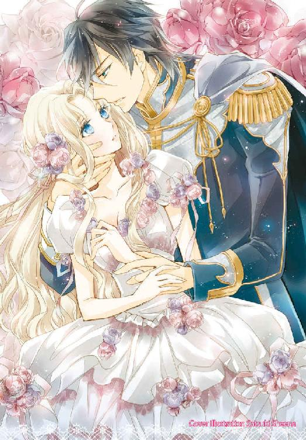
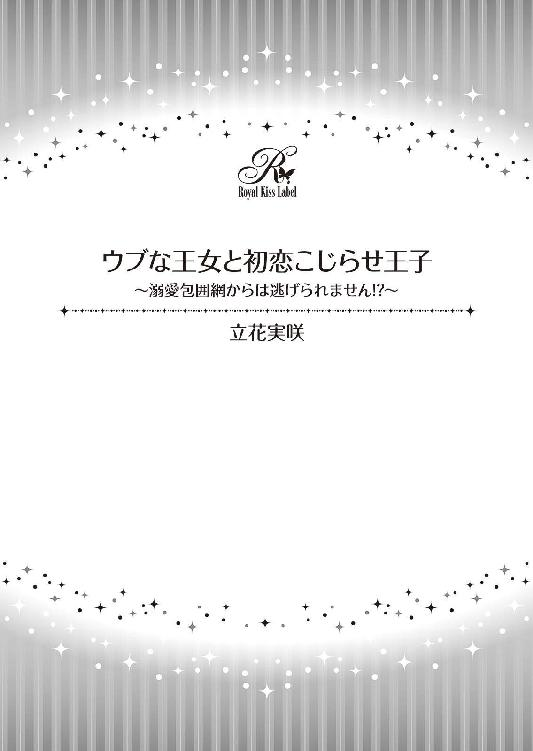
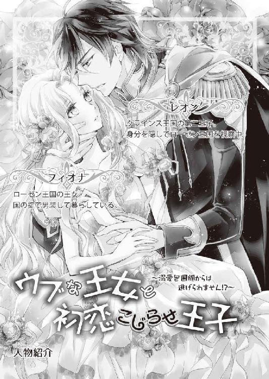
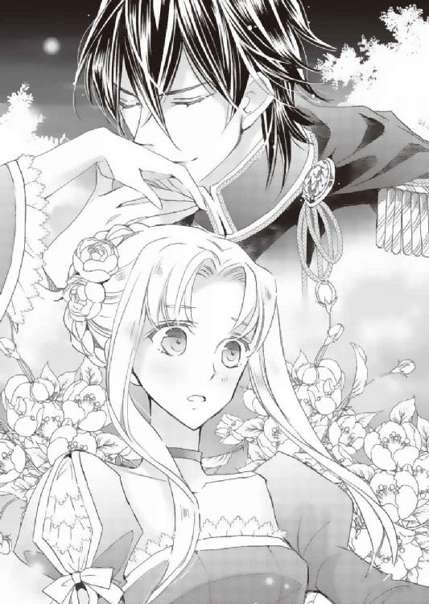
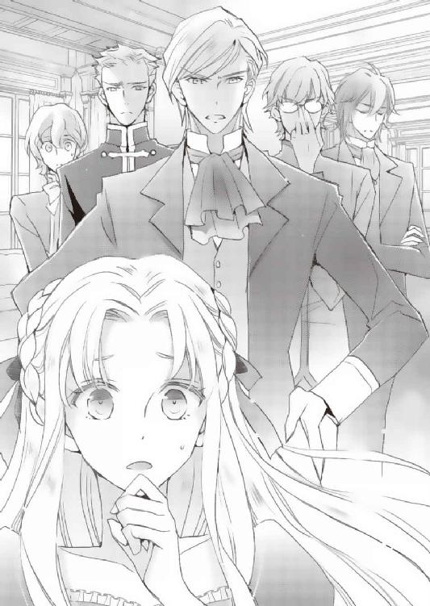
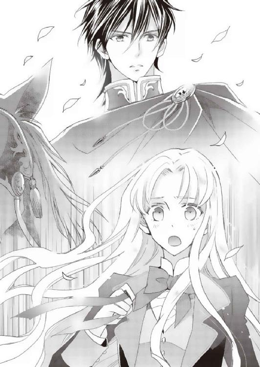
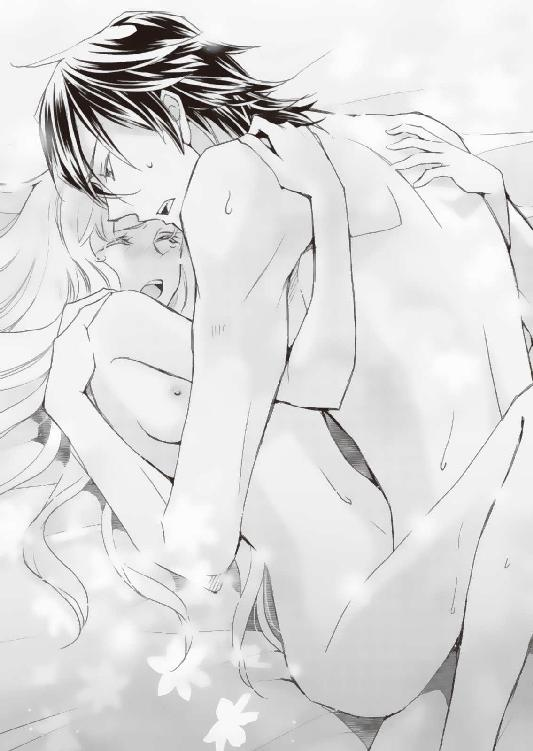
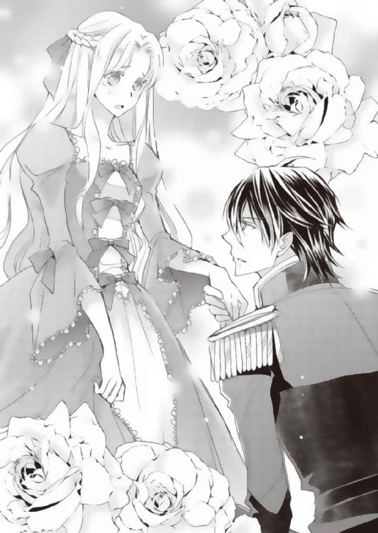
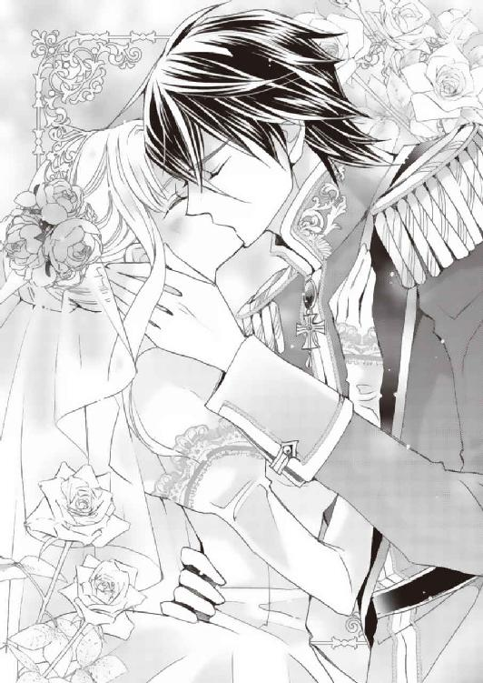

| ウブな王女と初恋こじらせ王子～溺愛包囲網からは逃げられません！？～【SS付】【イラスト付】 (ロイヤルキス文庫) | |
| 立花実咲 | |
| 株式会社ジュリアンパブリッシング (2018) | |


この物語はフィクションであり、実在の人物・団体・事件等とは、いっさい関係ありません。

イラスト・椎名咲月
腰まで伸びた美しい金髪はシルクのようになめらかで指通りがよく、こぼれんばかりの大きな青い瞳は、大海原の水面のきらめきを閉じ込めてしまったかのように煌めく。
慎ましく結ばれた唇は、咲き始めた薔薇のつぼみのように愛らしく、たおやかな彼女の仕草はまさに高貴なる王女そのもの。
彼女を見る者はたちまち心を奪われ、息をのむように魅入られる。微笑みは天使かあるいは女神のそれのよう。彼女こそが王女の中の王女といえるに違いない。
ところが──。
「いつまで、私はこの格好をしなければならないのかしら」
十六歳を迎えたローゼン王国の王女、フィオナ・アレンス・ローゼンは、今しがた『仮の姿』から『本来の姿』へと変貌を遂げた鏡の前で、大仰にため息をついてみせる。
窓辺からは初夏の爽やかな風が入り込み、カーテンが魚のように泳いでいる。ときおり雲から顔を出した陽の光が彼女のきめ細やかな肌を白く輝かせるものの、いつになっても彼女の表情は陰鬱なままだった。
「ため息ばかりつくと、幸せが逃げてしまうといいますよ」
侍女のモニカにそう慰められるものの、フィオナのため息は止まらない。
「私はもう十六歳なのよ？ 今度の建国祭では舞踏会に参加できることを楽しみにしていたのに」
フィオナは言ってから、唇をきゅっと引き結んだ。泣きたくなってしまったのを一瞬で我慢したのだ。
「わかっていたけど......心のどこかでは......ダメなんだって」
辛くても泣かない。悲しくても笑顔で、悔しくても凛々しく。そう言い聞かせ続け、フィオナの心も『仮の姿』に沿うように鍛えられていた。それでも、嵐が続けば川の堤防が決壊するように、いつかは限界がくる。その限界を、フィオナはこの頃ひしひしと感じているところだ。
「殿下......」
憐れむようなモニカの声がむなしくその場に余韻を落とした。
フィオナだってわがままを言いたいわけじゃない。他の誰にも打ち明けられない鬱積した想いは、こうして側についている侍女にでも聞いてもらうほかないのだ。
なぜ自分は王女に生まれてしまったのだろうと、フィオナは苦悩する。
「その殿下っていうのも、聞き飽きたわ。誰も名前で呼んでくださらない。私が王女だというのなら、せめて王女殿下って言ってほしいのに」
困った顔をするモニカを尻目に、フィオナはむぅっと頬を膨らませた。
「とにかく、十六歳になったんですもの。『仮の姿』でいなくちゃいけない理由はちゃんと教えてもらうわ。ぜったいに」
『仮の姿』というのは魔法で姿を変えられた......などといったファンタジックなものではなく、男装のことである。
実は、フィオナは幼い頃から特別に許された時以外ドレスを着ることを禁じられていた。公式の場に出ることは叶わず、居城以外の王宮内では王女ではなく王子の一人として振る舞えと命じられていたのだ。それがフィオナには不満だった。
「それに、だんだん胸元が苦しくて......窮屈で仕方ないの。このままでは息ができなくて倒れてしまうわよ」
ふっくらとしたデコルテのあたりを押さえながら、フィオナは呟く。
「たしかに、このところ殿下は、ますます女性らしく立派に成長されましたものね」
「そうよ。だから、男装なんてしていることが不自然なのよ」
なぜ男装をしなければならないのか、フィオナが父である国王に尋ねたとき、その理由は国の掟だから十六歳になったら教えようと濁された。
物心ついたときから十六歳までの間ずっと、男装をしなさいと命じられた。「それがこの国の王女の務めである」と言われれば、不本意ながら従うほかない。だが、矛盾している命令もあった。男装をしろと言う割に、王女としての所作を忘れずにいなさいと言うのだ。それがどうしても腑に落ちなかった。
王女を隠さないといけない国の政治的な事情があるかもしれないと、フィオナなりに感じることもあった。でも、いったいいつまで続ける必要があるのだろうか。日に日に女性らしく成長する自分の身を思うと、もういっそ男として生きる覚悟をしなさいと命じられた方が潔く諦めもつくというもの。
（この先......政略結婚でも考えているとか？）
フィオナは一抹の不安を抱く。今まで、それらしい話題が出ることもなかった。あまつさえ、国王は六人きょうだいの末姫であるフィオナにはとても甘く、会話をする機会があるたびに、「嫁に出したくない。ずっと側にいてほしい」と語りかけてくる。側近が呆れるくらいの溺愛っぷりだ。
王妃はフィオナが五歳のときに他界している。それで父はもしかしたら寂しいのかもしれないと、フィオナは思った。母の面影を探すようにフィオナ見つめては、遠き日を恋しく思うような目をしてやさしく微笑むのだ。
無論、国王夫妻が相思相愛であることはフィオナの誇りでもある。父からしか聞く事のできない母との馴れ初めや昔話はとても嬉しいものだった。
フィオナには五人の兄がいる。彼らはみな父に負けず劣らず、末の王女であるフィオナに甘い。目にいれても痛くないといわんばかりに溺愛する。そこはみな父譲りかもしれない。
兄たちは各々公務や勉学に励んでおり、忙しい身であるが、今日は七日後に訪れるフィオナの誕生日の前祝いとしてお茶会を催してくれるのだという。その為に、侍女のモニカにドレスを着付けてもらっていたところだった。
ドレスなんて久しく袖を通していなかったフィオナは朝から浮かれていた。しかし同時に、理不尽に強いられてきた特別な環境への不満がここぞとばかりに爆発したのである。
「たっぷりおめかしをしてお兄様たちにお披露目したら、ずっとこのドレス姿でいてほしいって言ってくださらないかしら」
密かな野望を抱きつつ、フィオナはドレスの裾をひらひらと左右に振ってみる。
「では、お支度を万全に整えなくてはいけませんね」
どうにか機嫌を直してもらおうと、モニカがフィオナを鼓舞するように語りかける。
「ええ。お願い。私をいつも以上にきれいにしてくれる？」
「かしこりました。王女殿下」
モニカはくすりと小さく笑った。おおかた、幼い少女のように浮かれているフィオナがおかしかったのだろう。
フィオナは不服だったが、モニカのことは心から慕っている大事な臣下である。いうなれば、やさしい姉に甘えているような気持ちなのだ。
いつもひとつに束ねている髪をほどき、丁寧に櫛を入れてもらう。頬にはおしろいをつけて、愛らしい唇には真紅の薔薇のような紅を塗ってもらった。
鏡に映された女性は、父と出会った若かりし頃の母の肖像画とよく似ていた。
「とてもよくお似合いですよ」
と、モニカが褒めてくれる。
フィオナもまんざらではなかった。美しく変わってゆく自分の姿を目にしつつ、五人の兄達の反応を想像し、思わず頬を緩めるのだった。
「──おまたせしました。王女殿下。いかがでしょうか？」
「ええ。とってもいいわ」
支度が一段落し、鏡の前でフィオナはご機嫌な調子で答える。モニカもホッと安堵し、笑顔になった。
「では、さっそく、王子殿下がお待ちになられている庭園へ、ご案内いたしましょう」
準備が整い、モニカに先導されて部屋を出ようとしたその時。突如ノックの音が響きわたった。
「どうぞ」
返事をするやいなやドアが開かれ、上品な香りとともに、高貴な微笑みを浮かべた人物が部屋の中に堂々と入ってくる。そしてその人物はフィオナを目にした途端に感嘆のため息をこぼすと、大仰に彼女を褒め讃えはじめた。
「嗚呼......なんと美しいのだ、我が妹よ。想像以上だ。僕はいったいこの日をどれほど待ちわびていたことか」
感極まっている彼は、フィオナそっくりの金色の長髪にそっくりの青い瞳を持つ、ローゼン王国の第一王子であり、フィオナの一番目の兄である。
「我が姫よ。愛らしい花よ。もういっそ、僕のこの手で手折り......散った花々を隅々まで食べてしまいたいね」
ロベルトは興奮したように言い、妹のフィオナの髪をたぐりよせると、毛先にまでも敬意を示すべく、唇を寄せる。このまま止めなければ、ずっと髪の毛に顔を埋めているかもしれない。
「あの、ロベルトお兄様......散ってしまったら、どうにもならないわ。できたら、かわいい花のままでいたいものね」
フィオナはやんわりと拒絶を試みる。
「散りゆく姿もまた、そそるものなのだよ。まだ、おまえには分からないかもしれないけれどね」
妹への溺愛も五人の兄の中でも彼が一番重症である。それはもう一種の病といえるほど。
フィオナの髪の毛から離れた彼は、名残惜しむように手の甲にキスをしはじめ、それでも飽き足らず、指先にキス、さらに唇にまで熱烈にキスをしようとする。
さすがにフィオナは慌てて身を引いた。
「ロベルトお兄様......！」
困惑した妹の声を聞き、ようやくロベルトはハッとしたらしい。
「あ、ああ、ごめんよ。この唇は......もう少し先にとっておいてあげよう」
と言いつつ、それでもまだ未練があるらしく、フィオナの唇をつんと指先でなぞった。
「はぁ......おまえが妹じゃなかったから......どれほどよかったか。いや、おまえが妹だからこそ、こんなにも血が騒ぐのか。惹かれてしまうのか」
そんなことまで言い出した。今にも押し倒しかねない勢いだったため、側にいた侍女のモニカが止めに入ってくれようとしたところ、別の誰かの声が割って入った。
「おい、変態兄王子。その辺にしろ。妹に変な気を起こすんじゃない」
不機嫌そうな低い声が響きわたる。
その声を聞いて、今度こそロベルトは憑き物がとれたらしい。物凄く嫌そうな顔をしてフィオナから離れた。
見れば、騎士のマントを羽織った短髪の男が、仏頂面を浮かべて立っていた。
「なんだ。カイ。おまえも早く見たくてたまらなかったんじゃないか」
ロベルトはそう言い、男をからかう。男はむっとしたように眉間に皺を寄せる。
「そうじゃない。変態から大事な妹を守るためだ」
剣呑な表情を浮かべつつ、男は気難しそうな口調でそう言った。
彼は、第二王子のカイ。冷静沈着かつ男気のある性格で、近衛騎士隊を率いている人物である。
「フィオナ、頭のおかしい兄は放っておいて、行くぞ」
そう言い、カイは強引にフィオナの手を取った。ゴツゴツとした無骨な手に掴まれると、逃れる術はない。
「ひゃっ......カイお兄様！」
一刻も早く離れようといわんばかりにカイに手を引っ張られ、フィオナは慌ててついていくほかなかった。
「待ちなさい。兄への敬意を教えなくてはならないようだね、カイ？」
当然、ロベルトは憤慨して二人の後ろをついてくる。
「知ったことか。早く引き離さなくては、妹に変態がうつる」
カイは軽蔑の目でロベルトを一瞥すると、さらに歩みを速めた。
「なんだ、その目は。僕はかわいい妹を愛でていただけだ。人聞きの悪いことを言わないでくれないか。とにかく、フィオナから離れるんだ」
「断る」
張り合っている二人の兄たちを尻目に、フィオナは苦笑いを浮かべるばかり。
この調子では、ロベルトの愛に感謝していいのか、カイに助けてもらえたことに御礼を言っていいのか、複雑だ。
（もう、お兄様たちは、仲がいいのか悪いのかわからないわね、いつも......）
フィオナはロベルトとカイに挟まれながら庭園の方へと行く。すると、そこにはまた別の二人の男の姿があった。
「あら？」
フィオナは思わず声をあげた。
彼女の声に反応した二人の男たちは、ぱあっと表情を明るくした。第三王子のエリックと、第五王子のニコラである。しかし彼らはすぐに困惑した表情を浮かべた。
「ん？ 何があったんだ？」
同じく彼らに気付いたカイが話しかけると、エリックとニコラの二人は顔を見合わせてため息をつく。
「兄上、実は先ほどから姿が見えない方がいるのですよ」
丁寧な口調で話すメガネをかけた彼はエリック。その隣で困った表情を浮かべている童顔の彼がニコラだ。
「ユアンがいないんだよ。ボク、ちゃんと時間は知らせたのにな」
と、ニコラがぼやく。
どうやら、第四王子のユアンが揃っていないらしい。周りには近衛兵が配備されているが、ユアンの付き人である騎士が、必死にあたりを探し回っている様子だ。
フィオナはその様子を見て、ピンと閃いた。
「あ、ユアンお兄様だったら、どこかでお昼寝しているんじゃないかしら」
フィオナが言うと、一同はそれぞれ頷いた。
「まあ、そんなことだろうとは思っているんだけど、でも、所在が分からないんだよ。ある時は木の上に、ある時は厩の中に......まったく王族とは思えない自由人っぷりにはもういっそ敬意を示すべきか」
ニコラは腕を組み、ため息をつく。
「あ、待っていて。きっとあそこにいると思うの」
「あてがあるのか？」
と、カイが問いかける。
「ええ」とフィオナは自信満々に答える。
ついこの間「最高のお昼寝場所を見つけた」とユアンが言っていたことをフィオナは思い出したのだ。
「じゃあ私がユアンお兄様に声をかけてくるわ」
「おや、抜け駆けはいけないね。僕も一緒についていこう」
ロベルトがそう言い、またもフィオナについてくる。実は、兄から逃れるための口実でもあったのだけれど、そう簡単に自由にはさせてくれないらしい。
「ならば、俺も行く。変態が何をしでかすかわからんからな」
カイまでもそう言い出し、マントを翻して二人の後に続く。残されたエリックとニコラは互いに顔を見合わせてどうしようかと相談する。
「喧嘩にならないように、私も一応ついていきましょう」
「だったらボクも！」
結局、末のお姫様のあとには四人の王子がぞろぞろとついていくことになったのだが──。
「フィオナ、待ちなさい。そんなに急いでは転んでしまうよ。怪我でもしたらどうするんだい」
ロベルトの心配する声がフィオナを呼び止める。
「大丈夫よ。慣れているもの」
と答えながら、フィオナは思わずため息を零した。普段の男装姿のことを思い出してしまったからだ。
「だが、今はドレスだろう。淑やかに歩いた方がいいんじゃないのか？」
カイに嗜められたフィオナは、仕方なく歩調を控えめにした。
「私がドレスを持ちましょうか？」
と、エリックが真顔で言う。しかしそれでは不格好だ。
「ボクも一緒に探しに行くよ。待って、フィオナ」
今度はニコラがまるで子犬がじゃれつくかのように、軽快に駆けてくる。
（もう。キリがないわ）
フィオナは苦笑し、兄たちひとりひとりに構うのをやめた。そして普段から誰より身軽なフィオナは、男装しているときと同じ調子でぐんぐんと広い庭の奥へと進んでいく。
「待ちなさい。フィオナ」
「走ると転ぶぞ」
「怪我をしたら大変です」
「あっ置いていかないでよ、フィオナ」
とりあえず過保護な兄たちのことを今は無視しよう。そろそろお腹が空いてきたし、早くユアンを見つけて、楽しみにしていたお茶会を開きたい。その一心だった。
息を切らしてお目当ての場所に到着したフィオナはきょろきょろと見回す。至るところから甘い香りが漂ってくる。
（あ、やっぱり......）
薔薇のアーチが架かった庭園をすり抜けると、ガゼボの背面にできた小さな森の木陰に寄り添い、うつらうつら眠っている猫っ毛の男を発見した。彼こそが、探していた最後の一人だ。
「もう、ユアンお兄様ったら。ねえ、起きて。とっくにお茶会の時間になったわ」
フィオナはそっと近づいて、声をかけた。しかし彼はまったく反応しない。
長いまつ毛がふわふわと風に揺れ、端正な横顔に光が当たっていた。彼が前世は猫だといっても誰も疑わないかもしれない。
「......ねぇ、紅茶は好きでしょう？」
ユアンの腕を掴んで、ゆさゆさと揺すぶってみる。彼は目をつむったまま迷惑そうに彼は眉間に皺を寄せた。フィオナはさらに声を大きくする。
「お兄様、起きて！」
「ん......」
彼はうるさいといわんばかりに、いきなりフィオナを抱きしめた。
「きゃっ」
不本意にも、ユアンの腕に飛び込む形になってしまった。息が苦しくてもがくと、わずかに腕の力が緩む。そして気だるそうなため息がこぼれてきた。
「......今日は昼寝には最高だ。フィオナ、一緒に寝よう」
そう言いながら、ユアンは意地でも目を開けてくれない。弄ばれていると感じたフィオナはむっとして、耳元でわざとはっきりとした口調で言った。
「私、とってもお腹がすいたの。おいしいお菓子がいっぱいあるのよ。お兄様だって好きでしょう？」
「ふうん......だからおまえから甘い匂いがするのか」
気だるげな調子でユアンは言う。まだ起きてくれそうにない。
「ね、早く、起きてったら」
痺れを切らしたフィオナはユアンの身体をさらに揺さぶった。
「そうだな......おまえが、キスしてくれたら起きてもいい」
ふっと口端を引き上げ、いたずらっぽい口調で言う。フィオナはさすがに呆れてしまったが、ここで折れてしまったら、兄は再び夢の世界へと落ちて行ってしまう。それだけは全力で阻止しなくては。
「もう。これならどう？」
フィオナはユアンの頬に軽くキスをする。なんていうことのない国の流儀である家族への挨拶のキスだ。
すると、ようやくユアンは片目を開けた。
「それだけか」
名残り惜しそうにユアンはフィオナを見つめる。
「......それだけ？」
きょとんとするフィオナに、ユアンはふっと笑みを浮かべた。
「なぜ、俺たちきょうだいがおまえを溺愛するのか、考えたことはあるか？ 血に飢えた異種の生き物だったとしたら？」
ユアンが声を潜めてそう言い、長い指先を伸ばし、フィオナの首筋をつっとなぞる。刹那、フィオナはぞくりと戦慄を感じた。しかしユアンは本気で言っているわけではない。目元が揶揄を楽しむように緩んでいる。
「もう、お兄様、からかわないでくださる？」
フィオナは白い目でユアンを見た。彼はいつもこんなふうに面白おかしくフィオナで遊ぶのだ。
「嘘か本当か。試してみればいい。そうだな。おまえが俺の唇を受け入れてくれたら、俺が、おまえの肌に牙を突き立て、最高に甘美な経験をさせてあげよう」
油断をしていたら腕を掴まれ、ユアンの方に引き寄せられてしまう。
「待っ......」
フィオナは目を丸くする。ユアンの顔が近づいてきたそのとき、突如、二人の間に降り注いでいた光が遮られた。
「待ちなさい！」
剣呑な声が響きわたった。
「その唇は、おまえには渡さないよ、ユアン」
「チッ。変態がここにもう一匹いたか」
振り返れば、ロベルトとカイが顔を引き攣らせながら、ユアンとフィオナを見下ろしていた。
「いったいどういうつもりなんだい」
ロベルトが憤慨したように言う。
「ちょっとした休息に妹で遊んでいただけさ」
「遊んでいた、だって？」
飄々としたユアンの態度を見たロベルトは、ますます怒りはじめた。掴みかかりかねない様子だったため、その緊迫した空気を割るように、すかさずエリックが仲裁に入る。
「ま、まあまあ。落ち着いてください。見つかったわけですし、早く連れて戻りましょう。フィオナが楽しみにしているんですよ。かわいい妹のためにも、ね」
その後ろで、平和主義を決め込んだニコラもうんうんと頷く。
「主役はフィオナなんだから、誰のものでもないでしょ。早くお茶会開こうよ。ねえ、フィオナ」
「ええ。楽しみにしていたんですもの。だから、ユアンお兄様も、いきましょう」
「......はぁ。仕方ないな。わかったよ」
ユアンが渋々と気だるそうに身体を起こすと、すかさずフィオナとニコラが彼の手を引っ張った。
「早く、早く」
「......おい、歩くのはゆっくりさせてくれ」
低血圧らしいユアンが眉をひそめる。それから、ぐんと背伸びをすると、ユアンはぽつりと呟いた。
「フィオナも十六歳か......」
その言葉に、残りの四人の王子たちがぴくりと反応する。すると、ロベルトが険しい表情を浮かべた。
「わかっているね？ 各々ぬかりなくやるように」
声を潜めて言うロベルトに、それぞれが無言のまま頷く。
「なんの話？」
様子のおかしい兄たちを見て、フィオナが首をかしげる。
「いや、なんでもないよ。お茶会のことさ。おまえのお祝いができるのが嬉しいんだよ」
ロベルトはにっこりと微笑んだ。
フィオナは五人の王子をそれぞれ見回す。同じようにやさしく見つめる視線を受け、フィオナは嬉しくなって頬を緩めた。
「ありがとう。とっても楽しみだわ」
このときフィオナは、兄たちが何を企んでいるかなんて考えもしなかった。
テーブルに並べられたお菓子は色鮮やかで、どれも美味しそうだ。フィオナは瞳をきらきらと輝かせ、にっこりと頬を緩ませた。
予定よりも遅くなったが、ようやくお茶会がはじまり、フィオナは胸を踊らせる。大きな円卓の白い透かし彫りのテーブルとおそろいの白い猫脚の椅子には、フィオナを含めた六人が着席する。
フィオナを中心にして、彼女の正面には主催者であるロベルトが座る。右側にはカイ、左側にはエリック。フィオナの左側にはユアン、右側にはニコラ、が着席する。年功序列順だ。
給仕係が紅茶を淹れはじめると、湯気がたちのぼり、甘やかな香りがほのかに漂う。しばし、和やかに過ぎていく時間を堪能したあと、フィオナは姿勢を正し、兄たちの様子を伺った。
やはり鬼門は、第一王子であるロベルトだ。きょうだいの中で一番権力がある人物であることは言うまでもないが、きょうだいのうち一番にフィオナを溺愛しているのもまた彼なのだ。
少し緊張しながらも、フィオナは気取られないように取り繕いながら、ロベルトに声をかけた。
「お兄様、もうすぐ建国記念祭ね。私、とても楽しみだわ」
フィオナが笑顔で言うと、ロベルトもにこりと穏やかに微笑み返し、ティーカップに口をつけた。優雅に紅茶を堪能したあと、彼はティーカップをソーサーに戻しつつ、フィオナを再び見る。
「城の内部はもちろん、城下町もしばらく賑やかになるな。期間中は、どこにでもおまえの行きたいところへ連れて行ってあげよう」
その言葉を聞いた瞬間、フィオナは思わず身を乗り出す勢いで問いかけた。
「ほんとうに？」
「ああ。もちろん」
ロベルトが機嫌よく返事をしたところで、脈アリと踏んだフィオナは勇気を奮い立たせて、切り出した。
「あのね、お兄様、実は......私、ずっと言おうと思ってたの」
心臓が激しく鼓動を打っている。期待と不安と興奮と。えもいわれぬ様々な感情がフィオナの中にこみ上げてくる。ともすれば、全身から汗が吹き出しそうだった。
どうしてもこの日でなければ、打ち明けられなかったことをフィオナはついに告げようとしていた。
「何だい？ フィオナ」
言うか言うまいか、ぎりぎりまで喉に張り付いた言葉を引き剥がし、フィオナは口を開く。
「私、やっぱり舞踏会にどうしても出たい。こんなふうにドレスを着て、大広間でダンスを踊ってみたいの。お願い。お兄様」
その瞬間、きょうだいの視線が一斉にフィオナに集まった。しかしみんな黙ったまま、ロベルトの発言を待っているようだ。
フィオナは震える手でドレスをきゅっと握りしめて、ロベルトの返事を待つ。
「なるほど......ダンスか。いいね。僕が教えてあげよう」
一拍おいたあと、ロベルトは鷹揚に微笑んだ。
フィオナはやっとわかってもらえたのだと思い、表情をぱあっと輝かせる。
「それじゃあ......」
「だが、すまないね。おまえを舞踏会に参加させるわけにはいかないんだ」
一変して、申し訳なさそうにロベルトが言った。その声は冷たい檻籠みたいに、冷ややかだった。
「どうしてなの？」
なんとか食い下がろうとするフィオナと、頑なに受け入れようとしないロベルトの間に、さっきから硬い表情を浮かべていたカイが横から口を挟んできた。
「掟がある」
「......掟？」
フィオナは意味がわからないと首を振る。だが、続いてエリックが同じように繰り返した。
「そう。掟......ですからね」
「残念だけど......そうなんだよね」
しゅんとした顔をしたニコラが、フィオナに同情するような目を向けた。
兄たちは沈黙を守っている。フィオナが引くしかないと、目の前で鉄壁を築き上げてしまう。
十六歳になったら舞踏会に参加したいと夢見るフィオナに対して、兄たちは誰も嬉しそうにしない。彼らは揃いも揃って「掟だ」という。
絶望と憤怒と悲哀と焦燥と、様々な感情がフィオナを追い立てる。
「掟っていうのは何なの。どうせ教えてくれないんでしょう？ それは、いつまで続けなければいけないの？」
フィオナは懸命に訴える。まるで頑丈に閉められた鳥かごの中で、飛べない鳥が何度も羽ばたくかのように。なんとか理解してほしいと、気付いてほしいと、一生懸命に羽を動かす。
しかし、幾らもがこうとも、兄の返事は変わらなかった。
「ダンスなら幾らでも踊ってあげよう。ドレスが着たいなら、いくらでも着せてあげよう。けれど、建国記念祭は......いつもどおりにしていてもらうよ。今日のことでおまえをその気にさせてしまったことは謝ろう。それも、フィオナを愛しているからこそ......なんとかできないか兄として色々考えた結果だったのだ。許してほしい」
いつも過保護で凄まじい溺愛をぶつけてくるロベルトなのに、こういうときだけは正しい兄の顔をする。それが正しいと、フィオナには思えなくて、なんとか言い募ろうとするのだが、激しくこみ上げてくる悲しみで、喉の奥がギュッと締め付けられてしまった。
（どうして、いつもそうなの......）
その言葉を発することなくフィオナは唇を固く閉ざし、俯いた。
今にも涙がこぼれてしまいそうなそのとき、隣からため息がこぼれてきた。つられてフィオナは顔を上げる。
ため息の主は、さっきから一人無関心顔でぼんやりと紅茶をすすっていたユアンだった。彼はまるで眠りから覚めた猫のように気の抜けた欠伸をしたあと、そっと口を開いた。
「禁じれば募るのが人間の性というものでは。ならば、俺からひとつ提案しよう。こうすればいい。フィオナは別人になりすますんだ。誰かと会っても、フィオナが王女であることは一切秘めたまま、相手に名乗らない約束ならいいんじゃないか？ 表に出さないことと同義だ。それならば問題ないだろう？」
フィオナは弾かれたようにユアンを見た。やっと味方ができたと気持ちが昂る。その勢いのままに、フィオナは再びロベルトに懇願した。
「お願い。今、ユアンお兄様が言ってくださったようにするから」
きっと十六歳になったタイミングでこうでも言わなければ、一生籠の中の鳥だ。そんなふうに思ったフィオナはよりいっそう懸命に訴えた。
「しかし......」
「一生のお願いよ」
そう。今叶えなければ、きっかけをなくしてしまうだろう。
十六歳という時はもう二度と戻らない。
消え入りそうなフィオナの声を最後に、長い沈黙が続く。ロベルトが葛藤の表情を浮かべるが、根負けしたかのように、目を瞑った。
「......わかった。譲歩しよう。無論、ユアンが言ったように、制限つきだ。名乗ってはならない。その約束は守れるかい？」
ロベルトがじっとフィオナを見つめる。フィオナは姿勢を正し、同じように兄を見つめた。
「ええ。約束する」
ありのままの姿で外には出られない。名乗ることはできない。それらは不本意だけれど、すべてを禁じられるよりは何百万倍もマシだと、フィオナは思った。
「皆、反対意見はあるかい？」
ロベルトがきょうだい皆に意見を求めると、それぞれが首を横に振った。
「提案者も、無責任なことはするまい」
カイがそう言い、腕を組んだ姿勢のまま、じろりとユアンを見る。
ユアンはというと、気だるそうに椅子にもたれかかりながら、やんわり反論をする。
「妹に関しては、きちんと考えているつもりですよ。かわいい子ほど旅をさせろと言うでしょう？」
「......たしかに、そうですね。できれば、特別なときくらいは......叶えてあげたいと思いますね、私は」
眼鏡を指で軽く押し上げながら、控えめにエリックが同調する。すると、末の王子であるニコラも、ユアンとエリックに続き、勢いよく同調した。
「そうだよ、ボクも同感だ！ フィオナの可愛い姿をもっと見たいよ。ねえ、兄上、そう思うでしょう？」
全員から視線を集めたロベルトは、しばし考えあぐねたあと、小さく頷いた。
「では、改めてきょうだいの契を交わそうではないか。誰もが約束を違えることのないよう、ここに誓いを立てよう。けっして忘れぬように」
真紅の紅茶を注がれたティーカップをそれぞれが手に持ち、おもいおもいに口をつける。そうしてお茶会は誓約の場へとなりかわるのだった。
フィオナの父、ハインツ・ノイ・ローゼンが治めるローゼン王国は大陸の湾岸に位置する風光明媚な国だ。
王城は豊かな森の小高い丘にあり、金の獅子が描かれた深蒼色の国旗が風にはためき、広い海を常に見下ろすように聳え立っている。
近年は諸国との和平を結び、様々な国との貿易が盛んに行われ、ローゼン王国はみるみるうちに商業国家として発展してきた。
今日は、ローゼン王国の建国記念祭が開かれており、国中の至るところが賑わっている。祭りはこれから十日ほどに渡って催される予定だ。
城の内部では舞踏会が開かれ、王族は諸国からの来賓のもてなしに忙しく、常に静けさを保っている城の中は使用人の往来で騒がしい。フィオナの兄たちはもちろん各々公務に出ており、通常時とは異なる特別な持ち場にもついている。
フィオナはというと、いつものように公の場には姿を見せず、普段暮らしている隔離された居住の棟から出ていなかった。
末の王女の存在は王宮内ですらも認知されていない。王族の中でも近しい人間しか彼女の素性を知らないのだ。いうなれば王子の予備の駒であり、王女の幽霊を見たという噂の域を出ない。
しかし今日は違う。約束の時間が来れば、フィオナはいよいよ自由になるのだ。今日は彼女にとっての特別な記念日にもなるだろう。髪を一つに束ねることなく、窮屈な男装に縛られることもなく、ありのままの自分で、公の場に出られるなんて、生まれて初めてのことなのだから。
「いよいよね」
フィオナの胸はドキドキと弾んでいる。コルセットで締められた胸元がいつも以上に窮屈に感じ、手に汗も握っていた。自分が言い出したことなのに、緊張しすぎて目眩までしてきた。
なんとか落ち着くようにと自分に言い聞かせ、呼吸を整えていたそのとき、ドアのノックの音がして、弾かれたようにフィオナは顔を上げた。
「準備はいいか？」
中に入ってきたのはユアンだ。
フィオナは「ええ」と返事をする。その声がやはり緊張のせいで少し上ずった。
一瞬、ユアンはフィオナの王女としての姿に見惚れたのか、ハッとした顔をして言った。
「これまでのレッスンでわかっているだろうけどな、ダンスは得意な方じゃない。たとえ練習をしようが、本番でうまくやれるとは限らないぞ」
舞踏会の場に合わせて普段よりも格式高い盛装をした彼こそ美しいが、不本意そうな表情をしている。
「じゅうぶん。ユアンお兄様には感謝しているわ」
フィオナが今日という日をお迎えるためのダンスレッスンは、兄たちの中から平等に一人ずつ時間をもうけた。問題は本番の話だった。
昨晩、フィオナのエスコート役をめぐって一悶着があった。その場ではいったいどのくらいの時間、議論が交わされていたことだろうか。日が傾く頃に話をしていたはずが、窓の外を見るとあたりは真っ暗になっていた。
立候補者は、ユアンを覗いた四人全員だ。だが、上二人の兄たちが納得しないので、フィオナが口を挟む余地はなかった。
そういうときは大抵、中立主義のユアンに委ねられる事が多い。事の発端となったユアンが責任を持ってフィオナのパートナーになるのが一番よいのではないかと、頭脳派のエリックが提案した。
すると、睡眠をこよなく愛するユアンのことだから、彼が公務をさぼらないための枷にもなるだろうということで結論が出され、騒動はようやく終幕したのだった。
「仕方ない。かわいい姫のためにひと肌脱ごうか」
あくびを漏らしつつ、ユアンがそう言い、フィオナの前にすっと左腕を差し出す。
フィオナは嬉しくなって微笑むと、兄の腕に自分の腕を絡ませた。
大広間に入ると、大勢の賓客が訪れていた。その数に圧倒されるばかりか、想像した以上に華やかな社交の場をまのあたりにし、フィオナは思わず息をのんだ。
美しく煌めくシャンデリア、着飾った紳士淑女たち、宮廷楽団の生演奏......語らい合う人々。手を取り合って踊る人々。急に心細くなってしまい、フィオナはユアンの腕をぎゅっと掴む。きょろきょろと辺りを見回していると、ユアンが振り向いた。
「名乗らないという約束は覚えているか」
「も、もちろんよ。約束だもの」
「一応、おまえのことは従姉妹の公爵家のご令嬢という筋書きにしてある。だが、あえて説明する必要もないし、作り込むこともない。逆にボロが出る可能性もあるからな。とりあえず何か聞かれたら、あいまいに濁すか、適当におまえが覚えやすい名前を言えばいい。そのほうが不自然にならずに済む。自由な時間が惜しいなら、精一杯なりきることだ」
「わ、わかったわ」
真っ白になりそうな頭の中で、なんとかフィオナは今言われたことを自分に言い聞かせた。
「では、素敵なレディ。私と踊っていただけますか」
フィオナの緊張を解すためだろうか。普段は眠たい顔ばかりしているユアンなのに、珍しく王子らしい、麗しい微笑みを浮かべていた。
「もちろん」
初めての社交界。この日のために用意してもらった新しいドレスに袖を通し、ひとりの女性として大広間にエスコートされた。その事実は、フィオナにえも言われぬ高揚感を与えてくれる。何もかもが初めての体験に、しばらくは兄とダンスを楽しんだ。
けれど、ふと冷静になったとき、まわりの女性が羨ましいと思ってしまった。
当然ながら、男装のまま生活していたため、出会いだってなかった。友だちも、恋人も、できるわけがない。意図的に出会わないようにしていたのだから──。
空に憧れ、外界に夢を見て、手を引いてもらい羽ばたいた。けれど、そこにあったのは独りぼっちの現実。守ってくれる存在がいなければ何もできない、たった一人の自分。
いったい自分は何のために生まれてきたのだろう。そんな疑問がまた浮かびあがってくる。
「よそみをしていると、転ぶぞ」
「ごめんなさい」
考え事をしているとユアンに腰を抱きとめられ、フィオナはハッとする。
その刹那、シャンデリアの灯火がまぶしくて目眩がする。
「大丈夫か？ 具合でも悪いのか？」
ユアンは心配そうにフィオナの顔を覗き込んできた。
「いいえ。嬉しくて、つい......」
とっさにフィオナは言い訳をした。
せっかくエスコートしてくれているのに、暗い顔をしてたら、兄に申し訳ない。
ユアンはフィオナの顔色を確かめたあと、複雑そうに眉根を寄せた。
「まあ、わからないでもない......ておきたい......というのもな。しかしそれは......」
「え？ なんて言ったの？」
まわりの声にかき消され、ユアンが何を言っているかはっきり聞き取れなかったため、フィオナは問い返す。
ユアンは憑き物がとれたかのようにハッとし、頭を軽く振った。
「いや。おまえがあまりにも可愛いから、よその女に目がいかないって言ったんだよ」
ロベルトならまだしも、ユアンがそんなことを言うのは珍しい。もしかしたら彼も普段とは違う場に、酔っているのかもしれない。こころなしか、ほんのり耳が赤い。
「ふふ。そんなこと言ったら、他のレディに失礼になるわ。お兄様だってほんとうは妹とじゃなくって、ステキな女性と踊りたいでしょう？」
お茶目な表情をしてみせるフィオナだったが、兄は話には乗ってくれる気配はない。
「そういう相手がいるならな」
と一蹴されてしまい、フィオナは唇をつんと尖らせた。
妹の立場からの贔屓目を除いても、兄たちはみなそれぞれ美しい容姿をしていると思う。妹を溺愛している時間がもったいないほどに。そう感じるのは、フィオナもまた兄たちを愛しく思っているからだろうか。彼らに恋人そしていつか妃ができたなら、寂しいと感じるだろうか。
（恋......）
フィオナは一度も恋をしたことはない。初恋というものも経験したことがない。隔離され、男装して暮らしていれば当然のことである。
語らい合う恋人たちの仲睦まじい様子を目にするたび、フィオナはもどかしい衝動に駆られた。
できるならば、恋をしてみたい。誰かとおしゃべりをしてみたい。そんな欲求がどんどん高まっていく。
知らない世界をもっと知りたい。空が青く、太陽が明るく、風の本当の冷たさを知るように、風に吹かれる花の香りに包まれるように。生きている証を自分の魂に刻みたい。
宮廷楽団が奏でる音色に酔いしれながら、フィオナはそんなことを切に願った。
ワルツの曲が終わったあとのことだった。初老の男性がユアンに声をかけてきた。
「殿下、このたびはおめでとうございます。少し、我が娘のことでお話をよろしいですかな」
立派な髭を生やした恰幅のいいその男性は、声を潜めてそう言った。
ちらちらと視線を感じて、フィオナは慎ましやかにドレスを軽く持ち上げて挨拶をする。
「レディ、邪魔をして申し訳ない」
「いいえ。構いませんわ」
おそらくユアンへの縁談の話を持ちかけたいのだろう。次から次にひっきりなしに話があるのだと聞いている。五人の王子の誰とでもいいから結婚させたいと思っている貴族は少なくない。幾つか縁談の話が出ているようだが、兄たちは誰もちっとも乗り気にはならないらしい。
「すまないが......」
と、ユアンがフィオナに耳打ちしてきた。どうやら男性と込み入った話があるようだ。
「バルコニーでしばらく休んでいてくれるか。俺が戻るまで待っていてくれ」
「ええ、わかったわ」
フィオナも初めての体験で疲れていたのでちょうどよかった。ユアンが賓客に捕まっている間、フィオナは言われたとおりにバルコニーに移動した。
夜風が、むきだしになった素肌をやさしく撫でていく。夜空に浮かぶ月は、おだやかな光を放っている。宮廷楽団の奏でる美しい音楽が流れこんでくる。今夜はとても素晴らしい日になるはずだった。
（嬉しいけれど......こんなものかしら）
フィオナは月を眺めて、体を蝕むもどかしい熱を吐き出すように、ため息をついた。
楽しい。楽しかった。けれど......。半分はそう思い込ませているだけ。心の底からそう感じているわけではなかった。今夜のことは、フィオナが想像していたものではなかった。
身分を偽ったままでは、心から楽しむことができない。結局、今の自分は作り物。そんなふうに冷静に見つめる自分が心の中に存在していることを無視はできない。箱庭の中で泡沫の時間を過ごしたあとは、これから先もずっと、心の仮面をかぶり続けるしかないのだ。
もういっそ、男として生きられたら......。選択肢があるからいけないのだ。だから気持ちが揺れてしまう。悲しい気持ちになってしまう。でも、身体を男に作り変えることはできない。心はいつだって女だ。自分を偽り、気持ちを押し殺して、生きていかなくてはならない。
（もう、どうしたらいいかわからないわ）
フィオナは唇を噛みしめる。
何も考えずにいた。きっと社交界は素敵なところで、経験してみたかっただけだった。けれど、あまりにも眩しいその世界は、フィオナの心を悪戯に刺激し、そして刃のように切りつけてくる。泡沫の夢なのだと割り切ろうとすればするほど悲しくなってしまった。偽物の世界に生きる自分にはあまりにも敷居が高すぎた。
もうこのドレスを脱いでしまおうか。フィオナは衝動的に思った。こんな気持ちになるくらいなら、男装したままにぎわっている城下町を気軽に歩いた方がよかったかもしれない。自分にはそれがお似合いなのだ、と。
そんな感傷にひたりかけたとき、バルコニーに人の足音が響きわたった。
フィオナは弾かれたように振り向く。
兄......の気配ではない。貴族の中でもいっとう高貴な身なりをした長身の男性がこちらを見ていた。
突然のことで、フィオナは狼狽える。
「しばらくローゼン王国に滞在しているが、見ない顔だな」
闇夜のバルコニーに、低い声が響き渡った。彼の黒髪からのぞいた翠玉石の瞳が、フィオナをまっすぐに捉える。
彼の力強い視線に囚われ、フィオナはどきりとした。整った鼻梁と形のよい唇が、彼の精悍な表情をますます引き立てているようだ。そこはかとなく漂う威圧感に、フィオナは萎縮してしまう。王族に引けをとらない身分の高い人かもしれない。
「あ、あの、私は......」
何をどういったらいいか、とっさに言葉が出てこない。バルコニーに来ては行けないという決まりはないし、一人でいれば男性に声をかけられることもあるかもしれない。けれど、フィオナには社交界における男女間の知識がなかった。
「ああ。先に名乗るのが筋だな。俺の名は、レイン・メルツァーだ」
「私は、フィ......」
そこまで言いかけて、 フィオナは、兄との約束を思い出し、口を噤んだ。
（待って、ダメ......えっと、別の名前を考えていたはずなのに。どうしよう。私ったらうっかりしていたわ）
頭が真っ白になってしまい、フィオナはうつむいてごまかす。
「何かわけありか？」
レインと名乗った男は、僅かに眉を顰めた。
「い、いえ。そういうわけでは......」
まごついていたら、いきなり顎を持ち上げられ、フィオナは目を丸くする。
いったい自分の身に何が起きたのだろうか。
初対面の相手に、それも女性に対して無作法に触ってくる人間など見たことがない。
まがりなりにもフィオナは王女なのだ。
「な、何をするの......」
「気に入らないからだ。事情は知らないが、とにかく、人と話をするときは、まっすぐに顔を見ろ。それが礼儀というものだろう」
端正な顔をした彼がそう言い、顔を間近まで近づけてくる。フィオナは驚くものの、すぐには間合いを取れず、瞳を揺るがすだけだった。
「ほら、それだ。そうやって、目をそらすなよ」
低い声音に引き止められ、心臓が急に絞り上げられたみたいに苦しくなる。鼓動が駆け足になり、息ができなくなりそうだった。
すると、レインは急に不機嫌そうに眉間に皺を刻んだ。
「......まったく。美人がいたと思えば、不躾な女とは、読み違えたな。ここがクラインスだったなら、おまえはとっくに捕縛されているぞ」
そう言う彼の頬が心なしか赤い。それにその言葉の意味がフィオナにはわからなかった。その間にもだんだんと冷静になっていく。
初対面の相手に罵倒される理由はなんだろうか。乙女の顎を鷲掴みにしているこの人こそ、失礼なのではないだろうか。そう思ったら、急に腹が立ってきた。
「どうしてそこでクラインス王国が出てくるのよ。こんなことで捕縛？ 冗談言わないで。残念ながら、ここはローゼン王国よ。だいたい、あなただって、レディにその態度は失礼だわ」
とっさにフィオナはそう言ってしまった。あまりにも彼が失礼過ぎるからだ。
すると、レインは意表を突かれた顔をする。きっと彼はフィオナのことを指図すればいうことを聞くような大人しい女だと思い込んでいたに違いない。
フィオナは少しだけ彼に勝ったような誇らしい気持ちになった。
しかし彼には逆効果だったらしい。
「ふん。おまえのせいだ。急にうつむくから、何か疚しいことでもあるのではないかと思ったんだ」
不本意だったのか、レインは頬をうっすらと赤くし、むっとした表情を浮かべる。
互いの顔を見合わせると、なんだか微妙な空気が流れた。とりあえず、いくら大広間から離れた場所だとはいえ、言い合いをする場ではない。
「それは......ごめんなさい。私、こういう場になれていないから、戸惑っただけよ」
フィオナは訥々と言い訳をした。
「ふうん。態度は生意気だが、素直な女はきらいじゃない」
レインは傲慢にもそう言い放った。彼はフィオナと違って目の前の相手に謝る気にはなっていないようだ。なんだか悔しくて、また苛立ってきてしまう。
「ねえ、おあいこでしょう？ あなただって、さっきの失礼な態度を謝るべきだわ」
「俺は別に、そのつもりじゃない」
「無責任よ。そのつもりじゃなくても、相手にそう思わせたなら同じことでしょう？」
フィオナがお説教をしはじめたのが面倒くさくなったのか、レインは戦意喪失とも言いたげに、大仰にため息をついてみせた。
「そこまで言うのなら仕方ない。責任をとろう」
そういうレインの真剣な顔が間近まで迫ってくる。
不意打ちで顎をついっと掴み上げられ、フィオナは目を丸くした。
（......え？）
フィオナは次に何が起こるのかまったく想定していなかった。
目の前にさらりと黒い髪がきらめく。改めて、端正な顔立ちをしたレインに見惚れながら、けれど、じっくり眺めている暇はなかった。彼の長い睫毛が伏せられていき、フィオナの唇にはやわらかい感触が伝った。夜のバルコニーに......軽く湿った音が響いた。
フィオナは目を開けたまま、ただ現実を理解しようとした。
自分の唇に、レインの唇が触れている。ただそれだけはわかった。
「ん、な、何するの！」
慌ててレインの胸を突き飛ばし、自分から距離をとろうとする。だが、彼は腕を離してくれなかった。
「責任をとれと、おまえから誘ったくせに。一度で終わりにしていいのか？」
と、大真面目な顔をして尋ねてくるものだから、フィオナは彼を思いっきり非難する。
「そ、そういう意味じゃないわよ。そんな。い、一度も何も......初めて、だったのに」
そう、生まれて初めてのくちづけだった。それなのに、初対面の男に奪われてしまった。ショック以上に羞恥心の方が上回り、この場から今すぐ消えてしまいたかった。
「それなら一緒だから安心しろ。俺も初めてだ」
と、レインは顔を赤らめながら言った。
「......え？」
きまりわるそうなレインの表情をしげしげと眺めていると、彼はため息をついた。
「だ、だから、初めてだと言ったんだ」
「は、初めて、なのに......私に、したの？」
意味がわからなかった。まったく理解できない。なぜ初めてのキスをしたのか。そもそもキスをする理由もわからない。完全にフィオナはパニックだった。
「だ、だから、おまえが責任をとれというからだ」
レインはそんなふうに罵倒してくる。
「こんなこと望んでいないわ。あなただって、言われたからって、すすす、するものなの？」
唇の感触がじわりと蘇り、フィオナの頬もだんだんと上気していく。そんなフィオナを見つめるレインの顔もますます赤くなっていく。そして彼は感じ入ったようにぽつりと呟く。
「生意気な女だな......だが、悪くない反応だ。嫌いじゃない」
「な、何言ってるのよ。ぶつぶつと」
「気に入った。おまえを俺の妃にすると決めた」
「な、なな......」
フィオナはそれ以上言葉にならなかった。この男、正気とは思えない。
「今のは......詫びだ。後日きちんと求婚する。だから、おまえは安心して待っていろ」
彼の言動に全くついていけない。我を押し通す割に、こちらの様子を伺っている節がある。勝手にキスしておきながら、彼も初めてだという。それに、頬を染めながらフィオナのことを妃にすると断言した。
もしかしてこの人は、恋愛に不慣れなあまり自分の不自然な行動に自覚がないのだろうか。それとも元々天然なのだろうか。
フィオナは唖然としてレインを見た。
兄たちの溺愛攻撃に慣れているとはいえ、こういうタイプは初めてだ。
「そ、そうじゃなくて。どうして会ったばかりの私にそんな──」
「俺の勘だ。誰でもいいわけじゃない。おまえに決めた」
フィオナの言葉を遮って、レインは堂々とそう言い切った。
「そんな......私の気持ちを無視しないで」
「勘には自信がある。もっとおまえのことが知りたい。おまえも俺のことが気になって仕方なくなるはずだ」
打って変わったように真剣な顔で見つめるレインに、フィオナはどきりとする。レインのまっすぐな瞳は水面のきらめきのように無垢で綺麗だった。不覚にも見惚れてしまう。
「私は、あなたのことなんて......」
好きになるつもりはないし、その予定だってない。そう言いたかったのに、そっと手を引き寄せられ、手の甲に敬愛のキスを落とされてしまう。そしてレインは指先に唇を寄せながら、フィオナに懇願する。

「俺と一緒にいれば、ただ美しいだけの壁に咲く花や、窮屈に閉じ込められた籠の中の鳥になる必要はない。俺が、おまえの望む未来を作ってやる」
断言するレインに、何か心を見透かされたような気がして、フィオナは動揺する。
「なぜ、そう思うの......」
「おまえの顔を見て、そう思ったんだ」
「あなたが幸せにしてくれるっていうの」
「ああ。少なくとも、今よりは幸せになれる。俺がそうしてやる」
今よりもきっと幸せになれるという言葉の暗示が、拒む理由を奪った。
心がざわついた。風にあおられる葉掠れの音がどんどん大きくなっていく。
（私の望む未来を......この人が？）
彼の言葉に揺さぶられながら、冷静になりなさいと頭の中で声がする。
「......無理よ。あなたは私の何もわかっていない。勘で決めるだなんてよしてよ」
フィオナは声を振り絞って言った。
「他に好いた男がいるのか」
レインは尚も食い下がってくる。
「とんでもないわ。舞踏会だって初めてだもの」
「ダンスを踊ったことはあるだろう？」
「ええ。さっきおにい......いえ、踊るのも初めてで、休憩しにここにいたの」
しどろもどろにフィオナは答える。これ以上口を開いたら、ボロが出てしまいそうだ。
「もうじゅうぶん休んだのだろう。向こうに行くぞ」
「あっ......ちょっと......！」
力強く抱き寄せられ、その男らしい仕草に、心を奪われる。
（私、どうしてドキドキしているの......）
彼は兄たちとは違う。彼は紛れもなくフィオナにとって異性だ。
少し傲慢なところがあるようだけれど、自分の気持ちにまっすぐな人なのかもしれない。
「待って。戻って。大広間は......困るわ」
兄に見られたら何を言われたかわかったものではない。
「なぜだ？」
「あの、実は......ダンスに自信がないの」
おずおずとフィオナは答えた。本当のことを言えるわけがない。
「ふうん。それでバルコニーに逃げ込んだわけか」
実際は違うけれど、そう誤解されたままの方が今は助かる。だからフィオナは即座に頷いた。
「そうね。認めるわ。レッスン不足よ。それで相手に失礼になったらいけないでしょう」
「仕方ない。手を」
「......え？」
「いいから、手を出せ」
言われるままに彼の手につかまる。そのままフィオナはレインに身を任せることになってしまった。
（どうしたらいいの......この状況......）
意外にやさしいエスコートで、フィオナは戸惑いながらレインを見つめた。
「ここからも曲は聴こえる。これなら問題ないだろう？」
そう言い、レインは踊りはじめる。
「なんだ。さっきの勢いはどうした。ずいぶんとしおらしいな」
揶揄するように、レインは言った。
「べ、別に......公の場では、淑女として振る舞わなくちゃいけないもの」
おずおずと言い、足元に気をつける。
「そうだな。表と裏の顔は別だ。少なくとも今は、国にいるときのように振る舞わなくてもいい。おまえもわけありのようだ。言いたくない理由があるのだろう」
意外と察しのいいところがあるらしい。彼は無理やり名前を聞こうとしなかったし、身の上話を強要することもなかった。
「俺は、おまえと一緒にいる時間を楽しみたい。おまえは俺のいうとおりに付き合えばいい。安心しろ。悪いようにはしない」
「それをさっきあんなことしたあなたが言うの？」
「あんなこと？ どんなことだ」
フィオナをくるりと回転させて、彼女を腕に抱きとめてから、レインは悪戯っぽく微笑んだ。そんな彼の調子に、フィオナはむっとする気力も失せた。
「おまえも何かわけありなのだろうが、俺も同じだ」
「同じって？」
「ああ。俺は王子であることを隠してここにいる」
衝撃的な事実をさらっと言われ、フィオナは目を丸くし、言葉を失った。
「なっ......」
（今、王子......って言ったの？）
フィオナは信じがたい気持ちで、レインを見た。
けれど彼の真剣な表情には冗談や嘘はなかった。
「正式な名前は、レイン・メルツァー・クラインス」
きっぱりと彼は自己紹介をする。
刹那、フィオナは声を思わず声を上げた。
「待って、クラインス......って！」
その、特別すぎる名前に、フィオナは卒倒しそうになる。
「ああ。隣国クラインス王国の第二王子だ」
フィオナが絶句していると、彼は淡々と答えた。
そう、国の名前をつけることを許されているのは、王族だけだ。
「あなたが、レイン王子殿下......」
「別に、今さら態度を変える必要はないぞ。おまえには身分を明かしても、そのまま接することを特別に許可してやる」
傲慢に、そしてなぜか嬉しそうにそう言うので、フィオナは困惑する。
「あの、どうして......身分を隠す必要が？」
混乱しながらも、フィオナは疑問に思ったことを問うた。彼は意外にも真面目に答えた。
「俺が王子とわからない方が周囲の意見を広く聞きやすい。身分に関係なく、様々な人間と話をしたかったからだ」
訝しむフィオナに対し、レインは清々しい表情できっぱりと言い切った。その瞳は晴れた青空のように澄んでいる。彼には王子としての矜持がしっかりとあるようだ。さっき傲慢さを感じたばかりだから、意外な一面にフィオナはますます驚く。
「なぜ、そんな顔をする」
不服そうに彼は眉間に皺を刻ませた。
「まさか王子様だなんて、思わなかったんですもの」
そう言い訳をする唇が知らずに震える。
無礼なことを言ったような気がするし、王子に説教していたなんて知れたら、と思ったら青ざめるどころの話ではない。
何より......彼に親しみを抱きはじめていたからというのが一番の理由だ。
隣国の王子にまさかこんなところで会うなんて。最も避けなくてはいけない相手なのではないだろうか。
フィオナはさっき彼に唇を奪われたことを思い出し、目眩を覚えた。
「ショックを受けるほど、俺に興味を持ったということだろう？」
レインが口端をにっと引き上げ、勝ち誇った瞳を覗かせる。
その瞬間、フィオナの頬が条件反射的に熱くなった。
「そ、そんなわけないわ」
フィオナは咄嗟に反発する。
「......まあいい。俺はローゼン王国にしばらく滞在するからな。またいずれ落ち合おう。わけありなおまえも、打ち明ける気になったら素性を明かしてくれ」
レインはそう言い、フィオナから離れた。
「それから......言っておくが、求婚は、冗談ではないからな」
拗ねた目を向けられ、フィオナは困惑する。レインは一歩近づき、屈むような体勢で、フィオナの耳の傍に唇を近づけた。
また強引に口づけをされるのではないかと構えて反射的に避けようとすると、二の腕を捕まれ、動けなくされてしまう。
「おまえは初めて気に入った女なんだ。どんな手を使っても逃がすつもりはない。それをよく覚えておけ。いいな？」
「......っ」
低い声音に、ぞくりと鳥肌が立った。
フィオナが抗議する間もなく、レインはマントを翻すように踵を返す。彼の耳が赤く見えた。付き人が外で待機していたのだろう。レインの後に続いて立ち去った。
フィオナは言葉を失ったまま、ただ彼を見送ることしかできなかった。その場によろよろとしゃがみ込んでしまいそうだった。
（なんていうことなの......）
レインが去ってから、フィオナは速まる鼓動を鎮めるように、心臓のあたりをそっと押さえた。だが、一向に治まる気配はない。
彼に抱き寄せられたときの移り香が、ふわりと鼻孔をくすぐる。くらくらと目眩がして、よろける身体をバルコニーの手すりに預けた。
事情を知った今なら、彼が王子ということも納得できた。傲慢な雰囲気は、彼自身に備わっている王族特有のものかもしれない。兄たちを見ていればわかるが、多少なりとも王族とはそういう生き物だ。
（クラインス王国の第二王子......）
改めてフィオナは彼の存在を胸に刻みつける。こんなに胸がドキドキとしたのは初めてだった。
＊＊＊
一方、その頃──
（フィオナ......）
ユアンがバルコニーに戻ると、人影が二つに増えていた。フィオナの身を案じてすぐに向かおうとするものの、二人の様子をまのあたりにし、足を止める。
見れば、フィオナが男と手を取りながらダンスを踊っていた。同じ年頃の男と見つめ合い、頬を染めながら。その表情は、今まで一度も見たことのない女の顔をしていた。
寂しさを感じつつ、しばらくは妹に自由を満喫させてやったほうがいいだろうと考えたユアンは、バルコニーの左右に垂らされたカーテンのタッセルをそっと外した。
ロベルトをはじめとする他のきょうだいの監視からフィオナを守るためだ。
（いつまでも籠の中の鳥では......ね）
きっとこのことをロベルトが知ったら怒髪天を突く勢いで、フィオナのもとに乗り込んでくるだろう。堅物なカイも妹の貞操の危機とあらば黙っていないかもしれない。エリックならばショックを受け、ニコラならやんやと騒ぎ立てるに違いない。
きょうだいの反応がそれぞれ予想できるだけに、平和主義かつ中立派のユアンとしては、事を荒立てないようにしておきたかった。妹への思いやりというよりは面倒ごとがきらいな彼の自己保身のためでもある。
（だが、あの男......どこかで......）
距離を保ちつつ様子を伺っていたユアンは、曲の演奏が止んだとき、バルコニーから聞こえてきた声に、耳を疑った。
「正式な名前は、レイン・メルツァー・クラインス」
男がそう名乗ったからだ。
クラインス。それはクラインス王国の王族でなければ持つことのできない名だ。
さすがに介入すべきかと、ユアンが足を踏み入れようとしたとき、こともあろうにロベルトに声をかけられてしまう。完全にタイミングを見誤った。
（どうしてこう。間の悪い......）
ユアンは内心苦笑しつつ、なんでもない顔をして振り返る。
「ユアン、フィオナはどこにいる」
剣呑な声で問われ、ユアンはなるべく普段どおりにやんわりと返事をした。
「兄上、妹は薔薇を摘みに。少し休みたいと言っていたので、侍女が側についていますよ」
「そうか。慣れない場で、さぞ疲れたことだろうね」
黙っているべきかと一瞬考えたが、あとあとになって責められるフィオナを想像し、ユアンはため息をついた。
やはり伝えておいた方がいいだろう。そう思い直し、重たい口を開く。
「それと、ご報告があるのですが......」
「何だい？」
「ここでは人に聞かれます。場所を移しませんか」
いぶかしがるロベルトに、ユアンは気取られないよう、誘導する。今、バルコニーにいることを知られるわけにはいかないのだ。
（修羅場はごめんだ）
そう心の中で吐き捨てた。
しかし、ユアンの行動は、結局その場しのぎにすぎなかった。
大広間から出て、ロベルトの執務室の中でフィオナと隣国の王子が接触した事情を告げると、ロベルトの表情はみるみるうちに青くなっていった。
そして、ユアンが懸念していたとおり、大事へと発展していく。公務についていた弟たちが緊急召集されることになったのだった。
「諸君、まずいことになった」
それも、一番よくないパターンだ、そう一言付け加えつつ、ロベルトが険しい表情を浮かべる。一方、黙って話を聞いていたカイがロベルトに進言しはじめた。
「これ以上、隠しておくのも潮時かもしれないな。フィオナに掟の内容を伝えるほかにないんじゃないか」
「そうですね。そろそろ限界のように思えますし......その意見に賛成です」
と、エリックが同調する。動揺を抑えきれないのか、彼はしきりに眼鏡に触っている。
「ねえ、でも、反対されたら逆に燃え上がったりしないのかな」
あれこれ妄想を浮かべるような顔をして、ニコラがのんきな声で言った。その隣で、気だるそうに壁によりかかりながら、ユアンはぼやく。
「はぁ。今まで籠の中の鳥だったフィオナだ。二人がそこまでの関係に至ったとは思えない。余計なことを言うんじゃないよ。また面倒事が起きるだろう」
すると、ロベルトが即座にユアンに対して冷ややかな視線を向けてきた。
「随分な言いようじゃないか。責任を持つと言ったのは、どの口だったか？ お目付け役が聞いて呆れることだな」
ロベルトの怒りの矛先は完全にユアンの方に向けられてしまった。
「しょうがないでしょう。賓客に声をかけられれば、相手をないがしろにするわけにもいかないんだ。俺なりにエスコート役に努めましたよ。フィオナはもう自立すべきレディです。ある程度、自由にさせておけばいいんじゃないですか」
「まさかおまえが何かよくないことをフィオナに入れ知恵をしたんじゃないだろうね？」
疑惑の目を向けられ、ユアンは肩をすくめる。
「兄上の愛し方と、俺の愛し方は違う。ただ、それだけですよ」
ふあぁとあくびをしながらユアンは答えた。もうそれ以上言い合いをする気はありませんよという意思表示だ。そうでもしなければ、いつまでも食いつかれるに違いないからだ。
ロベルトは納得しない様子で顎に手をやり、それから思い立ったように口を開いた。
「そうだな。少し、僕に考えがある」
王子たちはいっせいにロベルトを見た。
ロベルトの考えを聞いたきょうだいはそれぞれ異なる反応を見せるものの、ユアン以外に誰ひとり反対するものはいなかった。
先が思いやられる......と、再びユアンはため息をこぼすのだった。
目を瞑っても、鮮明に思い浮かんでくる。生まれて初めての舞踏会の夜に出会ったあの人のことが──。
その姿をかき消すかのようにオレンジ色の光が瞼の裏を染め上げ、眩しさを感じたフィオナはそっと目を開けた。
きらきらとカーテンの隙間から陽の光が入り込んでくる。まるであの夜が幻だったかのように、明るい空が見えた。
「はぁ......」
フィオナの口から思わず、ため息がこぼれた。
昨晩のこと。フィオナは結局、レインに名前を告げられなかった。彼も強要してくることはなかった。その代わり、約束を取り付けられてしまった。
（でも、私は返事をしたわけじゃないもの......舞踏会には、一晩限りのことだって多くあるんでしょう？）
レインとの初めての出会い、彼と過ごした時間、そして彼の素性......様々なことが眠る前に蘇ってきて、あれこれ考えたら、うまく寝付くことができなかった。そのせいか、なんだか体がとてもだるい。胸がドキドキと高鳴っていて、呼吸をするのも苦しく感じる。
レインはフィオナの事情など知らない。あの場にフィオナがいられたのは奇跡といっても過言ではない。男装しないで舞踏会に参加することを許されたのは、たった一度きり。もう二度と彼には会えない。たとえ会いたいと思っても、許してもらえるはずがない。そう考えたら、胸がちくちくとする。
（会えなくなったら、私のことはきっと......忘れるはずだわ）
昨晩のことはなんでもないことなのだと言い聞かせながらフィオナはベッドから起き上がる。すると「失礼します」と侍女のモニカが入ってきた。
「フィオナ様。お召し替えの後でお話があるとのこと、ロベルト王子殿下より言伝を預かっております」
「わかったわ」
ドレスに着替えさせてもらいながら、フィオナは兄たちの顔をそれぞれ思い浮かべた。
（改まってお話があるって何かしら）
今後も、男装しないでいてもいいと言われないだろうか。そんな淡い期待が一瞬よぎるが、逆に何か粗相があって叱られるのではないかという不安にも苛まれる。
昨晩、レインと別れたあと、ユアンが迎えにきてくれた。そのとき、フィオナはレインから求婚されたことはユアンに伝えなかった。だが、ユアン以外の兄たちがどこかで見ていたかもしれないし、ロベルトが公務の傍ら、侍従に監視させていたかもしれない。
（うん。ありえるわね）
名乗らないという約束はなんとか守ったが、レインとふたりきり一緒にいたことを、咎められるのだろうか。
億劫になりながら、フィオナは支度を終えるとすぐ、ロベルトの執務室に向かった。
執務室の中には、五人が雁首を揃えて待っていた。
「フィオナ、やあ。来たね」
ロベルトに声をかけられ、フィオナはいつものように慎ましく挨拶をする。
「ごきげんよう。お兄様たち」
「各々、公務の合間を縫って集まってる。手短に伝えよう」
ロベルトがそう言い、咳払いをする。なにやら皆がいつになく深刻な表情をしていることが気になった。一体何を言われるのだろう。
フィオナは兄の言葉を緊張しながら待った。
「フィオナ。おまえに、掟の詳しい話をしたことはなかったね」
「え、ええ」
掟......と聞いて、どきりとする。てっきり昨晩の話題からはじまるのかとフィオナは思っていた。しかしまた別の不安がこみ上げてくる。今まで、兄が掟について積極的に話をしてくれることがなかったからだ。なぜ、今になって持ちかけてきたのだろうか。
「そう不安な顔をせずとも大丈夫だ、フィオナ。昨晩のおまえの様子から、今後のことを鑑みて、話をしておくべきだと思ったんだ。ぜんぶ、フィオナの為なのだよ」
訝しむフィオナの様子を悟ったのか、ロベルトがいつになく穏やかに語りかけてくる。
しかし諭されても尚、フィオナは落ち着かない気持ちで、兄を見つめ返した。
それからロベルトは【掟】について語りはじめた。
末の王女は外部の人間の目に触れぬよう、男装をして暮らすように......という内容だ。それは何度となく聞かされてきたものと変わりない。改めて気をつけるべきだという警告なのだろうか。
フィナが訝しんでいると、ロベルトが重々しくため息をついた。
「我がローゼン王国とクラインス王国が、どのように友好を深めていったか、おまえも少しは勉強してわかっているだろう」
クラインス王国のことに触れられ、もしかしてレインとのことが耳に入ったのではないかと焦ったフィオナはとっさに口を挟んだ。
「あの、お兄様」
しかし即座に声を遮られてしまう。
「まずは聞きなさい。そこにはもう一つの事実があるんだ」
「もう一つの事実？」
フィオナは思わずオウム返しをしてしまう。
「ああ。そうだ。おまえには改めてきちんとわかっていてほしい」
そう前置きをしたあとで、ロベルトは再び過去のローゼン王国の歴史を語りはじめた。
「かつてローゼン王国とクラインス王国は敵国同士であった。しかし群雄割拠の時代に、両国は同盟を結んだ。現在の両国の国王は、互いにローゼン王、クラインス王と呼び合う仲だ」
そう、かつては敵国だった。同盟を結んでいなければ、今頃まだ戦争は続いていたかもしれない。
ロベルトが説明する内容には聞き覚えがあった。父はたしかにクラインス王と呼んでいる。親しみを込めた呼称なのだろう。そう感じていたのだが......どうやら何か事情があるようだ。なにやらロベルトが険しい表情を浮かべている。
「......若き頃には妃を取り合ったこともあったのだが、軍配はクラインス王にあがった。それ以来、ローゼン王はもし将来王女が生まれたら、クラインス王国の者にだけは嫁がせるまいと決めたのだという。父は国王という立場である以上、表面上は友好に努め、取り繕っているが......心中は穏やかではなかったはずだ」
かつての父を慮るように、ロベルトが声を沈める。
「クラインス王はだいぶ卑怯な手段を使って迫ったのだという話を聞いたことがある」
堅物なカイがそう付け加えると、末のニコラは興味津々といった顔をしてカイに問いかけた。
「どういう手段で？ まさか誘拐したとか？」
「そのあたりはよくわからんが」
カイは言葉を濁す。
フィオナはというと、父の気持ちがわからないでもないが、それなら母との出会いについては望んでいたことではなかったのだろうかと複雑に感じてしまった。
「無論、母上のことを愛しておられたのは事実だ。だからこそ、愛した女性との間に生まれた大事な娘を、略奪した相手に渡したくないとお考えになっている。たとえ同盟を結ぼうとも、完全に禍根がなくなったわけではない。人の感情、思いとは、そういうものだ」
フィオナの表情を気取ったのか、ロベルトが諭してくる。考えを整理しているうちに横から「なるほど」という声が聞こえた。
「父上の気持ちは、私には理解できますよ。敵国だったのです。今、たとえ平和であろうとも、すべてを奪われるようなことがあっては、男として立つ瀬がないでしょう。諦めるしかなかった父上はさぞ悔しかったことかと思いますよ」
エリックがしみじみと感じ入ったようにそう言う。
「まあ、過去の話だ。簡単にいえば、二度も女を取られたくないという男のプライドの話ではないか。フィオナにしては、とばっちり......といったところだな」
ユアンが欠伸を漏らしながら言うと、話の腰を折られて憤慨したらしいロベルトが語気を荒らげた。
「父上に対してそのようなことを......言葉を慎むべきだ。ユアン。おまえは中立派といいながら、純粋無垢なフィオナをいたずらに煽り、私に対して敵意を向けている。違いないかね」
「......正義感を建前にした変態よりは......まともだろう」
カイがぼそっと呟く。
「何だって？」
ロベルトがむっとしてカイを睨みつける。次々に飛び火しそうな勢いの中、ニコラが兄たちの顔色を窺いながらおずおずと口を挟む。
「えっと、大事なことを確かめるのを忘れていないかな？」
「大事なこと？ 今その話をしているのだろう。他に何があるというんだ」
苛立ったロベルトは、もはや腹を空かせたライオンのようである。矛先を向けられたニコラは背の高いカイを盾にしつつ、フィオナの方を向いた。カイはやれやれと苦々しいため息をついた。
「じゃあ僕が聞くね。フィオナは、そのクラインス王国のレイン王子のことが好きになったの？」
ニコラから単刀直入に切り出され、フィオナは面食らう。
刹那、五人の兄たちが石膏像のように固まり、そして彼らの鋭い視線が一斉に彼女に向けられた。
「わ、私は......」
糾弾の視線が四方から突き刺さってきて、フィオナは激しく動揺する。
レインのことが気にならないといったらそれは嘘になる。しかし好きかと問われるとどう答えていいかわからない。彼とは舞踏会の夜に出会ったばかりなのだ。自分でさえ説明のつかない想いに揺れ動いているというのに。
（ど、どうしよう......）
兄たちから向けられる沈黙の視線が怖い。
この様子では、レインから求婚された事実など、口が避けても言えそうにない。もし迂闊に口にしてしまえば、程度の差こそあれ兄たちから一斉に根掘り葉掘り尋問を受けることになるだろう。
「どうなんだ、フィオナ」
ロベルトが痺れを切らしたように聞いてくる。
目を吊り上げる勢いのロベルト、仏頂面を浮かべつつ黙りこんだままのカイ。それからユアンは片目を開けたかとおもいきや瞼を瞑り、エリックは緊張したように眼鏡を押し上げている。ニコラは好奇心いっぱいの瞳を向けたままそらさない。

これは、フィオナが何か言うまで逃してくれない雰囲気だ。
「......そんな、わからないわ。社交界に出るのだって初めてだったんだもの。男の人とあんなふうに......一緒に過ごすことも」
フィオナがしどろもどろ言うと、すかさずロベルトは追及してきた。
「あ、あんなふうに......とは。まさかフシダラなことを──」
ロベルトが卒倒しそうに青ざめた顔をして追求してくる。詰め寄られたフィオナは必死に否定する。
「そんな。違うわ！」
ロベルトはその言葉を聞いてホッとした表情を浮かべるものの、再び心配そうに眉尻を下げた。
「フィオナ、いいかい？ 知らない男を安易に信用してはいけないよ。男は巧みに演じて、フィオナを人質にとって言いように交渉の道具に......最悪おまえを慰みものにするかもしれない」
フィオナは驚いて目を丸くする。そして脳裏にはレインの顔、表情、彼と交わした言葉が蘇ってくる。
初めてだと照れながら言ったことも、嘘だというのだろうか。
「まさか......そんなことをする人には見えなかったわ」
フィオナは言って、首を横に振った。ロベルトは気に入らない様子で、詰め寄ってくる。
「我々よりも、男を信頼するのかい？ 覚えておくといい。何か目的があって近づくものは、狡猾であるということを。そんなことをする人間には思えない......そう印象づけたのだとしたら？」
フィオナはレインのことを思い浮かべる。
初対面の相手のことを何がわかるというのだという兄の言い分もわかる。だが、フィオナがレインに感じたものには、そんな邪気はなかった。
「......私はそんなふうに思わなかったわ」
多少強引ではあったけれど......本気でいやな気持になったわけじゃない。そればかりか、共感できる部分もたくさんあった。
かつて敵国であったとしても、それは父の代の話である。今、平和に同盟を結んでいる友好国の王子と仲良くしてはいけない理由が他にあるだろうか。
考えあぐねていると、一番年が近いニコラが、フィオナの手をそっと引いた。
「ねえ、ボクたちとレイン王子......どっちが大切？ そこまでフィオナはレイン王子に入れ込んでしまったの？」
潤んだ瞳を向けられると、フィオナは言葉に詰まってしまう。しかし指摘されてようやくフィオナは我に返った。
（いつの間に私......レイン王子を庇っていたの......）
「そ、そんなつもりじゃないわ。お兄様たちが大事に決まってるでしょう？」
半分は本当かもしれないけれど、半分は取り繕った嘘だ。フィオナはたちまち罪悪感を抱く。
しかし幸い兄たちに気取られることはなかったらしい。末のニコラがほっとした顔をすると、長兄のロベルトも安堵のため息をついた。
そうして緊迫した空気が緩むと、ロベルトは意気揚々と声を上げた。
「では、我々に考えがある。フィオナ、おまえが今後どう対応すべきか」
ロベルトの企んだ顔を見て、フィオナは一抹の不安を覚えた。常々、過保護すぎる溺愛の裏側には常に過激な思考があるようだし、今回も何か良からぬことを企んでいるのではないだろうか。
「どう対応すべきか......？」
フィオナは不安に思いながら問い返す。
ロベルトは軽く咳払いをひとつ落とし、それからきっぱりと言った。
「レイン王子は、どうやらおまえに気があるようだ。まずはそれが思い違いであるということをわかっていただきたい。そして不埒な理由で近づくことを遠慮していただきたい」
兄たちの視線に、フィオナは動揺する。もしかしたら目が泳いでしまったかもしれない。ロベルトはわかった上で言っているのだろう。レインと過ごした昨晩のこともあらかた把握してあったに違いない。
いったいレインに対してどんな手段に出ようとしているのか、フィオナはますます不安になってしまった。
「待って。お兄様。早合点じゃないかしら？ レイン王子は私のことなんて興味ないわ」
だいたい彼は、フィオナのことを貴族の女であると認識こそすれ、王女だとは思っていないだろう。もしも素性を知っていたら、あんなふうに求婚だってしなかったはずだ。
お互いに、ローゼンの王女とクラインスの王子という立場なのだ。そう簡単に結婚できるはずがない。あれは、一晩限りの余興だったのではないだろうか。
「たとえ今がそうであっても......悪い芽は早いうちに潰しておかないといけないんだよ」
ロベルトがにこやかに言う。笑顔を浮かべているが、目が笑っていない。
フィオナはびくりと肩を震わせた。
「怖がらせてどうするんだ」
と、ロベルトを諌めるカイも今回はロベルトと同じ考えのようである。
「フィオナの身に降りかかる危険を取り除くのは、我々兄の使命でもあるからな」
と、決意を新たに固めた様子だった。
外堀を埋められていくことにフィオナが狼狽えていると、エリックが急に背筋を伸ばした。
「大丈夫ですよ。フィオナ。私たちがいますからね。妹の貞操は......なんとしても死守しなくては」
眼鏡の奥の瞳が決意に燃えたように輝いている。こんなに熱くなっているエリックは初めて見たかもしれない。
「あ、あの......えっと」
フィオナはどうしていいものやら困惑するばかりだ。
「やれやれ」
ユアンが興味なさげにぼやく。一方、なぜかニコラは楽しそうに頬を上気していた。
「それでそれで？ 具体的な作戦はどうするのかな？」
「色々な策がある。三つほど案が浮かんでいるよ。まあ一つずつ試してみようじゃないか」
ロベルトは自信ありげにそう言った。
（......お兄様は何を考えているの？）
「お願い。失礼なことはしないで」
とっさに、フィオナは縋り付く。
「大丈夫だ。安心しなさい」
と、ロベルトは自信ありげに言うが、フィオナはますます心配で仕方なかった。
『まず、一つの作戦からはじめよう』
翌日、意気揚々と宣言したロベルトの思惑とはこうだった。
まず、いつものとおりにフィオナは男装する。男装したフィオナが末の王子『フィル』であることを兄の誰かがレインに紹介するという流れを作る。
その後、レインと『フィル』が友情を育むことで、レインの頭にこびり付いているフィオナの存在を消すというもの──。
つまり遠回しの意識の誘導だ。レインの興味が『フィル』の方にうつれば作戦成功......ということらしい。
そして、今......言われるままにフィオナはいつもの通りに男装している。否、いつも以上に男らしく......と命令されていた。
（そんなにうまくいくものかしら）
フィオナ自身は気が引けていた。なぜなら、事情があるとはいえ、レインを騙すことには変わりないのだから。
一方で心のどこかが期待にざわめく。彼と交友を深めれば、もっと彼のことを知るきっかけになるのではないかと。
（でも、それはあくまでも男同士の......）
そこまで考えを巡らせると、レインに口づけをされたときのことが脳裏に蘇った。フィオナは慌ててその残像をかき消した。
あんなふうに胸の高鳴りを感じたのは初めてだった。けれど、初めての経験だったからこそ、感じたものだったかもしれない。彼も本気ではなかったかもしれない。フィオナ自身もまだ恋がどんなものかよくわからない。あのときのことは幻だったと、そう思い込ませるほかにない。
「フィオナ、行くぞ」
カイに声をかけられ、フィオナはハッと我にかえる。すると、カイが心配そうな表情を浮かべた。
「大丈夫か？ くれぐれも名乗るときは気をつけるようにしろよ」
「え、ええ」
「その口調もだ。今までのことは忘れろ」
指摘されて、フィオナは慌てて背筋を伸ばした。
「は、はい。兄さん」
「よし。では、フィル。ついてくるといい」
現場には、近衛騎士であるカイともう一人の護衛騎士がつくことになってる。
（どうせなら、男装させられている間、口調も練習しておくべきだったわ）
女性らしさに気をつけながら男装をしなさいという無茶な要望に応え続けた日々を振り返ると、またため息が出そうになる。
けれど、今さらどうすることもできない。国の事情を知ってしまった今、逃れる術はないのだ。これが、王女であるフィオナの宿命だというのなら。
麗しい男の立ち姿を発見したフィオナはたちまち緊張に身を包んだ。一目見ただけで、その男がレインだとわかった。
彼の側に待機していた侍従がこちらに気付いたらしく、レインに報告を入れたようだ。すぐさま彼は振り返る。
彼と目が合い、フィオナの鼓動はいちだんと速まる。今のところ気付かれる様子はなさそうだ。
「王子殿下、ご多用のところ、お待たせしてしまい、申し訳ありません」
カイが恭しく礼をし、さっそくフィオナを紹介する。
「実は、本日は殿下に紹介したい者がおります。こちら、弟のフィルです」
フィオナが緊張で固まっている一方、カイの言葉を受けて、レインがフィオナを観察するようにじっと見た。
「フィル。挨拶をしなさい」
「は、初めまして。レイン王子殿下。此の度はお目にかかれて光栄です」
少年らしい落ち着いた声を意識していたはずなのに、緊張のあまり声が上ずってしまい、フィオナは内心はらはらしながらレインの反応を伺った。
「弟がまだいたのか」
驚きというよりは興味津々といったふうに、レインがフィオナを凝視する。観察されているような気がして、フィオナは落ち着かない。
「ええ。我々がつきっきりでもてなすことができたらいいのですが、行き届かず、申し訳ありません。せっかくのご滞在中ですから、交流ができればと思い、適任者を連れてきた次第です」
カイが即座に援護すると、レインは疑うことなく頷いた。
「わざわざすまない。話相手がいれば良いと思っていたところだ。フィル、よろしく頼む」
声をかけられ、フィオナはぎこちなくもなんとか笑顔を作った。
「は、はい。喜んで」
フィオナは改めてレインを観察した。
レインの年齢は幾つぐらいだろうか。見た目はカイより年下でエリックよりは年上のように見える。ということは二十歳くらいかもしれない。
しかし彼の泰然たる雰囲気は、相手が何者であっても恐れることのない王族としての風格がしっかりと備わっているようである。その堂々とした様子がとても凛々しく格好が良い。きっと憧れる者は多くいるだろうし、臣下はさぞ頼もしいと思っていることだろう。
（ちょっと変わっているところはあるみたいだけれど......）
カイの咳払いが聞こえ、フィオナはハッと我に返る。うっかり見入ってしまっていた。
「あとのことはいいね？」
カイに念を押され、フィオナは姿勢を正す。そうだ。ここからはフィオナが一人で対応しなくてはならないのだ。
「あ、はい。えっと......頼りない僕ではご迷惑をおかけするかもしれませんが、出来る限りのことは尽くさせていただきます」
フィオナはそう言い、恭しく頭を下げる。
「では、案内は任せた」
「は、はい。何か気になることがありましたら、お気軽にお尋ね下さい」
自信ありげな言葉は、建前だけだ。言った側から、自分以外に誰も頼る者がいないという不安な気持ちがこみ上げてくる。それを抑えるのに必死だった。
もしもフィオナが男装しているということがバレてしまったら一大事になる。自分ひとりでどこまでフォローできるかどうか。フィオナは正直自信がなかった。それでもやるしかないのだ。
「......さっそく言っておこう」
レインはため息をつく。
「は、はい。なんでしょうか」
フィオナは肩をびくりと上下させ、レインの言葉を待つ。
すると、彼から白い目を向けられる。
「自然にしてくれないか。小動物がびくついているように見えるぞ。そんな態度をとられていたら、こっちも落ち着かない」
「も、申し訳ありません」
言われている側から、声が震えてしまう。
「おまえは俺が怖いのか？」
「そういうわけでは......」
「安心しろ。後ろに目がついてるだろ」
レインはそう言い、後ろに待機している近衛騎士の方に顎をしゃくった。
「あいつらの仕事は護衛だけじゃない。ここでもしも俺が狼藉を働けば、国同士の問題になりうる。そういう悪さを監視する役割があるんだ」
後ろに目がついているというのはそういう意味か、とフィオナは頷いた。彼女のもとから兄は立ち去ったが、護衛の目から離れたわけではない。何かあれば助けを請うこともできるのだ。そう言い聞かせながら、フィオナは少しだけ肩の力を抜いた。
「そうだな。兄がもう一人増えたと思えばいい。おまえには五人も兄がいるだろう」
「はい。でも、兄は......これ以上増えると困ります」
うっかりフィオナはそう答えてしまう。
「どうしてだ」
レインは眉間に皺を寄せた。
「実をいうと、兄たちは少々過保護なのです......わ、いえ、僕が頼りないからなのでしょう。早く独り立ちしたい僕としては複雑です」
それは嘘ではない。男装していようとなかろうと、フィオナの現実そのものだ。
「なるほど。弟というのは存外、可愛いものなのだな」
ぽつりと、レインは呟いた。
「レイン王子殿下はいかがですか？」
「俺には兄が二人いる。兄たちとは年が離れているからな。公務以外ではめったに交流はしない。だが、いつまでも子どものような扱いを受ける。だから、おまえが独り立ちしたいという気持ちもわからないではない。俺自身、博学のためと言いながら、兄に自立している姿を見せつけたいという思惑もある」
意外だった。少し拗ねたような顔をするレインが可愛く感じて、くすっと思わず笑ってしまう。すると、彼はむっとしたようにこちらを見た。
「あ、すみません。失礼しました」
「別にいい。その代わり、今後もそんなふうに自然体でいろ」
「仰せのままに」
「それもだ。特別かしこまったり、しきたりどおりにしたりする必要もない。それよりも、おまえの気に入っている場所はないか？」
「お気に入りの場所ですか？」
「城を見てまわっても、どこも同じようなものだ。退屈だろう」
フィオナは思案する。果たして王子の意向に添えるかはわからないが、きっとあそこなら気に入ってもらえるはずだと見当をつける。
「お気に召していただけるかはわかりませんが、思いあたる場所はあります」
「では、そこへ案内してくれ」
「わかりました」
返事をすると、さっそくフィオナは目的の場所に向かった。
その場所とは、城の正面に構えられた庭園からまわることのできる薔薇園だった。
薔薇園に続く入り口には、等間隔にアーチが続いている。薔薇の鶴はアーチをつたって天に向かうように蔓が多数巻きついて繁茂し、赤やピンクや白といった花をつけていた。
「見事な薔薇だな。見せたかったのはこれか」
レインが言って、奥の方へ視線を伸ばす。
「いえ。薔薇もそうですが、もっとよい場所があるんです」
二人で奥を目指して歩く間、咲きこぼれる花々からは甘く芳醇な香りが漂ってくる。むせるような甘い香りは、まるで別の世界へと誘われる入り口かのようだ。
幾つかのアーチをくぐった先には東屋があり、そこは日当たりがよく、午後に過ごすにはうってつけの場所だ。
ここは普段ユアンが独り占めをしているのだが、今は公務に出ているから大丈夫のはずと、フィオナは考えついたのだった。
二人きりで歩いていることを意識しすぎるとぎこちなくなりそうだったので、フィオナは何か話題がないかと考えあぐねた。
「あ、あの。レイン王子殿下は、いつからこちらにいらっしゃるんですか？」
「ひと月前から滞在している」
「え!? そんなに前からですか？」
フィオナは驚いて目を丸くする。他の賓客と同じように、せいぜい長くても一週間か十日くらいの日程で滞在する予定だと思っていた。
「ああ。見識を広めるようにと、我が国の国王陛下から賜った命だ。できる限り多くの民が安堵の表情に包まれる未来を作りたい。その願いを実現するために」
レインは言って彼自身もまた表情を和らげた。初めて出会った夜の傲慢さとは違った穏やかな顔からは、ほんとうに心から平和を願っていることが伝わってくる。
正直、暴君にもなりかねない野心家に見えた彼がそんなことを言うなんて意外だった。
「なぜ、不思議そうな顔をしている」
怪訝な目を向けられ、フィオナは慌てて首を横に振った。
「いえ。まさか、殿下からそのような貴重なお言葉を聞けるとは思っていなかったからです。嬉しく思います」
「おまえも王族の一人だ。実行する側だろう」
照れくさいのか、レインはそう一蹴する。
「ローゼン王国の他にも滞在した国はあるのですか。この国を選んだ理由は何なのでしょう？」
フィオナは素朴な疑問を抱いた。見識を広めるためならば、古い付き合いのあるローゼンに長く滞在するよりも発展を遂げている国々に出向いた方が理にかなっているのではないかと思ったのだ。
「良い質問だな。おまえの兄たちでは絶対に口にしない内容だ」
「え？」
フィオナは焦った。失礼な話だっただろうかと。だがレインは初めて出会ったものに対する敬意と好奇心に満ちた表情を浮かべ、フィオナを諭した。
「ローゼンは保守的な国だ。争い事を好まない。古き良き歴史を重んじる。無論それは好ましいことだが、変調を嫌うばかりに壁を築き上げてしまう。ほんとうの意味での友好とは程遠い」
レインは小さくため息をつく。フィオナはその言葉の意味を考えた。
（ほんとうの意味での友好......）
レインはローゼンにあまりいい印象がないのだろうか。
見識を広めるためというのは建前で、何かを探っているのだろうか。
「そんな顔をするな。わかりやすく言えば、もっと仲良くなりたい......ということだ。形式だけの友好ではなく、な」
彼の屈託のない笑みを見て、フィオナはホッと胸を撫で下ろす。今のは取り繕った言葉には感じない。彼は心からそう思っているに違いない。
知れば知るほど、彼が悪い人には思えない。むしろ、もっと知りたいというふうに刺激を受ける。そう感じること自体、父や兄、この国への裏切りになるのだろうか。
レインが言うようにローゼン王国は保守的といえば聞こえはいいが、外部に対して警戒心の強い国だ。かつて城攻めにあったことがあるということも影響しているかもしれない。
しかしフィオナが感じているのは国防上の話ではなく、精神論上の話である。ローゼン王国の民は、打ち解けるのに時間を要する民主なのだと思う。レインと出会って、フィオナはそんなふうに感じた。
レインと視線が混ざり合う。刹那、「もっとおまえのことが知りたい」と、レインに口説かれた舞踏会の夜のことを思い出してしまい、フィオナは慌てて考えを打ち消した。
「どうしたんだ。頭痛でもするのか」
怪訝な顔をされ、フィオナはしどろもどろになりながらなんとか話題を探す。
「あっ......いえ。実は少し。でも大丈夫です。えっと、殿下は、城下町にも下りられましたか？」
「ああ。度々な。堅苦しい城の中を何度も行き来するのは、祖国だけでじゅうぶんだ」
飽々したようにレインは言う。
「ごめんなさい。気が利かずに退屈な思いをさせてしまっていたかもしれません」
フィオナがしゅんと肩を落とすと、レインは顎をしゃくった。
「そんなことは別に言っていない。俺がおまえに案内を頼んだんだ。望んだとおりにここへ連れてきた。ここがおまえの気に入りの場所なのだろう？」
「はい。ここにいると、気持ちが安らぐといいますか。自分にやさしくなれるような。あたたかい気持ちになれるんです」
そう。日常では男装しか許されないフィオナの、唯一の憩いの場所。
ふんわりと甘い香りに包まれ、愛らしい花々に囲まれていると、自分が女性でいていいと許されている気がする。だから、時折、周りの目を盗んでひっそりと訪れることがある。ホッとする場所だ。
「自分にやさしく......か」
ぽつりとレインが呟く。僅かにだが、彼の全身から力が抜けるような隙を感じた。
もしかしたら彼は少し旅疲れを起こしているのかもしれない。身分を隠して異国で行動をしなければならない境遇であれば、いやでもそうなるだろう。
フィオナだって自国ですら身を隠し続けなければならない状況だから、レインの気持ちはよくわかる。
「他人にやさしい人は、自分に厳しくなりがちです。ですから、たまには甘やかす時間も必要だと思うのです。レイン殿下も任務があるかもしれませんが、少しでもいいので、肩の力が抜ける休憩の時間を大事にしてくださいね」
フィオナが励ますように言うと、レインは意表を突かれたように目を丸くし、それからほんのり頬を染めた。
「......なんだ。見抜かれたのは癪だな。おまえは不思議だ。どこか達観しているような瞳をしている」
レインにじっと見つめられ、どきりとする。
「そんな......」
達観しているなんて恐れ多い話だ。ただフィオナの身に起きていることと重ねて、共感しただけにすぎない。
レインは目を細めるようにして、フィオナを見つめる。フィオナもまた戸惑いながら、彼を見つめ返した。
「前にどこかで......」
と、彼はもどかしそうに呟く。
「え？」
「どこかで会ったような気がするんだが......」
レインがそう言い出したので、フィオナはハッとしてとっさに彼の言葉を遮った。
「き、気のせいだと思いますよ。こんな素敵な方にお会いしたら、僕の方が忘れるわけありません。初めまして......なんて失礼な挨拶をするわけがありませんよ」
フィオナの正体を知られるわけにはいかない。そう思ったフィオナは必死に演技をする。
その傍ら、胃がきりきりと痛くなってきた。後ろめたさという茨に全身が絡め取られているみたいな気分だ。もしかしたら心臓にまで達しているかもしれない。うまく息も吸えない。
「まあ、いい。おまえが言うように、しばらくぼんやりするのも悪くはないだろう。せめて、今は......」
レインはそう言い、花々が風に揺れる風景を眺めつつ、空を見上げた。
「そ、そうですよ。たまには」
ドキドキと弾む鼓動を悟られないよう、フィオナはのどかな口調で答える。
しばし二人で肩を並べて、頬を撫でる風と、目覚めるような花の香りに身を委ねた。
「......ここにいる間、おまえとまた話ができると嬉しい」
不意打ちで向けられた王子の屈託のない微笑みが、フィオナの胸に得体の知れない痛みを与え、ぎゅっとつよく締めつける。それは......今までに感じたことのない甘やかな痛みだった。
彼の微笑みを見れば、胸に甘いざわめきが広がり、鼓動が速くなっていく。
「もちろん。僕でよければ」
気づけば、フィオナは催眠術にでもかけられたかのように、すんなりと答えていた。
すると、レインが突然ハッと閃いた顔をする。
「そうだ。さっそく頼みがあるんだが」
「なんでしょうか？」
「これから、城下町を案内してくれないか」
「えっ。城下町......ですか？」
まさかそう言われるとは思わず、フィオナは動揺する。
「ああ。おまえと話をしてたら、もう一度、見てみたくなったんだ」
レインの瞳が好奇心を灯した輝きをみせている。たしかに城下町の話をしたけれど、それは話題作りのためにすぎない。想定していなかった。
（どうしたらいいの......私ひとりの判断では......）
「ええと、城下町におりるのなら、馬車が必要です。そのためにはまず兄上に許可をもらわなければなりません」
それも、そう簡単には許可されるものではない。
慌てふためくフィオナを尻目に、レインは東屋の白いベンチに腰を下ろす。そして空を仰ぐように仰向けに寝転んだ。
「では、許可をとってきてくれないか。俺はそれまでここにいる」
「いつになるかは保障できませんよ」
「まずは休憩だろう？」
と言って背伸びをし、目をつむってしまう。
「そんな......」
なんて自由で無防備な人なのだろう。それとも、彼はそれほどフィオナに気を許してくれたということだろうか。
なんだか気が抜けてしまい、フィオナはため息をこぼす。
「ほんとうに兄上がもう一人増えたみたいですよ」
「ふうん。昼寝が好きな人間はいなさそうに感じたが......」
「思い当たる人物が一人はいます。まだ、殿下と会ってないのかもしれません」
フィオナは思わずくすりと微笑む。
「そうであれば楽しみにしておこう。話が合う人間が増えるのは歓迎だ」
レインは片目を開けてそう言うと、太陽の光に目を眇め、それから再びまぶたをゆっくりと落とした。
目を瞑っていると、ますます彼の端正な顔立ちがはっきりとする。長い睫毛が頬にくっきりと影を落としている。
「許可をとるのに時間がかかるのではなかったのか」
うっかり見惚れてしまい、ハッと我に返る。
「そうでした。では、許可をもらってきます」
そう言い残し、フィオナはその場を後にした。薔薇園を逆戻りする間、頬や耳が熱を帯びているように感じた。
たとえ元の場所に戻ったとしても、そう簡単には冷めそうにない熱に思えた。
太陽の光がちりちりと肌を焼くような眩い午後。ローゼン王国の城下町の中でも海に面した港町ミューゼでは、お祭りの度に様々なマーケットが開かれることで有名だ。建国祭ともなればその規模は大きく、普段よりも多くのテントが点在し、国旗と共に花をモチーフにしたガーランドなどが飾られ、賑わいを見せていた。
あのあと、兄のひとりカイに許可をもらったフィオナは、一台の馬車を城下町に向けて走らせた。無論、どこへでも行ってよいと許可をされたわけではない。目の届くところに......という条件付きだった。そして指示されたここ港町ミューゼは、王都から一時間もかからない場所にある。
到着したあと馬車から降りたレインとフィオナは護衛を従えながら、お忍びでマーケットを覗くことになった。
港から見下ろす海はとても穏やかに太陽の光を映してはきらきらと煌めき、鮮やかな果実は宝石のようにまばゆく輝いている。
フィオナはあたりを見回した。
ある場所では香ばしい肉料理の香りが漂い、酒を片手に豪快に語り合う男たちの笑い声が響いてくる。あれは船乗りたちだろうか。
マーケットを訪れる人々の表情には笑顔が溢れ、いきいきとした様子が見てとれた。
「活気のいいことだな」
レインが言った。
「お祭りをしていないときも、ここの港町は普段から賑わっていますよ」
そう。何度もフィオナはここを訪れている。無論、男装のままで、だ。多くの人間が集うため、許された時間の中、兄の監視の目をかいくぐり、身を隠すにはうってつけの場所なのだ。
王宮の中で薔薇園が安らぎの場所といえるなら、港町はフィオナにとって娯楽の場所である。
「ここはローゼンの玄関口......このように賑わっているのは良い。固く閉ざされていた時期もあったが、異国との交流が盛んになって、貴国は栄えたんだ」
レインはそう言い、人々の様子を眺めた。フィオナも同じようにあたりを見渡す。
そのとき、フィオナはある場面を目撃する。
お祭りで賑わう一方で、路地裏に蹲るボロ布姿の少年、ガリガリに痩せながら残飯を貪る老人......といった貧困層の民がおり、スラム化している場所もあった。
フィオナは気の毒で見ていられなくなり、目を伏せた。気の毒と思うことも、もしかしたら傲慢なことかもしれない。どうすることもできない自分には、ただ胸が苦しくなるばかりだ。
「どうした？」
黙り込んだフィオナに、レインが問いかけてくる。
いたたまれない気持ちを一人で抱え込むには苦しくて、フィオナは衝動的に口を開いた。
「国が栄えるのは良いことです。でもその一方、貴族と市民の格差は広がっているようです。このところスラム街で闇市が開かれて人身売買がされているとか。船で異国に連れていかれているとか、頻繁に聞こえてくるそうです。治安のためになんとかしなくては......という話は兄から聞いたことがあるんですが......」
王族である自分が申し訳ない気持ちになり、フィオナはそれ以上どういったらいいかわからなくなる。
誰かの笑顔の裏側には、誰かの涙があるかもしれない。できる限り平和な世の中にしたいという志を持ったレインならば、フィオナの抱える想いを受け止めてくれるのではないかという期待で、なんとか伝える言葉を探す。しかしうまく言えなくてもどかしく思う。
と、そのとき。前方に見回りにきた複数の兵士を確認し、フィオナは口をつぐんだ。
険しい表情をした兵士が不審なものはないかと見回りをするさなか、路地裏から出てきた一人の年老いた老人が倒れ込んだのだ。
「あ......」
と、フィオナは思わず声を漏らしてしまう。通りかかった兵士はというと、老人を見ても少しも表情変えることなく通その場を通りすぎていく。まるでそこには何もなかったかのように。見えなかったように。人を人とも思わないかのように。
その様子を見て、フィオナは胸を痛めた。この国の他人に対する温度差は常々感じていたことだった。王族の中であってもそうだ。圧政を強いてもそれが理にかなうなら当然。掟を守るのが筋である、と。
見捨てられた老人は、いうなればフィオナ自身の末路に重なって見えた。
だからといって、今のフィオナに何ができるわけでもない。偽善の気持ちを持つことすら、おごりのように思えた。
ローゼン王国は、こうして弱っている市民を見て見ぬフリをする。王族には王族の、貴族には貴族の、そして平民には平民の生活がある。介入することは許されず、上の者に命令に下の者が従うのは、当たり前のことだった。
情けをかけたくても、理不尽なことがあっても、唇を噛んで、見なかったフリをして、忘れるくらいしかできない。
きっとレインも同じだろうと思い、フィオナは目を伏せた。
ところが、思いがけない彼の行動に、フィオナは驚いてその場に立ち尽くす。
レインが老婆の側にしゃがみ込み、手を差し出したのだ。
「連れていこう」
レインは老婆にそう声をかける。老婆も驚いたようだ。まさか声をかけられるとは思わなかっただろう。そしてすぐに老婆はレインに憎しみの目を向けた。
「......あんたは。なんだ、珍しい貴族様だね。どういう了見だい。あたしには差し出せる情報なんてないよ」
老婆は震える声を張り上げるように言った。
「足を病んでいるんだろう。診せてみるといい。放っておくのはよくないぞ。そのままでは、じきに歩けなくなる」
レインがそう言うと、老婆はますます表情を歪めた。
「はん。あんた異人さんだね。正義ヅラの英雄さんの登場かい。ムダなことはやめておくれ。国が違えど貴族様は一緒さ。あんた何ができるっていうんだ。放っておいておくれ」
女性ははねつけるように言う。すると、レインはいったん立ち上がり、老婆が現れた路地裏の方に歩いていき、少年を連れて戻ってきた。
「おまえさんを放っておいてもいずれは寿命で死ぬだろう。だが、この少年は違う。これから先、残されたこの子のことを考えたことはあるか」
老婆がハッとした顔をする。少年は足をケガしているらしい。痛みに悶えながら、ぐっと我慢している。きっと痛くても痛いとすら言えないのかもしれない。自分のわがままが老婆を苦しめるかもしれないとわかっているから。そういう瞳をしている。
「その化膿の仕方からすると、毒にやられてる。このままでは足が腐るぞ」
「そんなこと言ったって。うちには治療費なんてものはないんだよ。あの子の母親は流行病で信じてしまった。私はもう老い先短い。いっそこのまま......」
ほんとうなら少年を助けたい。そういう悔しい想いが、老婆からは伝わってくる。フィオナはどう声をかけてあげるべきか考えあぐねるもののいい案が思い浮かばない。
「安心しろ。それだけ喋られるなら長生きする」
レインはそう言い、少年を抱き上げた。
「何、するんだ、離せ......」
少年は力のはいらない腕で抵抗を試みる。
「どうしたい。おまえの意志を問いたい。生きたいのか死にたいのか。望むようにしてやろう」
「......っそんなの。生きたいに決まってる」
少年は大粒の涙を零し、悔しそうに表情を歪める。
「わかった。俺に二言はない。やれることはやろう。大丈夫だ。すぐによくなる」
レインは励ますように少年に声をかけた。痛みを我慢して青くなっていた少年は、涙をにじませた。
「おまえの考えとは違うようだな。この子は助かりたいと願っている。何を優先すべきか、わかるな？」
レインが老婆を諭すと、老婆も目に涙を浮かべた。
「フィル、手伝ってくれるか」
「は、はい」
フィオナは慌てて返事をする。
その後、少年を民家に運び、護衛の一人が医者の元へ向かい、到着を待つまでの応急措置を施すことになった。
フィオナはただレインに言われるがまま、布をあてがったり、水や酒を準備したり、隣で補佐をするだけだった。
医者の真似ごとをするようになるとは、思ってもみなかった。何より、レインが自国ならともかく他国の平民に同じ目線で関わろうとするなど、考えられなかった。
王族である人間ならば、国が違っても同じ行動を取るのではないかと考えていたフィオナはショックだった。そして自分が情けなくて、目頭がじわりと熱くなってくる。だが男子たるもの泣いてはならないと必死にこらえる。抑えきれない感情を吐露するように、フィオナは訥々と胸の内を明かす。
「......僕は、見てみぬフリをするように......命じられてきました。そんな自分が、恥ずかしく思います」
フィオナはレインの目が見られなかった。案内係として堂々としている自信がなくなってしまったのだ。
すると、レインは目線を同じくらいにまでしゃがみ込み、フィオナの顔をぐいっと引き上げた。否応なしに見つめ合う姿になり、フィオナは目を丸くする。そしてたちまち頬が上気していくのを感じた。
いくら今男装をしているとはいえ、異性である彼を意識せずにいられるわけがない。
「急に、何を......」
「目を逸らすな。おまえがそう感じたことが大事なんだ」
レインは真剣な表情のままそう説いた。フィオナはまた衝撃を受ける。そして彼のまっすぐで清らかな瞳に、吸い込まれてしまいそうな気持ちになった。
息を飲んだまま、フィオナはレインを見つめた。彼は静かに語りかけた。
「時代は移っていく。王族たるもの、政策もその時代の波に乗せなくてはならない。市民がいつまでも大人しい人形のままでいるわけではない。小さな変化を見逃せば、大きな渦にのみこまれる。上に立つ者こそ広い目で見なくてはならない。気付かなくてはならない。だが、気付ける人間とそうでない人間がいる。おまえはそれに気づくことができた。それが何より大事なことなんだ。だから恥じるな」
そう言い、レインはふっと表情を和らげる。
「......っ」
思いがけず励まされ、ますます涙腺が緩みそうになる。それが伝わったのか、レインはフィオナの目尻をぐいっと乱暴にぬぐった。
「偽善と言われればそのとおりかもしれない。だが、放っておくことが正しいとは思えない。案内を頼んだのは俺だ。巻き込んで悪かった」
「そんな......助けられたんですよ。おばあさんも......少年も、それに......僕も。謝らないでください。むしろお礼を言わなければならないんです。ありがとうございました」
フィオナは恭しく頭を下げる。ほんとうの敬意の意味を込めて。
「そうかしこまる程のことではないんだが、そうだ。少し、待っていろ」
レインはフィオナのそばから離れ、携えていた小袋から何かを取り出した。フィオナは首をかしげた。
彼の手のひらの上で輝いているものは水面のきらめきを思わせる紺碧色の宝石だった。
「時間を潰した詫びに......」
と言いかけたレインは、すぐに言い直す。
「いや。案内してもらった御礼に」
差し出され、フィオナは戸惑いながらも、おずおずと受け取る。
「男にペンダントというのもどうかと思ったんだが......守りになるかもしれない。持っておくといい」
レインはうっすらと頬を朱に染めて、ぶっきらぼうに言った。彼からの思いがけない贈り物と彼のやさしさに触れ、まるで頬の熱が伝染したように、フィオナの内側からも熱がこみ上げる。
一瞬、その時間、少しの間でも自分のことを考えてくれたことが嬉しい。そんなふうに思ったら、胸が熱くて仕方がなかった。
「でも、僕には......」
受け取る資格があるのだろうか。身分を偽っている自分に。フィオナはためらう。
「理解したんだろう？ 王族である立場では、高価なものでなくてはダメか？ 平民と同じものでは不満か」
「そんなことはありません」
慌てて首を横に振る。
「よし。なら、持っておくといい。何か困ったとき、おまえの身代わりになってくれる石かもしれない」
「あ、ありがとう、ございます」
「友好の証だ」
屈託なく微笑んだレインの表情を見て、どきんと鼓動が跳ねる。刹那、甘い果実がじわりと喉を通るような感覚を覚えた。
傾いていく夕陽の中、レインの笑顔が目に焼き付いて離れなかった。
「......はぁ」
フィオナはため息をついた。側に侍女がいたら、幸せが逃げてしまいますよ、とまた諭されていたかもしれない。今はあのときよりもずっと重傷のように思う。
実は、昨日の夕暮れどきのことがどうしても頭から離れず、フィオナは少しも眠れなかった。
レインと一緒に過ごした余韻が尾を引いていた。彼の人となりを知り、彼を騙していることがいたたまれなくなってしまったのだ。
その一方、レインが喜んでくれるのなら、彼が滞在している間、兄に命じられるままに案内係としてこのまま交友してみたいという気持ちもあった。
不意に、胸元のペンダントに手を触れてみる。それは、レインがくれたものだ。なんとなく兄に見つかるのはよくない気がして、襟元から素肌に石を隠す。
友好の証だということでくれたのだし、そのまま報告すればいいだけの話かもしれない。けれど、そもそもフィオナが案内係をやることになったのは、レインの意識を本物のフィオナから逸らすためなのだ。贈り物をもらったなんて言ったら、兄の心配がますますエスカレートするに違いない。
先程フィオナはロベルトに呼び出され、兄の執務室の前に来ていた。昨日の報告をし、新たに第二弾の作戦を実行するためだ。
訪ねると、部屋の中には他にエリックとニコラがいた。また一同が集まっているのだろうか。そう思ったが、二名の姿がない。カイとユアンは公務のため不在だという。
ロベルトの暴走を止めるカイと中立派のユアンがいないことが、フィオナをますます不安にさせる。
さっきからぐるぐると考えすぎたせいだろうか。胃のあたりがむかむかして気持ちわるい。あまり眠れなかったせいでますます気分が優れない。
「どうした。フィオナ。どこか調子でもよくないのかい？ 目の下にくまができているではないか」
ロベルトは心配そうにフィオナの顔を覗き込んできた。
「私、なんだかレイン王子に悪い気がして......騙したまま顔を合わせることがいいとは思えなくて......」
兄を刺激しないように、フィオナは訥々と胸の内を明かす。それは素直な気持ちだった。
するとロベルトは困った表情を浮かべた。彼にも思うところがあるのだろうか。そのまま黙り込んでしまった。
兄の良心に、フィオナは一縷の望みを賭けた。
しかし──。
「ならば、なおさら次なる作戦が必要だ」
そう力強く断言し、ロベルトは瞳をらんらんと輝かせる。一変した兄の様子を見て、フィオナはとてつもなくいやな予感がした。
「次の作戦って、あの......」
うまく働かない頭の中で、兄の思惑をどうにか察知しようとするが、検討もつかない。いつも兄はフィオナの想像の斜め上をゆくのだ。今度はいったい何を言い出すつもりだろう。フィオナは不安で仕方がない。
「いいかい？ よく聞きなさい。こうすればいい。年の近いニコラとフィオナが双子ということにして、ニコラが女装してフィオナの身代わりをするんだ」
どうだ、いい作戦だろうといわんばかりに、ロベルトは意気揚々と胸を張る。
「み、身代わり......!?」
フィオナは思わず頓狂な声を出してしまった。側に控えていたエリックが眼鏡を指先で軽く押し上げ、渋面を浮かべる。
「フィオナ、淑女が大声を出すのはみっともないですよ」
「ご、ごめんなさい」
反射的にすぐ謝ると、エリックは「分かればいいんですよ」と甘やかに笑みを浮かべた。
「そんなに驚くことかな？ フィオナだって昨日、架空の人物のフリをしたわけでしょ」
と、ニコラが不思議そうな顔をしてフィオナを説いた。
「た、たしかにそうだけど、自分の身代わりとなれば、また話は別だわ」
慌てふためくフィオナをよそに、ロベルトは陶酔しきった表情を浮かべ、強引に話を進めようとする。
「名案だろう？ そうすれば、フィオナが心を痛めることなく、彼を振ることができるのだから」
なんとなく理解はできた。フィオナは心の中で、名案ではなく迷案だわ、と嘆く。ますます頭が痛くなってきた。
「ねえ、ここはボクに任せてよ、フィオナ。上手に嫌われるようにがんばるよ」
ニコラがそう言い、胸を張る。
上手に嫌われるというのもおかしな話である。フィオナは複雑な気持ちになり、顔をひき攣らせた
「でも......」
フィオナが言い淀んでいる間にも、話が進められていく。
「サポートはエリックに任せよう」
ロベルトが言うと、かしこまったふうにエリックが返事をする。
「承りました」
相変わらず意気揚々としたロベルトと、気障に決め込むエリックの二人の様子を見て、フィオナはげんなりとする。
いつものことだが、周りが勝手に話を進めようとする。フィオナはまったくついていけていない。
妹のことを愛していると口癖のように言うのなら、その妹の話を少しは聞いてくれてもいいのに。
焦りと苛立ちと、そしてもどかしさと。フィオナの中にある様々な感情が今にも膨れあがりそうになるのを必死にこらえながら、フィオナは口を開く。
「待って。お兄様たち、少し......過剰じゃないかしら。どうしてそこまで防ぐ必要があるの？ だいたい、レイン王子殿下は、私のことをそこまで好きじゃないと思うわ」
フィオナはなんとかしなくてはと思案する。無論、レインから求婚されたことは言うまいと心に誓う。レインが本気かどうかにかかわらず、たとえ正式なものでなくても、事実を知られれば、ますます兄たちの作戦がエスカレートするに決まっている。そう思ったからだ。
「どうしてそこまで防ぐ必要が......か」
ロベルトにじとっとした目で睥睨され、フィオナは内心を見透かされた気がして、どきりとする。
「フィオナ、いいかい？ おまえはまだ世の中をよく知らない。男は、言葉や態度に出さなくても、常に下心を持っているものなんだ。紳士的に接し、理性的に話しながらも、頭の中では常に不埒なことを考えているものだ。目の前の愛しいおまえを抱きしめて、唇を奪ってしまいたい。あわよくば......ものにしてしまいたいとね」
演劇じみた口調でロベルトは説いた。そんなふうに堂々と言われても、男性経験のないフィオナは困惑するばかりだ。
「兄上の場合はもう少し欲望を隠されてもいいと思いますが......」
ぼそぼそとエリックが呟く。一同が同調して頷きそうな空気が漂うのを察したロベルトはむっとした表情を浮かべた。
「何か言ったか、エリック。おまえとは議論をせねばならない問題が他にあったはずだが。さて」
ぎろりと、ロベルトはエリックを一瞥する。
「いえ。何でもありませんよ」
あることないこと持ち出されて説教されかねない勢いだったからか、エリックはすぐに言葉を濁し、肩を竦めた。
ロベルトはゴホンとわざとらしく咳払いをし、その場を早くまとめようとする。
「とにかく、フィオナ。おまえは黙って我々に任せておきなさい。いいね？」
フィオナは仕方なく頷くだけ。今、何かを反論しても、効果はない。兄が納得しなければ、いつまでも堂々めぐりになるだけだ。
それに、たとえ兄たちが何かを仕掛けようと、レインの気持ちが動かなければ意味がない。フィオナが右往左往したところで、どうしようもない。
そう考えたあとに、フィオナは落胆する。
（......私、いつから受け身になったのかしら）
兄たちに対してよりも、自分に対して苛立ってくる。
箱庭の中はあたたかい。守られてぬくぬくと生きてきた。この国において、男装の習慣は、フィオナが大切にされている証でもある。
大切にされているからこそ──事あるごとにそう言い聞かせる自分にも辟易してしまう。
薔薇園でレインと一緒に過ごしたとき、彼が生き生きと語っていた表情をフィオナは思い浮かべた。そして城下町でのことも。
彼は見識を広めるために滞在している。それは彼が異国の王子だからこそ。彼自身の王子としての矜持によって動いていることだ。この国の王女であるフィオナには外に出ていくことを考える必要はない。
それでも、もしも彼の手をとって飛び出していったら、どんな世界が見えるだろうか。
フィオナは青い空を思い浮かべた。
（私ったら......叶わないことを願っても仕方ないのに）
兄たちの作戦が決行されれば、フィオナのよくない印象が与えられることになるだろう。そしたらもう彼はフィオナに興味を示すことはなくなるのだ。
本当にそれでいいのだろうかと引き止める、もう一人の自分の声がする。
心のどこかで、もうあれ以上彼にがっかりさせたくないと思っている自分がいる。
兄たちとの話のあと、フィオナは家庭教師に勉強を教えてもらった。
その二時間後、気分転換に庭園に行って散歩でもしようと部屋を抜け出したのだが──。
今ごろレインはどうしているだろう。身代わり作戦は無事に終わったのだろうか。フィオナが考えることといったらそのことばかり。
（無事っていうのもなんか変よね）
二階の自分の部屋から螺旋階段を下りていき、外に出るために長い回廊をゆっくりと歩く。
そのとき、見知った姿が見え、フィオナは慌てて柱の影に身を隠した。
その人物はレインの護衛についている近衛騎士だった。ということは、レインがすぐ側にいるということ。そう思うと、胸がドキドキと高鳴った。
「殿下、謁見の申し込みは日を改められてはいかがですか」
近衛騎士がそうレインに進言するのが聞こえた。やはりすぐ側に彼がいる。
フィオナは耳を澄ませてレインの声を拾おうとした。
彼はなんて答えるのだろうか。
「どうも納得がいかない。せめてロベルト殿に会うことはできないのか」
レインがため息をつく。その声音にはやりきれないような苛立ちが込められていた。そっと半身をずらしてレインの顔が見える位置に立ってみれば、彼は神妙な顔つきで考え込んでいた。
「あの舞踏会の夜に出会った彼女は......自分が王女とは名乗らなかった。なるほど、わけがあるから身分を隠していたわけか。王女だったからと言われればしっくりくる。それでも、今日の彼女は......あの夜の彼女と同一人物とは思えん」
どうやらレインはフィオナの正体を怪しんでいるようだ。それでは飽き足らず、謁見を申し込んで真実を問おうという気らしい。
どういう経緯かは見ていないのでなんともいえないが、ニコラの身代わりでは納得できないことがあったのだろう。そんなふうにフィオナは推察した。
（レイン......ごめんなさい。私はここにいるの......）
フィオナはもどかしい気持ちでいっぱいになってしまった。本当のことを告げてしまいたい。そんな衝動がこみ上げてくる。けれど、伝えたところでどうなるわけでもない。
「なんだか、かわいそうだわ」
フィオナはぽつりと呟いた。そのとき、うしろに人影を感じ、彼女はハッとして振り返った。
「何をしているんだ。こんなところで」
「あ、ロベルトお兄様」
と、大声を出しそうになって口元を手で押さえた。
表情に出てしまっていたのだろう。フィオナが言い訳をしなくとも、ロベルトは状況を察したようだ。彼の視線がフィオナの肩越しに伸びていく。そしてフィオナに胡乱げな視線を向けた。
「フィオナ、前に掟の話をしただろう？ 彼はもっとも近づいてはいけない相手だと。その意味がわかっているね？」
敵を睨めつけるかのような眼光の鋭さに、フィオナは思わずびくりと肩を揺らす。普段温厚な兄からは考えられないくらい冷酷な声に驚き、彼女は凍りついた。
ロベルトは決まって言い聞かせてくる。何度も、何度も、フィオナが引き下がるまで繰り返し伝えてくる。まるで呪文かのように。
フィオナだって兄の考えは理解しているつもりだ。兄にも責任があるのだということも。けれど......フィオナにも考えがある。自分の気持ちに嘘をつくことは我慢できなかった。
「不満げな顔だね？ フィオナ。言いたいことがあるなら、言えばいい」
なんでも聞くよ、とロベルトは腕を組む。
「レイン王子は、隣国の王子なのよ。仲良くなっちゃいけないの？ 過去に両国の間にすれ違いがあったのなら、なおさら今が挽回をするいい機会になるかもしれないわ」
そう、フィオナはそう考えていた。橋渡しになれないものだろうか。初対面こそ驚かされたものの、彼のことを知って考えが変わった。彼は素敵な考えを持っている男性だ。よき理解者になってくれるかもしれない。
「城下町を案内したときも、色々なことを学んだの。きっと彼なら......」
勢い余ったようにフィオナが言うと、彼女の肩に置きかけたロベルトの手が宙で止まった。その手を下げて、ロベルトはため息をつく。
「おまえは、政略結婚を望んでいるというのか？」
そう言うロベルトの声音が、いつもよりも厳しい。彼の顔からは普段の温厚さが消えていた。いきなり話が飛躍してしまい、フィオナも焦る。
「そうじゃないわ。そうじゃなくって」
フィオナが必死に説明しようとしていると、我慢しきれないといったふうにロベルトが彼女の声を遮った。
「あの男の好意を受け取るということは、つまりそういうことだよ、フィオナ」
「でも、お兄様」
「掟にそむく行為になる。それはつまり、父上を悲しませることになる。我々も、おまえの政略結婚は誰一人として望んでいない」
ロベルトは畳みかけるように言った。最初から聞く耳など持っていなかったのだ。
「掟、掟って......そればっかりね」
フィオナの声が震える。理解を得られないことへの憤りや悲しみ、無力な自分への苛立ちやもどかしさ。様々な感情がいっきに胸にこみ上げてくる。それでも涙をこぼしたくなくて唇をかんだ。
「おまえを守るための掟だよ。必要なことなんだ。あまり、困らせないでくれないか、フィオナ。そんなふうに泣かれてしまうと、信念を守りきる意志が弱ってしまうよ」
ロベルトが言って、悲しげにまつ毛を伏せる。
大切な兄にそう言われてしまうと、フィオナは反論する言葉が浮かばなくなってしまう。ロベルトは妹のフィオナを大事に思っている。そのことはフィオナも十分わかっているつもりだ。
「とにかくおまえは、これ以上、余計なことを考えなくていい。わかったね？」
頭を冷やすようにとでも言いたいのか、ロベルトは妹の頭をそっと撫でて、踵を返した。
ひとり取り残されたフィオナは腑に落ちない思いをまた抱えるだけだった。
そしてだんだんと冷静になってきてから思う。
（どうして私......こんなにムキになっているのかしら）
今までだって不満はあった。それでもどこかで自分の感情と折り合いをつけてきたはずだ。
なぜ......そう自分に問いかけたとき、まっさきに浮かんだのは、フィオナに向けられたレインの笑顔だった。
天の輝きよりも眩く、雲ひとつない空のように澄んだ瞳を持っている、あの人のことが。
翌日──。
最後に、今度は兄のひとりが女装してレインを誘惑する第三の作戦が決行されることになった。誰も咎めないし反対もしない。兄たちはどうしてもレインの思考から、フィオナの存在を抹消したい考えのようだ。
昨日の今日なので、フィオナも反論せずに、大人しく話を聞いていた。無論、いつものように男装をして。
今回の作戦で女装を担当するのはユアンだ。けだるげな仕草が色っぽいという理由で決定されたらしい。
理不尽な話だ......とぼやきながら、ユアンは悪戯っぽい顔をしてフィオナを仰ぎ見た。
「おっと。フィオナは絶対についてくるなよ」
「え？」
ついていこうとしたわけではなかったのだが、ユアンが断定的に言うのが珍しくて、フィオナは首をかしげる。
「わからないか？ よく考えてみろ。俺が男を口説く姿を、妹に見られたいと思うか？」
と、寒々しい口ぶりで言う。
「あ......」
想像すらしたくもなかった。
たしかに何が悲しくて男を口説かなくてはならないのか。ユアンが気の毒だし、何も知らないレインはかわいそうだ。
「おまえだって見たくないだろう？ 口説かれているレイン王子の姿なんていうのもさ」
ユアンはずばりフィオナの胸の内を言い当てたかとおもいきや、颯爽と行ってしまう。衣裳部屋に移動したあと、待ち合わせの場所に行く気だ。
ついてくるなと言われれば、逆に気になってしまうのが人間の性というもの。何よりレインの様子がどうなのか知りたかったフィオナは、葛藤した末に、こっそりユアンの後をつけることにした。
そして衣裳部屋から出てきたユアンを目にしたフィオナは息をのんだ。もはやユアンではなく、完璧なまでに美しい貴族の女性の姿だったからだ。第三者から実は彼は男性だと説明されなければわからないほどの出来栄えだ。ひょっとすると、フィオナよりも女性らしいかもしれない。そう思うと、フィオナはちょっと複雑な気持ちになる。
（私が男装。お兄様が女装......逆転ね。なんて理不尽なのかしら）
そしてたちまち不安を覚えた。あれほど妖艶な女性に誘われて、その気にならない男性がいるだろうか。男女のことなど未知の世界のフィオナにだってそのくらいのことは想像できた。
レインとユアンが男女の姿で寄り添っている場面を想像すると、なんとも形容し難い感情が芽生える。
フィオナはその後もユアンの姿を見失わない程度にこっそり追いかけ、ユアンとレインが落ち合うのを見届けた。そこは、前にフィルとしてレインを案内した薔薇園だった。
甘い香りがふわふわと鼻孔をくすぐり、鮮やかな薔薇の花に囲まれる中、フィオナは物音を立てぬようにそっと歩みを進めた。
距離が離れないようにもう少し近づきたかったが、ちょうど近衛騎士がこちらを向いて待機しているため、動くことができなかった。
仕方なく垣根になっている場所に身を潜め、しばらくそのまま会話をしているだろう場面を見守ることにした。しかし声は微かに漏れてくる程度で、言葉まで聞き取れない。彼らの表情も見えないので、二人がどんなふうにしているのか、フィオナは気になって仕方がない。
（......反対側に回ろうかしら）
そう思ったフィオナはしばしじっと座り込んだあとで悩んだ末に立ち上がって回り込もうとした。
すると誰かとばったり鉢合わせてしまい、飛び上がるくらい驚いた。
「きゃ......」
と女性らしい悲鳴を上げてしまいそうになり、慌てて口元に手をあてがう。よく見れば、その人物はユアンだった。
「こんなところで何をしているんだ。フィオナ」
ユアンは唖然とした顔をしたあと、女装をしている自分を意識したのか、気まずそうに唇の紅を拭った。
「あ、どうしても気になって......」
フィオナはとっさにそう言い、後ろめたくなって視線を逸らす。頭上からは呆れたようなため息がこぼれてきた。つられたようにフィオナは顔を上げ、おずおずとユアンの様子を窺う。
「ふうん。まさか覗きが趣味とは思わなかったな？ よほど気にかかることがあるようだ。ヤキモチかな？」
揶揄するようにユアンがいたずらっぽい微笑を浮かべる。
「ち、違うわ。そういうんじゃなくって」
かあっと身体が一瞬にして熱くなる。フィオナはそれから言葉に詰まってしまった。
くすっとユアンは笑う。
「心配は要らないさ。早々に話は終わったよ。下品な女は嫌いだと一蹴された。俺なりに上品に接したつもりだったんだけどな」
ユアンはそう言い、やるせなそうにため息をつく。
「レインを怒らせてしまったの？」
「まあ、怒ったのか、照れていたのか、わからないが、すんなり落ちるタイプではないな。しかし、どうも女慣れしてないようだ。あいつはまだ童貞じゃないか」
ユアンがうーんと唸る。フィオナが首をかしげると、ユアンはくすりと悪戯っぽく口端を上げた。
「ああ、おまえと一緒だ。男女の身体の関係が、未経験ということだよ」
説明を受けて、やっとピンときたフィオナは顔を真っ赤に染め上げた。
「そ、それは結婚していなければ......当たり前でしょう？」
どうしていいかわからず、フィオナはあわあわしながら反論する。
「純血な王女はそれが正しいと教えられる。だが、王子はそうではない。逆に教育を施されることになるんだよ。自分の子をたくさん産ませるために、多少の経験は必要だ、と。それでも王子が拒絶したのは、単に女に興味がないのか......」
ユアンがそう言い、うーんと唸る。
「興味がない？ 女性に......？ そんなことはないと思うけど」
フィオナは自分に対するレインの男らしい態度を思い浮かべる。彼は普通に女性には慣れているような気がする。そう考えたら、胸のあたりがちくんとした。
「では、好きな女がいて、一途に思うタイプか。見た目によらず初々しいことだ。誰かさんと一緒だな」
くすりとユアンは笑った。さっきフィオナが顔を赤くして慌てていたことを言いたいのだろう。
いつも飄々としているユアンだから、まじめに教えられたのか、からかわれたのか、よくわからない気持ちになる。
「もう、お兄様ったら」
フィオナは拗ねた瞳で訴えた。
「わかっているよ。では、真面目な話をしようか。単刀直入に聞くが、フィオナはレイン王子をどう思っている。おまえはどうしたいと思っているんだ」
「え？」
まさかフィオナ自身の意志を聞かれるとは思わなかったフィオナは、驚いてユアンの顔をじっと見つめる。なぜなら、今までフィオナの意志は完全に無視の上で、兄たちの作戦が決行されてきたからだ。
「俺はフィオナの味方だ。兄上の道具になる必要はない。無論、国のため、陛下の思し召しとあらば、尽くすべきと心得ているが......これは些か行き過ぎた愛情の押し付けだと思う」
やれやれと、ユアンは肩をすくめる。そして、フィオナの冷えた頬に手をそっと伸ばした。
「ユアンお兄様......」
「おまえはこの間からずっと寂しいような悲しいような顔をしている。らしくないな。いつものように思うままに言えばいい。今なら、誰も咎めないよ」
兄のやさしさに触れ、冷たく強張った心が、融解した氷のように溶けていく。そして胸の奥に秘めた甘いざわめきがさざなみのように押し寄せてくるのを感じていた。
「私、私は......」
フィオナはレインのことを思い浮かべる。彼のことを考えると胸が熱くなる。
たった一晩だけ。しかも束の間の時間だったけれど、一緒にいると冒険をしているかのように心が踊った。あんな気持ちになったのは初めてだった。
城下町で彼の心に触れて、ただ傲慢なだけではない素敵な人なのだとわかった。
男装なんてしないで、偽りの姿ではなく、ありのままのフィオナとして、彼ともう一度接することができたなら......。
抑えつけていた気持ちが次から次へと溢れてくる。思うままに兄に打ち明けたくても、この感情を形容する言葉が見つからない。
フィオナが泣きそうな顔をして言葉に詰まっていると、ユアンはやさしく諭すように言った。
「どんなに兄が妹を可愛がろうとも、妹も女だ。さなぎはいつか時期がくれば、蝶になっていくものさ」
薔薇の甘い香りに誘われ、ひらひらと舞い込んできた蝶を見やりながら、ユアンは目を細める。その蝶を、フィオナに見立てたのだろうか。
「ついでに忠告しておこう。フィオナ、どうしても手に入れたいものがあるのなら、はっきりと声にしなければならないときがある。おまえにはその権利があるんだよ」
「でも、お父様が......」
「掟は大事なおまえを守るために必要なものだったはずだ。今は少し歪んでいるだけで、いつかは理解してくださるさ。それもおまえの志次第だ。いくら心の中でもがいても行動しなければはじまらない。そうやって運命は、いつも人を試すものだよ」
ふっと微笑みを向けるユアンに、つられたようにフィオナも穏やかに表情を緩める。
「ありがとう、ユアンお兄様」
「俺はただ平穏が好きなだけさ」
いつもの中立派の顔を覗かせつつ、ユアンは複雑な表情を浮かべる。
「さあ、さっさと着替えよう。この歳になって、女装をすることになるとは思いもしなかった。これもおまえをないがしろにした罰だな。身をもって知ったよ」
申し訳ないやらありがたいやら、フィオナは肩を竦めてみせた。
「誤解は早く解いた方がいい。今ならまだ城から出てはないだろう」
「ええ。そうするわ」
もう一度、ユアンに礼を告げ、フィオナはレインのあとを追いかけた。
誤解をされたままではよくない。まずは正直にことの流れを彼に説明しよう。きっとわかってくれるはずだ。そう信じたい。
ユアンと別れたあと、フィオナは息を切らしながらレインの姿を目で捉えた。彼は近衛騎士を付き従え、城の外へと出ようとするところだった。
「レイン......王子殿下っ」
レインが行ってしまう前に、必死に呼び止めた。彼が行ってしまうと思ったら、なりふり構っていられなかった。
間に合わないかもしれないと思うと、涙さえ滲んでくる。
レインは立ち止まってこちらを振り返った。息を整えていると、彼は眉間に皺を寄せた。
「フィルか？」
そう。今はフィル。架空の人物でしかない。
（もう偽るのは終わりにする......！）
フィオナは衝動的に束ねていた髪をレインの目の前でほどいた。
「私のことを......思い出しませんか？」

「おまえは......！ フィオナか」
レインは確かめるようにフィオナを見つめた。彼の胡乱な視線を受けて、フィオナの胸にちくんと痛みが走る。彼を騙してしまった。そのことがひどく申し訳なかった。
「ごめんなさい。あなたが疑うのも無理ないわ。失礼な真似ばかりして、ほんとうに......ごめんなさい」
まずは謝ろうと、必死にフィオナは想いを伝える。すると、レインは呆れたようにため息をついた。
「なるほど。この間から、妙だと思っていたんだ。フィオナ、おまえこそがローゼン王国の第一王女ということで間違いないな」
フィオナは即座に頷いた。
「ええ。間違いないわ。レイン王子殿下と、ちゃんと、お話をしたくて......私......っ」
必至に告げると、レインは頷く。
「わかった」
レインはマントを翻し、近衛騎士の方へ顎をしゃくった。
「しばらく待っていてくれ」
「御意」
近衛騎士は恭しく礼をとると、レインとフィオナから距離をとった。
「それで......どういった理由で男装をしていたんだ。どこからが俺を欺く作戦だったのか、じっくり聞かせてもらおうか？」
レインは馬から下りると腕を組んで、恨めしそうにフィオナを見る。だが、フィオナは何から説明していいものか、頭の中はまとまりがつかなかった。
さすがに国の事情をまるごと打ち明けることはできない。フィオナにとって理不尽なことであったとしても、大切な兄に不名誉な罪を着せるわけにもいかない。
双方にとってどうすれば良いか。
せめて自分の身を偽ってレインの案内係をしたこと、彼に不義理を働いていたことはきちんと謝罪したい。
フィオナは意を決して、唇を開く。
「実は、私は王女という身分を隠すために男装し、フィルという名で、レイン王子殿下の案内係を任されました」
「やはり......そんなことだろうと思ったよ」
あっさりとレインが受け入れるので、フィオナは驚いて彼を見る。
「もしかして、最初から、気付いていらっしゃったんですか？」
「ああ。おかげで俺は......にでもなったのかと、おかしな妄想に駆られたぞ」
ぼそぼそとレインが呟く。
「え？」
フィオナは聞き取れず、そして意味がわからなかった。あまつさえ、レインは顔を真っ赤にして瞳を泳がせている。怪訝な顔をしたフィオナに気付いたのか、レインは大仰に咳払いをする。
「な、なんでもない。よくもこの俺を騙してくれたなって言ったんだ」
と、仏頂面を浮かべて、レインは言い放った。
騙したという直接的な言葉で糾弾されると、どれほど大きな間違いだったかと、ますます反省する。
「ごめんなさい」
すぐにフィオナは謝罪する。本当ならもっと怒られてもいい。軽蔑されても仕方ないことなのだ。
何から伝えていいものか思案していると、レインは何か策でも講じているのか、考え込むような顔をする。
「今までのことはいい。わけありだと感じていたからな。俺が一番に知りたいのはおまえの気持ちだ。なぜ、今になって打ち明けようと思った」
凛とした眼差しが向けられ、フィオナは言葉を詰まらせた。
「それは......」
頬がじわりと熱くなる。鼓動がどんどん速まってきた。
すると、まるで伝染でもしたかのように、レインまで耳のあたりを赤くし、むずがゆそうな顔をする。
「......っ......な、なぜ、そういう顔をする」
罵倒するレインに、フィオナもとっさに言い返した。
「こ、こういう顔になってしまうんだもの。仕方ないでしょう」
今、謝ったばかりなのに、こんな言い方をしたいわけではないのに。フィオナは言った側から心の中で後悔する。その間にも、レインもむっとした顔をする。
レインと一緒にいると、なぜかフィオナまでツンケンしてしまうようだ。それは、相手に嫌悪を抱いているからではなく、レインを前にすると、妙に気恥ずかしい気持ちになるからだった。どうして彼にはそういう特別な感情を抱いてしまうのか。
説明のつかない想いが胸の中心で渦を巻いている。それは息苦しいほどに甘い痛みを伴っていた。
（私、ほんとうにどうしちゃったの。風邪でも引いたのかしら）
頭がぼうっとするし、くらくらめまいがしてくる。ドキドキと激しい鼓動が鳴り止まない。
「おまえは......俺に勘違いさせて、どうしたいんだ」
苛立ったようにレインがフィオナを責める。
「わ、私だって、こうなる意味がわからないの。あなたと一緒だと調子が狂うのよ」
フィオナはまたも反発してしまう。
互いに顔を見合わせ、気恥ずかしくなってくる。
「と、とにかく、早く理由を言え。五秒以内だ。そうじゃなければ、おまえをかっさらって......朝が来るまでベッドの上で拷問するぞ。いいのか？」
じりじりとレインが迫ってくる。
「そ、そんな」
こんな態度をとる男が、女に不慣れだなんてことあるだろうか。ユアンの思い違いかもしれない。
今はそんなことよりも、ちゃんと大事なことを伝えなくては。フィオナは混乱のさなかようやく言葉を発する。
「私、あなたと......ありのままの私で接したいって思ったの！」
うまく想いを伝えられない。けれど、彼に対して言いたいことはまずはそれだった。
レインは打って変わったように真剣な顔をしてフィオナをじっと見た。
「聞いてくれる？ 少しだけ......長いお話になるけど」
しゅんとした表情で見上げると、レインは一瞬言葉を詰まらせたが、ため息まじりに返事をする。
「......ああ。話せばいい」
フィオナはそれから男装で過ごしてきた日々のことをレインに打ち明けた。レインは渋い顔を浮かべるのものの、ようやく事の真相に納得してくれたようだ。
「──なるほど。おまえは籠の中の鳥だったんだな」
レインの声には労りが感じられた。共感してもらえたことが嬉しくて、フィオナは続けて話をする。
「舞踏会は初めてだったの。とてもわくわくしたわ。あなたに会ったとき、戸惑ったけれど、楽しかった」
本当のことを告げたら、すんなりと素直に次々と言葉がこぼれてくる。
「ああ、俺も楽しかった」
ふっとレインは口端を引き上げる。彼の言葉が嬉しくて、フィオナのおしゃべりは止まらなくなる。
「レイン王子殿下には不服かもしれないけれど、私は......フィルとしてあなたの側にいたときも、感銘をうけたわ。見識を広めようとするあなたの言動に、共感したの」
フィオナは瞳を輝かせながら告げた。それから、それから、と堰を切ったように話を続けようとすると、いきなりレインの顔が近づいてきた。それが何を意味するのか、すぐには気付けなかった。
突然、目の前が暗くなったかとおもいきや、フィオナの唇はいつの間にかレインの唇に塞がれていた。
「ん!?」
一瞬、何が起こったのかわからなかった。フィオナは慌ててレインの胸を押し返した。
「な、何......するのっ」
目が白黒とする思いで、レインを糾弾する。毎回この男は突然すぎる。
「おまえが、あんまりにも可愛いからだ」
悪びれもせずに、レインは言う。その言葉はとことん甘く感じるし、彼の瞳がなんだか熱っぽいようだ。
「女性には興味がないって、ユアンお兄様が......」
混乱のあまりにフィオナはそんなことを言ってしまう。
すると、レインはいきなりむっとする。
「誰が女に興味ないだって？ 冗談も大概にしろ。男には興味がない。俺が興味あるのは、おまえだけだ！」
ユアンから女装で迫られたときに相当憤慨したらしい。しかし、レインは勢いよくそう文句を言ったあと、ハッとした顔をする。フィオナもその意味に気付いた。
はっきりとレインは告白したのだ。彼が興味あるのはフィオナだけなのだと。
「......っ」
「......っ」
二人で顔を見合わせる。各々が耳まで真っ赤に染め上げ、声を失っていると、後ろから「くっ」と笑いを噛み殺す声がした。
「笑うな」
「はっ。申し訳......ありません」
近衛騎士が耐えかねて、肩を揺らしている。拙いやりとりが丸聞こえだったので、その内容に笑っていたとしか考えられない。
（は、恥ずかしい......）
フィオナは穴があったら入ってしまいたいくらい恥ずかしかった。
「おい、もう少し離れていろ」
そう命じるレインの耳はまだ赤いままだ。
「仰せのままに」
「......ったく。調子が狂うのはこっちだ」
レインは髪をかき上げ、ため息をつく。
それから改めてフィオナの方に向き直った。
「おまえの事情はわかった。俺がなんとかする。だから、もう嘘をついたり隠したりするな。それだけは約束してくれ」
「約束するわ」
フィオナはそう言い、ほっと胸を撫で下ろした。
「そ、それから......もう一度、させろ」
むすっとした顔で、レインが突然そう言い出す。
「え？」
フィオナはきょとんとした顔で、彼を見つめ返す。すると、ますますむっとした顔をして、レインが口をひらく。
「ちゃんと、キスさせろって言ってるんだよ。騙し討ちじゃなく」
キス。その意味を知ったフィオナは、また熱がこみ上げてくるのを感じていた。
「......で、でも、待って、あの」
マントがばさりと羽音を奏でる。彼の腕に抱き込まれたと思った瞬間には、互いの唇が合わさっていた。
あたたかくて、やわらかくて、もっと触れてほしくなる。そんな欲求が芽生えてきたことに戸惑いながらも、応じるのをやめることはできなかった。
強引な腕の中で、不器用な唇が愛情を伝えてくる。そのたどたどしい仕草に、胸がどうしようもなく打ち震えた。
「なあ。フィオナ。逃げることよりも、立ち向かうことの方が困難は大きい。だが、籠の中の鳥だったおまえには、羽を広げる機会が必要なんじゃないか」
「そう思うわ」
「俺についてくればいい。おまえさえ黙ってついてくるなら、大事にしてやる」
傲慢な言い方だけれど、それすらも頼もしくいとおしい。だからフィオナは自然と微笑んでしまう。
「黙ってはいられないと思うけど」
「何？」
「だって、あなたと話していると楽しいんだもの」
フィオナは自然とほころぶように笑顔を見せた。
「うるさい唇は、何度でも塞ぐぞ」
そう言い、レインがまたフィオナの顎をそっとすくあげ、顔を近づける。
「それも、きっと......あなただったらいいと思ってるわ」
今度は恥ずかしがらずに、まっすぐにレインを見つめる。ドキドキするけれど、嘘をついて隠すよりずっといい。
「後悔しても遅いぞ。おまえが......この俺を望んだのだからな」
低い声に囁かれ、その声色を心地よく感じる。言葉とは裏腹のやさしく塞がれる唇に、ふたたび胸をときめかせ、フィオナは目をつむる。今度は、さきほどよりもずっと甘く深いくちづけだった。
（知らなかった。もしかして、これが恋というものなのかしら）
＊＊＊
その頃──。
「いかがいたしましょうか」
玉座に腰を据える君主に、ロベルトはある情報を報告していた。
「仕方あるまい。手出しをするわけにはいかぬからな」
白い髭を生やした国王は、渋い表情を浮かべ、深いため息を吐く。
「あとのことはおまえに任せよう、ロベルト」
「御意」
ロベルトはかしこまり、絹のように美しい髪を頬に垂らし、粛々と頭を垂れた。
国王との謁見を済ませたあと、ロベルトは、今後の計画について思案した。
（どうしたものか......）
実は、作戦の裏側でフィオナとレインの動向について侍従を使って特別に監視していたのだが、侍従の報告によると事態は芳しくない方に進んでいるらしい。
話を聞いたロベルトは実際にフィオナとレインの仲睦まじい様子を目の当たりにし、妹への歪な愛の炎が胸に灯るのをふつふつと感じていた。
（国王陛下は、一任されたのだ......この僕に......）
喉の奥が焼けるかと思うような憤りを振り払うべくマントを翻し、ロベルトは執務室へと向かう。
「兄上」
と声をかけられるが、ロベルトには外部の音など聞こえていなかった。彼は黙々とただ歩みを進めた。周りの景色など何も見えてはいなかった。
取り残された弟......カイは、そんなロベルトの様子に眉根を寄せた。
「思い詰めた顔をして一体どうしたというんだ」
ぽつりと呟くカイの声だけが、その場に小さく響き渡った。
歴史の勉強が終わったあと。フィオナは本を読んでいた。結ばれることが許されない二人の恋愛小説だ。
落ち着かない気持ちをどうしたらいいかわからなくて、読書に没頭しようと思ったのだが、その一方、もしかしたら恋愛を知らないフィオナの手引書になるかもしれないという期待もあった。
ライティングデスクの前に座り、どのくらい時間が経過しただろうか。フィオナは夢中になって本のページを捲った。普段ならあまり読むことのない恋愛小説は新鮮だった。
しばらくすると、ノックの音が響き渡った。
返事をするとドアが開き、いつものように侍女が紅茶でも持ってきてくれたのかとおもいきや、顔を見せたのはロベルトだった。
「やあ、フィオナ。少しいいかな？」
「ええ」
返事をすると、ロベルトが側に近づいてくる。
「邪魔してしまったかな？ 読書かい？」
ロベルトがフィオナの手元を覗き込む。フィオナはちょっと恥ずかしくなって慌てて本を閉じた。
「いいの。ちょうどいいところだったから、大丈夫よ」
「そうか。すまないね。おまえに見せたいものがあるから、これから一緒に来てほしいんだ」
「何かしら？」
「来てみればわかるよ」
ロベルトはそう答えるだけ。フィオナは首をかしげつつ、言われたとおりにロベルトについていくことにした。
長い廊下の先にある階段を降りていく。それからさらに城の奥まった場所へと進んだ。だんだんと人気が少なくなっていく。外間に続くドアを開く。その先は、めったなことが無い限り、近づくことのない古い塔だった。
「こっちは......離宮の方？」
フィオナはきょろきょろとあたりを見回す。見えてくるのは、朽ちかけた粘土色の塔だけ。他には何もない。
「そうだよ。もう少し、先だ」
そう言い、ロベルトはさらに歩みを進める。建物の間から吹き抜けてくる風が、髪の毛をさらい、生い茂った雑草が、時々足元をくすぐる。
塔の手前にはこぢんまりとした煉瓦の建物がある。そこはたしか囚人が収容されている監獄のはず。門番をしている騎士が険しい表情を浮かべ、こちらを一瞥した。
その瞬間、背筋にぞくりと悪寒のようなものが走り、フィオナは思わず両腕をさすった。
城の敷地内のはずなのに、まるで別の世界の廃墟にでも来てしまったかのようだ。ここは常に建物の陰になっていて花の一つも咲いておらず、殺風景で寒々しい。
かつて多くの女性が王の寵愛を受けるために設置され、女たちが子を育てる母屋としての役割を果たしていたといわれる離宮の塔。ここは過去に伝染病が流行ったらしく閉鎖されたと聞いたことがある。伝染病が収束した後は建物を新しく作り変え、静養するための施設として使われたそうだが、今どうなっているのかは知らない。それに、正直、あまり良い雰囲気のする場所ではなかった。
こんなところに見せたいものがあるという。いったい何なのだろうか。
常にフィオナの様子を気にするロベルトにしては珍しく、ただ黙々と離宮の塔の鍵を開け、手慣れたように入っていく。
中は真っ暗で明かりがついておらず、大理石の床に自分たちの影が映っただけで、フィオナは驚いてしまった。
「あの、お兄様」
不安を覚えたフィオナはとっさにロベルトを呼び止めた。
「黙ってついてくればいい。不安がることはないさ」
と、それだけ言い、フィオナの手を握った。別に無関心だったわけではないようだ。
フィオナは少しだけホッとし、兄の手を握り返した。
「おまえが小さな頃はよくこうして手を繋いで歩いたものだね」
感慨深げにロベルトは言った。
「そ、そうね」
「震えてるのかい？ それに手が冷たくなっている。何も怖いものなんかないさ。目に見えるものの方がずっと怖いものが多くあるものだよ」
とロベルトは穏やかなに諭す。
「たしかにそのとおりかもしれないけど......」
それでも怖いと思うのだから仕方ない。
「もうすぐだ」
ロベルトが手に持ったランタンの灯火に目を向け、フィオナはおそるおそる歩みを進める。頼りになるのは兄の大きな手だけだった。
しばらくすると大きな扉の前に到着し、それまで無言のままだったロベルトがこちらを振り向いた。
「到着したよ。さあ、中へ入ってごらん」
ロベルトが鍵を開け、フィオナを先に中へと誘う。
「ここ......は？」
案内されるままに部屋の中に入ったフィオナは、手の届かないところに窓があるだけの無機質な部屋を見回した。調度品やベッドはあるものの、それらはだいぶ古いもので、しばらくここに人がいた気配はなかった。
フィオナが戸惑っていると、後ろのドアがいきなり軋んだ音を立てて閉まった。
ハッとして振り返る。ランタンの炎が怪しく揺らめき、思い詰めたような顔をしたロベルトがフィオナに近づいてきた。
兄を怖いと思う感情を抱いたことはないし、そう思う必要がない。それなのになぜ逃げなければいけないと感じたのだろうか。
「おまえは、しばらくここで暮らすんだよ」
その言葉にショックを受け、フィオナは声を失った。至極当然のように言われ、頭が真っ白になりそうな中、震える唇を押し開く。
「......どういうことなの？ 意味がわからないわ」
鼓動が不穏な音色を奏でている。息をするのが苦しい。混乱のさなか、この状況に考えが追いつかない。
「意味がわからない......か。少し、自由にさせすぎたね。フィオナ。おまえの教育をし直さなくてはならないな。さ、こっちにおいで」
フィオナは拒絶の意志を伝えるべく首を横に振る。それが気に入らなかったのだろう。ロベルトは忌々しそうに眉根を寄せた。
「なぜ、逃げるんだい？ 僕のかわいいフィオナ」
さあ......そう言いながらロベルトは逃げようとするフィオナをついに抱き上げてしまう。
「きゃっ！」
「かわいい姫君。暴れないでくれないか。安心してくれ。今はまだ......痛いことはしないさ」
不穏なことを言いながら、ロベルトはフィオナを抱く腕に力をぐっと込める。
「やっ。何を言って......」
反論を許されないままベッドの上におろされ、慌てて身をよじって体勢を整えようと試みるが、ロベルトが上から覆いかぶさってきてそれを阻止する。
「逃げないで。フィオナ」
組み敷かれて、二人の重みが中心に寄り、ベッドがギシリと沈んだ。
「ああ、愛しいフィオナ......」
髪の毛をたぐりよせ、その毛先に愛しそうにキスをする。それから、まるで恋人にそうするかのように頬をやさしく手のひらに包んだ。
フィオナは思わず身を固くする。
「なぜ、そんな怯えた目をするんだい」
熱に浮かされたように見つめる眼差しは、何か術にでもかかっているかのようだ。
「なぜって。お兄様、さっきからそればかりだわ......お願い。離して」
いつもと様子の違うロベルトに、フィオナは不安を抱いた。彼の瞳の奥には仄暗い欲望のようなものが浮かんでいた。
顔が近づき、唇が奪われそうになったとき。
「いやっ......」
フィオナはとうとうたまらなくなって拒絶の声を上げ、顔をそむけた。ハッとしたようにロベルトは動きを止めた。
「どうして拒絶するんだい。こんなに愛しているのに」
そういうロベルトの声音は悲しそうなのに、怒っているような顔をする。
普段から妹を溺愛していたロベルトは、毎日のように愛しているよと甘やかす。だが、今の彼はそれとはまったく違った。
「だって、お兄様......おかしいわ。こんなこと......」
「小さな頃、キスくらいしたじゃないか」
当然のように言うロベルトに、フィオナは必死に拒絶を訴えかけた。
「それは......小さな頃だもの。今は違うわ」
じりじりと迫ってくる兄から必死に逃れようと身を捩るものの、体重をかけられてしまうと、女の力ではどうにもできない。カモフラージュの男装とはわけが違うのだ。
「今は違う......か。そうだね。もう子どもではない。立派な大人だ。そういう主張をするということは、僕の知らない間に、おまえは誰かにその唇を、その身体を......許したということかい？」
ロベルトの指がフィオナ首筋を辿って鎖骨をなぞるようにおりていく。身を強張らせるフィオナを尻目に、ロベルとは彼女の胸元のリボンを絡めとった。
「ちがっ......そんなわけないわ」
「他の誰のものでもない証拠を、確かめようか......」
ロベルトがフィオナの耳のそばで囁く。先ほど指先でなぞられた首筋に、柔らかい唇が押し当てられ、その艶めかしい感触に、フィオナの肌はぞくりと粟立つ。
「あっ......」
びくんと身体を震わせるフィオナを覗き込み、ロベルトは満足したように口端を引き上げる。
「おや。さっそく感じるのかい？ 随分色っぽい声をだすようになったね。ああ、いい。もっとその声を......聞きたいものだ。やはり、僕がおまえの花を開かせ、ぞんぶんに濡らし......甘やかに散らしてみようか」
欲情した男の顔をするロベルトに、フィオナは恐怖で顔をこわばらせる。悪い夢を見ているとしか思えない。
「お願い。こんなことはやめて。おかしいわ、お兄様。どうしちゃったの」
フィオナは震える声を絞り出す。まさか本当に兄は妹を犯そうとでもいうのか。溺愛してきた兄の行動は今までも色々見てきた。けれど、今はそんなふうに結論づけられるものではなかった。
溺愛ではない。これは狂気だ。
「おかしい？ 僕とフィオナが結ばれることは、けっしておかしなことではないんだよ。大昔、この国はきょうだいで愛し合ったことがある。王族はそうして有能な種を残してきたんだからね」
「だめ。やめて......そんなこと、私は望んでいないわ」
涙が浮かんできてしまう。怖くて仕方なくて、裸にされた雛のように、ぶるぶると震えていた。
「僕としたことが、興ざめだな」
ロベルトは自虐的にそう言い、フィオナから離れた。
正気に戻ってくれたのだろうかと期待したが、兄の様子は元には戻らなかった。
「いいかい？ これは戒めだ。いっこうに掟を守ろうとしないおまえへのね。考えが変わらない限り、ここから出ることは許さない」
銀の鍵をちらつかせ、ロベルトは言う。
「そんな......」
「念のため、こうさせてもらうよ」
ロベルトはそう言い、壁際に設えてあった枷をフィオナの足首にかちりと填めた。重たい金属が、冷ややかな感触を伝えてくる。動けば鎖の音がむなしく響きわたり、逃れられない現実を突きつけてくるだけだった。
「動きまわることは許そう。けれど、けっして自分を傷つけることは許さないよ」
そう言って、ロベルトはフィオナの後ろにまわり、最後に手錠を填めた。
「ひどいわ、お兄様」
フィオナは声を震わせ、ロベルトを睨んだ。しかし兄の心には届かない。
「食事はここに運ぶよ。安心するといい。僕が食べさせてあげるからね」
まるで羽を毟って愉しんでいるかのように温度のない微笑を浮かべ、フィオナから離れた。
「フィオナ......さあ、掟を思い出すといい。また様子を見に来るから、いい子にしているんだ。わかったね？」
無情にも扉は閉められる。あれは内側から開けることのできない鍵だ。施錠の音が響き渡った瞬間、フィオナは絶望に項垂れた。
籠の中の鳥は、いつまでもその場にいなくてはならない宿命なのだろうか。
飛び出とうとする本能すら封じなくてはいけないのだろうか。それはいったいどんな罪だというのだろう。なぜ羽を毟られ、足をくくられてしまったのだろうか。
鳥は意志さえあれば、その翼で自由に空を翔けることができるはずなのに。
フィオナはただ泣き崩れることしかできない自分が虚しくて悔しくて仕方なかった。
どのくらい時間が経過したのか、光を遮られたこの場所からは察知することができない。
感じるのは壁とベッドに括り付けられた冷たい足枷と手錠......。
ひとりになってから、フィオナはまず自分の何が良くなかったのだろうかと自分を責めた。
泣き疲れてしばらく呆然としていたが、ふっと沸き立つように、どうにかして逃げ出さなくてはという焦りを感じた。
その一方、逃げ出したところでどうなるのだろうという不安がよぎる。もっと重たい刑罰に処せられることだってあるかもしれない。
フィオナはぶるりと恐怖で身震いをした。
そして頭の中に逃げ道を思い浮かべる。
自分の誇りも矜持も今は役に立たない。それならば、妥協して、兄に許しを請えば、少なくとも軟禁されることなく、元の生活には戻れるのではないか。
それでもフィオナの心の中に芽生えた自立への憧れと変わりたいと思う意志は、消し去ることなど無理だった。
フィオナが思い浮かべるのは、あの人のこと。
（......レイン）
彼のところに行きたい。助けてほしい。そんなふうに浅ましく思う自分がいる。
（約束......）
もう嘘をついたり隠したりしない。そうレインに誓った。だから、自分の気持ちに嘘をつきたくない。なんとかして兄にわかってもらわなくてはならない。
（でも、どうしたら......）
部屋の重たい扉が軋んだ音を立てて開かれる。フィオナはドキリとする。一瞬こぼれてきた光に目を眇めると、ロベルトが侍従を連れて入ってきた。どうやら食事を運んできたらしい。スープの香りが漂ってくる。お腹は空いているが、とても食べる気になどなれない。何より、ロベルトに屈服することがいやだった。
「落ち着いたかい？ 少しでもいいから食べるんだ」
フィオナは首を横に振った。ロベルトが食べさせようとするが拒絶をした。
その日の夜から、どのくらいの時間が経過しているのかわからないまま、フィオナは延々と拒否を続けた。
とても食欲なんてわかなかったし、せめてもの反抗のつもりだったのだ。
どれだけ改めてやってきても少しも食べようとしないフィオナに対して、ロベルトはとうとう焦れたらしい。
「おまえを苦しめる意図はない。お願いだ。僕のためにも食べてくれないか。フィオナ......」
そう言い、食事をするように懇願する。そのたびにフィオナは自由にしてくれることを願った。
「お兄様、私を自由にして。この部屋から出して」
掠れる声で言い募るフィオナに、ロベルトは苦しそうに表情を歪めた。
「なぜ、そんなに聞き分けがないんだ。フィオナ。どうしておまえは......」
痺れを切らしたロベルトが、侍従に外へ出るようにと命令し、それから憤りをぶつける勢いでフィオナに近づいてきた。そして彼女の頬を両手で挟むようにして、ロベルトは見下ろす。
手首と足首には重たい鎖。
繰り返し主張するべく、自由にしてほしいと口にしようとした刹那。
フィオナは目の前で起きたことに愕然とした。瞬きをする間もなかった。
ロベルトに唇を塞がれていたのだ。息を吸い込み、抗議をしようとしたが、深く唇を押し付けられてしまい、その弾みでうしろに倒れる。
とっさにフィオナの背中を押さえたロベルトの手にゆっくりと冷たい床におろされ、フィオナはそのままロベルトに組み敷かれてしまった。
「フィオナ、ずっとこうしたかった」
どくりと鼓動が脈を打つ。身じろぎできないでいると、ロベルトの手が、ドレスのすそをめくりあげるように、フィオナの太ももを撫で上げる。
慌てて離れようとしたが、その拍子にロベルトがもう片方の手でドレスの組紐を解いてしまう。
「あっ......」
「おまえが言うことを聞かないなら、このまま私のものにしてもいいんだよ」
フィオナはぞっと青ざめる。手錠や足首の枷は、彼女の自由を奪ったまま。抵抗する術は、この唇を開き、声にすることだけ。それすらも兄は封じようと迫ってくる。
「やめて、お兄様......どうしてしまったのっ。私たちはきょうだいなのよ......！」
悲痛な声は兄には届かない。
「関係ないさ。言ったはずだろう？ 何もおかしい話ではないのだと。ずっと思っていた。やわらかくて白い肌に牙を立て、可憐な花を手折ってしまいたいと。冗談ではなく......本気さ」
乱暴にドレスを脱がされ、フィオナは目尻に涙を浮かべる。
「やああっ」
「ほら、かわいらしい蕾だね。まだ、男を知らない。他の男に穢される前に、僕が教えてあげよう」
ビクリと背がわななく。胸の先端を、指で転がされていた。その刺激が強すぎたのだ。
「あっ......やっ」
逃げようとすれば、兄の無骨な手が豊満な乳房をもみあげ、こらしめるように指の腹できゅっと摘んでしまう。痛みとは違う、下腹部の奥にじんとした疼きが走り、フィオナは不安になる。
「さあ、足を開いて、じっくり見せてもらおう。おまえの成熟しかけた花を......」
下穿きを脱がされ、膝を大きく開かれた。ぷっくりと膨れた花唇があらわになる。そこから透明の蜜がじわりと溢れ、ひくひくとわなないていた。
「ああ、想像していた以上に、甘い匂いをさせた......可憐な花だ。大切に愛でてきた甲斐があったよ」
指がつるりと溝をなぞる。そして敏感に勃ちあがった先端をこすりつけてくる。
「お兄様、やめてっ......やっ......あっ」
フィオナは腰を浮かせ、必死に閉じようとする。だが、ロベルトが許してくれなかった。
ロベルトの唇が乙女の秘境の地へと滑り込み、こともあろうに溢れた蜜を啜る。さらに花芯にしゃぶりついた。
感じたことのない感触にひっと喉の奥がひきつる。ぬるついた舌に蹂躙されて、腰がわななく。
「やっああ」
「ん、甘い蜜だ......」
陶酔しきった顔をして、ロベルトは熱いため息を吐く。そして何度も、何度も、そこを執拗にねぶった。
「あ、あっ......いやっ......いやっ......しないでっ......！」
未知なる恐怖と羞恥心、そして快楽への罪悪感。フィオナは喉の奥から振り絞るように拒絶の声をあげる。
ロベルトは名残惜しむようにくちづけると、舌先をつっと離し、今まで舐っていた場所を今度は指の腹でなぞりはじめる。
左右に叩かれ、転がされ、赤々と隆起した花芽を剥いて、濡れた蜜をまぶす。
「気持ちいいだろう？ 素直に享受すればいいんだよ、フィオナ」
「......ああっあっ」
敏感になったそこをいじられるたびに、フィオナは身体をのけぞらせる。
「はは。嫌だといいながら......なんて貪欲な子なんだろうね。想定外だ。そのうち、僕のこれだけでは足りないと言い出すのではないか」
褒めたたえる一方、怒ったようにロベルトは言い、そして陶酔したように恍惚とした表情を浮かべる。目の前にいる彼はいったい誰なのだろうか。ほんとうに兄なのだろうか。悪魔のようだ。
「物足りなさそうにヒクヒクとしてるじゃないか」
蜜口に指先があたり、くちゅくちゅと淫靡な音を立てる。指摘されるまでもなく痙攣していることがフィオナ自身にもわかった。
「ああっ」
こんなふうに辱められているというのに、悦びを感じている女の身体がとても浅ましくて、こんな日を迎えるくらいならば、ほんとうに男として生まれたかったと、涙が浮かんでは頬をつたってゆく。
耳の側で悪魔は甘く、残酷に囁いた。
「おまえが気持ちいいと思うことをしてあげよう。足りないならば、おまえさえ望めば、他のきょうだいも連れてこようか。どうだ？ 奴らはおまえを余すことなく愛するだろう。そうして......我々は箱庭の中で、一緒に生きていけばいい。仲良く生涯ずっと、ね？」
そう告げたかとおもいきや、ロベルトの指が狭隘な蜜壁を広げるように沈んできた。ぐぷっと音を立てながら、挿入された指がぬちゅぬちゅと浅いところを撫でまわす。同時に、胸の先端をねぶられ、目頭の奥が熱くなる。
「ひっああっ......やっ......そんなのっ......だめっ......」
呼吸はどんどん浅くなり、鼓動は大きくなっていく。切羽詰まった衝動がこみ上げてきていた。
「なぜ？ こんなに欲しがって、よがっているじゃないか」
蜜壺をえぐる指の動きが、どんどん大胆になる。かきまわすように弄られ、フィオナは迫りくる絶頂感に、涙をこぼしながら喘いだ。
「や、ああっ......ああっ」
もうそれ以上は制御しきれなかった。ビクビクンと身体が打ち震え、頭が真っ白に染まる。甘い予熱が身体を蝕み、とろけそうなほどの快感をくれ、抵抗しようという思考すらも溶かしていく。
達してしまったことを自覚したフィオナはたまらなくなり嗚咽を漏らした。
「ふふ。いやらしい姿だね。指でいじっただけで達してしまうなんてね？ こんな姿を、他の男が見たらどう思うのだろうね。たとえば......レイン王子は？」
辱めるように見下ろしながら、ロベルトは濡れた指先をいやらしく舐めとった。
穢らわしい女だとレインに責められているような錯覚に陥り、フィオナはその考えを打ち消す。
一刻も早く逃げ出したいのに、痙攣が止まらない。全身が敏感になっていて、肌に触れる布地にすら反応してしまう。それはとてつもなく甘い拷問だった。
嫌だというのに身体は甘美な経験を求め、貪欲にわなないているのだ。そんな浅はかな自分にますますショックを受けた。
「ひどい。ひどいわ......」
涙ながらに訴えると、ロベルトは嗜虐的な笑みを浮かべた。
「手ほどきだよ。フィオナ。僕にはその責務がある。おまえにはずっと男装をさせてきたから、女としての努めを教えてこなかっただろう。蝶よ花よと可愛がられながら、清らかすぎたのだ。おまえをこれから美しい寵姫にしてあげよう。ぞんぶんに快楽に浸ればいい。おまえにはその権利がある」
狂気的な快楽主義者。今の兄を表すのなら、ただそのひと言に尽きた。否、兄ではない。目の前にいるのは悪魔だ。それならば、兄への敬愛も思慕も忘れるしかない。
「私は望んでいないわ。権利があるというのなら、私をここから出して、自由にして」
「ダメだ。それだけは許さない。許されるわけがない」
ロベルトは怯えたように声を震わせる。
「どうしてっ」
「おまえは......僕のもとからいなくなってしまうだろう」
ロベルトはそう言い、今度は打って変わって悲しい顔をする。
そんな表情をしないでほしい。ひどいことをされているのに、抗えなくなってしまう。フィオナは唇を噛んだ。
「フィオナ。どうかお願いだ。この国にいてほしい。これからもずっと......永遠に......僕たちの姫でいてくれないか」
懇願しながら、ロベルトは跪き、フィオナの足の甲にキスをする。まるで女王への許しを乞う者かのように。それほどまでに欲している兄の気持ちが、フィオナにはわからない。
「それは......お兄様たちが......みんな望んでいることなの？」
せめてロベルト一人だけの酔狂な言動であればいい。もしも兄たちみんなが望んで結託したことだとしたら立ち直れない。そんな怖いことを考えてしまい、身震いがした。
「できるなら......僕ひとりのものになってほしい。だが、おまえがこの国に残る理由になるのなら、誰かひとりを選んでも構わない」
ロベルトの矛盾する言い分に、フィオナは首を横に振った。
「どうしてそこまで......理解できないわ」
「おまえにはまだわからないのさ。愛するということがどんなものなのか。愛すれば、なるふりかまっていられないということも。だが、僕はおまえを傷つけない。今も......ただ愛しているということを伝えたかっただけだ」
「......横暴よ」
ロベルトは悲しげに睫毛を伏せると、小さくため息をつく。
それからフィオナのはだけたドレスを直し、ロベルトはようやく彼女から離れた。
解放してくれる気はさらさらないようだ。そして、重たい扉がいつものように軋んだ音を立てて閉められる。こぼれてくる光はほんの一瞬だけ部屋を白く染める。だがすぐに闇へと落ちていく。
フィオナは呆然としたままその場に取り残された。
（私は......どうしたらいいの）
このまま、兄の好きにされて、慰み者になるしかないのだろうか。羽を一枚、一枚、剥がされ......命絶えてゆくまで。
身体の奥に灯された甘美な熱が、浅ましい自分の女の身体が、ただただ憎らしくて仕方なかった。
そしてフィオナはまたあの人を思い浮かべる。
（レイン......助けて。レイン......あなたに会いたい）
＊＊＊
「本気ですか？」
近衛騎士のディオルクが眉間に皺を寄せ、彼の主であるレインをまじまじと見つめた。
「俺はいつも本気だ」
レインは固い表情のまま、きっぱりと断言する。そして見えない敵の姿を捉えようといわんばかりに、あたりを睨めつける。
「ですが、確信がないうちに行動するのは危険です」
「その確信を待つ間に、大事なことが見過ごされるかもしれない。俺には耐え難い話だ」
レインはフィオナに会いたいと懇願した。しかしフィオナは会うことを拒否しているという。それがレインには信じ難かった。
もしも本気でそう思っているのなら、この間彼女はわざわざ嘘をついていたことを告白しにくるはずがない。
あとは勘だ。よくない空気を感じる。フィオナはどこかに閉じ込められているのではないか。そう思い立ったのだ。
主君の考えが変わらないと悟った騎士は改めて身を引き締め、主君に尋ねた。
「では、どのように攻めますか」
「直接、乗り込むしかないだろう。戦ではなく、潜入だ。単身の方が都合がよい」
「しかしあなたは王子殿下。目立ちすぎます。自殺行為でしょう。敵陣の中に飛び込むようなものですよ」
「案ずるな。俺に考えがある」
レインはそう言い、城に配備されている兵士を目視する。
おそらくは、相手もこちらを敵とみなしている。歓迎などと言いながら、監視していたことくらいはレインにも解っていた。
（フィオナを俺に会わせたのは意図的か。それとも内部分裂か。理解者が誰かいるのか）
いずれにしても彼女のことが気にかかる。何故そこまで執着しなくてはならないのか、自分でもよくわからない。だが、もう一度、目の前で愛らしく笑顔を咲かせる彼女が見たかった。
そしてできるならば自分の手で、笑顔を咲かせてみたいと思うのだ。
こんな気持ちになるのは生まれて初めてだった。だからこそみすみす逃すつもりにはなれない。
「ディオルク、行くぞ。まずは俺についてこい」
「御意」
マントを翻し、レインは目的の場所へと向かう。愛しい姫のやわらかな笑顔を追い求めて。
＊＊＊
身体を蹂躙する熱がようやく落ち着きはじめた頃、フィオナは横たえていた身体をゆっくりと起こした。
何か出られる術はないかもう一度考えようと奮い立つ一方、繋がれた手と足を見て、もう一生このままかもしれないと絶望する。
そんな感情が交互に這い上がってきてはフィオナを苦しめる。
あのあと、いつものように食事を持ってきたロベルトがフィオナにあるものを渡してきた。
『ここをどうしても出たいというのなら、僕を殺す覚悟をするといい』
それは、毒薬入りの小瓶だ。
逃すくらいなら殺してしまおう。ロベルトの狂気に、フィオナは言葉を失った。
（私がよくなかったの......？）
大人しく男装を受け入れ、自我を封じ込めていたなら、こんな目に遭うことはなかったのだろうか。
まだ処女を奪われていないとはいえ、いずれは奪われるかもしれない。そんな恐怖に怯えるよりも、今さら過去には戻れないのだから、もういっそ覚悟を決めて兄を受け入れてしまえば......一度済んでしまえば、あとはどう思うこともなくなるかもしれない。そんなふうに歪な感情が芽生え、楽な方へと思考が傾いていく。
（まるで人形ね......）
そんなふうに玩具にされて生きていくことの意味はなんだろうか。
時計も光もない部屋で、フィオナが感じることができるのは、兄がやってくる気配を察知することだけ。
もう少ししたらロベルトはまた姿を見せるだろう。今度こそ、フィオナを犯そうとするかもしれない。
覚悟を決めなくてはならない。生き地獄か、それとも自死か。
まもなくロベルトがやってくる。早く決断を。そう考えるものの、恐怖の方が先立って、身体がかたかたと震えるばかりだ。
刻々と迫ってくる時間を感じながら身構えていたそのとき。突如、遠くの方で誰かの叫び声が聞こえた。
フィオナはビクッと肩を震わせる。そして耳を澄ませるが、何ももう聴こえない。しかしまたしばらくすると、こちらに近づいてくる足音が聞こえてきた。それは、いつものロベルトのものとは違った。
（何......誰なの......）
いったい外で何が起きているのか。不安で落ち着かない気持ちでいると、いきなりドアが開かれた。
「フィオナ......！」
その声に驚く。入ってきたのはロベルトではなく、なんとフィオナが会いたいと願っていたレインその人だった。
息を切らして駆けつけるレインに、フィオナは呆然と立ちすくんだあと、瞳に涙を浮かべ、藁にも縋る思いで彼に手を伸ばした。
「レイン......レインっ」
すぐにも彼の腕に包み込まれ、フィオナは無我夢中でしがみついた。
「おまえにこんな......ひどいことをする者がいるとは」
憤ったように、レインは言い、フィオナをきつく抱きしめる。
「......っ怖かった。怖くて......私っ......」
身体が震えて止まらない。その彼女の震えを治めるべく、レインの腕はさらにぎゅっと強く抱きしめる。
「もっと早くにこうできていれば......」
悔いるようにレインが呻く。
「私、何もないの。何も......なかったの」
好きな人に穢れていると思われるのが辛くて、フィオナはうわ言のように繰り返した。
「わかった。言わなくていい。身体が冷たい。それに......細くなったんじゃないか。むごい話だ」
抱きしめられている腕の中で、フィオナは安堵する。
ああ、この人の腕の中が心地よい。あらためて、レインと一緒にいたいと願っている自分の本心に気付かされる。
「レイン......もうずっと......会えないかと思ったわ。私、あなたと一緒にいたい......っ」
あふれる思いのままに言葉がこぼれてゆく。少し腕が緩み、二人は見つめ合う。目の前にいるレインの瞳が揺れる。その中に映っている自分の顔は、恋をしている乙女のようであった。否、これが恋というものなのだろう。そんなふうにフィオナは思った。
初めてレインにキスをされた日も思ったことがある。けれど、今はあのときのように曖昧な気持ちではない。たしかにそれはフィオナの胸の奥に根ざしているものだった。
（私、あなたのことが......）
と、フィオナの唇が動きかけたとき。
「今は一刻も早くこの場から出なくてはならない。忍び込んでカギを奪ってきたんだ。まだ気づかれないうちに、できるだけ遠くに......このまま、おまえを俺の国に連れていく。いいな？」
フィオナの手錠を外しながら、レインが真剣な眼差しを向けてくる。それが何を意味しているのか、説明されなくてもわかった。
フィオナは瞳を揺るがす。けれど、迷いよりも衝動のほうがずっと強かった。
行きたい。彼の側に。彼と一緒に。
祖国への愛がないわけではない。けれど、彼の手を離したくない。今、この手を離してしまったら、二度と会えない気がした。そんなのは嫌だった。もう、自分の気持ちをごまかし続けるのはいやだ。
「連れて行って。私を......あなたのところに」
フィオナは泣きそうになりながら、必死に懇願した。
すると、レインはフィオナの左手を持ち上げ、敬意を込めたキスをする。彼の覚悟を決めた情熱が、伝わってくる。その熱に灼かれてしまっても構わないとさえフィオナは思った。
その後、自由になったフィオナはレインと共に塔を抜け出し、警備についていた兵士と対峙しながら、馬に乗ってローゼン王国を脱した。レインから話を聞くと、フィオナの姿が見えなくなったときから何かおかしなことが起きているのではないかと訝しんで、水面下で奪還計画を立てていたらしい。
レインの腕の中に包まれながら、フィオナは遠ざかっていく故郷を思い、胸を痛める。こんな形で祖国を離れことになるなんて思わなかった。
「速度を上げるぞ」
声をかけられ、フィオナはレインに身を預けた。
「俺は王子である前に、おまえをさらった罪人だ。追っ手が差し向けられる前に、無事に我が国におまえを連れていかねば」
レインは険しい表情を浮かべて言った。
「......っ」
フィオナは唇をぎゅっと噛んだ。国から離れ、時が経つにつれ、罪悪感がじわじわと押し寄せてくる。それを振り払うように、フィオナは風に身を任せた。
計画があったわけではない。衝動的に国を出た。そのあと、どうなるかなんて考えもしなかった。結局、自分のことばかり考えていたのは、自分自身だったのではないか。
フィオナがひとり自責の念に駆られていると、レインがそっと声をかけてきた。
「俺と共に行くのが怖いか？」
そう問う声がやさしいから、ますます涙がこみ上げてくる。
「......違うの。あなたに罪を着せることになったのは、私のせいだもの」
それが悔しくて、情けなくて、申し訳なかったのだ。
「おまえは連れて行ってほしいと願った。だが、俺はおまえに言われるまでもなく、おまえを攫いたいと思っていたんだ」
レインはそう言い、手綱を握る手に力を込める。その仕草一つからもレインの覚悟が伝わってくるようだった。彼に想ってもらえることが嬉しい反面、喜んでいいことなのかと自問する声が頭から消えない。
現在、前方と後方に、護衛の騎士たちが馬を走らせている。ローゼンからの追手がきたという報告は未だない。
今頃王宮はどうなっているだろう。大変な騒ぎになっているに違いない。このことで、両国の間に亀裂が入ってしまうことは必至だろう。
過去にも小さな諍いが発端となって双方の国に溝を作った経緯がある。自分のせいでもしも戦争にでもなったら──否、そこまで自分の存在に価値があったのだろうか。フィオナはだんだんと怖くなってきてしまった。
「後悔しているのか？」
レインに再び問われ、フィオナは首を横に振った。
ずっと自由になりたいと願っていた。それは我儘なのかもしれないと心に本音を閉じ込めていた。葛藤を抱き続けていた過去を振り返れば、いつ飛び出してもおかしくなかったと思う。自分できっかけを作ることだってできたはずだ。でも、フィオナはそれをしなかった。結局、王族である自分の身分に甘えていた。外へと踏み出す勇気がなかったのだ。
（私は結局、非力な王女様でしかないんだわ......）
レインが手を伸ばしてくれたとき。この人の側にいたいと、フィオナは強く願った。踏み出す力が湧いた。きっと相手がレインでなければ、連れ出してほしいと縋ることはなかっただろう。彼と一緒なら何もかもを捨ててもいいとすら思った。その気持ちは本当だ。
けれど、忘れてはならない存在がある。
フィオナは、ロベルト、カイ、エリック、ユアン、ニコラ......五人の兄たちを思い浮かべた。彼らがどんな兄であってもフィオナにとって大事な存在には違いないのだ。だからこそ胸が痛かった。できるなら、ロベルトに対しても憎しみの感情を抱きたくはない。
「おまえを苦しめるだけの存在ではなかったはずだ」
レインがぽつりと言った。
「え？」
フィオナはハッと我に返り、レインの顔を見る。
「あの塔には無数の部屋があった。それを探り当てるのは困難だ」
たしかに幾つもの扉があった。一日ではとても把握しきれないだろう。おまけに鍵がかけられていたのだから、鍵がない限りは開けることはできない。自分がどの部屋にいたのかも未だにフィオナにはわかっていない。レインはどんなふうに助けにきてくれたのだろう。
「そもそも警備が手薄だった。中に誰か手引をした者がいなければ、俺はおまえを連れ出すことはできなかった」
その意味を考え、フィオナはハッとする。
「つまり、手引をしたのは......兄たちの誰かということ？」
フィオナの問いかけに、レインは静かに頷く。
「或いは、盲目な一人以外の複数かもしれん」
「......お兄様たち......」
「これは俺の勝手な予想だが、数々の騙し討ち......それは、一人の狂愛的な人間に逆らえなかったから協力するしかなかったというよりは、なんとか彼の感情をなだめるためだったのではないか」
そう言われると、たしかにそうなのかもしれない。兄たちの各々の態度の説明がつく。
「おまえは、憎むことも悲しむこともしなくていい。とても褒められたことではないが、愛するがゆえに、愛情の向け方を間違えただけだ。フィオナ......おまえはただ前を向けばいい。俺と一緒に先の未来を」
「未来......」
なんてあたたかい言葉なのだろう。そんなぬくもりのある言葉を選択できる日がくるなんて思いもしなかった。
きっとフィオナを励ますために、彼なりに言葉を選んでくれたに違いない。レインの想いが嬉しくて、フィオナの目からはとうとう涙が溢れ出し、瞬く間に頬を伝ってゆく。
「......おまえには涙よりも、笑顔が似合う。俺を罵倒するくらい、元気なおまえがいい。それもよく覚えておけ」
そう言うレインの頬がほんのり染まっていた。そんな彼がたまらなく愛しく思えてならなかった。
数時間ほど馬を走らせたあと、日が傾く頃に小さな村に立ち寄り、いったん休憩を挟んだ。しかし追手が到着するのを避けるため、すぐに出立する。それからさらに数時間走り続け、とっぷりと夜が更ける頃に、クラインス王国に到着した。
あらかじめ早馬の使者に帰城を伝えてあったらしく、門番がフィオナの姿を見ても、驚くことはなかった。すぐに一向は城の中へと入っていく。
馬から降りて王宮の中に入ると、侍従がすぐに一向を出迎えた。
「おかえりなさいませ、殿下」
「湯殿の準備をしてくれ。身体が冷えた」
レインはそう言いつけ、さっそくフィオナを連れて部屋へと向かった。
部屋の中は、豪華絢爛な造りをしていて、フィオナを圧倒する。
「......ここは俺の私室だ。来客用の部屋を用意するかとも考えたが、ひとりでは不安だろう？ 今夜はここにいればいい」
立派な調度品の数々は王族のために設えられた部屋というのがひと目でわかった。国は違っても、違和感はない。ただ、びっしりと本が敷き詰められた書架やデスクの上が整理整頓されているところを見ると、彼はやはり勉強熱心で生真面目なところがあるのかもしれない。
部屋の中で二人きりになると、フィオナは、ホッと安堵のため息をついた。
ひとまずは身の安全が保障されたのだ。
「レイン......」
今夜はここにいられる。けれど、その先は......。
考えなければならないことがたくさんあるだろう。しかし今は未来が見えない。沈んでいると、顎をくいっと持ち上げられる。レインの顔が間近に見えて、フィオナは驚く。
「ずいぶんと情けない顔だ。あれほど威勢のよかった女と同一人物とは思えんな」
ふんとレインは挑発するように言った。
「......っ」
「まだ心細いのか？ 泣きそうな顔をしているぞ。連れて行ってと縋ったのは誰だと思ってるんだ」
「......私だわ」
フィオナは涙をぐっと我慢して、レインのいじわるに反論した。
「わかっているならいい。おまえが決めたことを、俺は大事にしたい。不安そうな顔をするな。なんとかしてやるって言っただろう」
おずおずとフィオナが頷くと、レインはやさしく微笑んで、彼女の額にキスをした。
「まずは身体を温めてくるといい。今、湯を張らせているから、まもなく侍女が呼びに来るだろう」
なぜだろう。知り合って間もないのに、レインの言葉はフィオナを安心させてくれる子守唄のようだ。そんなことを言ったら、きっとレインは笑うかもしれないけれど。
どうしてそこまで親身になってくれるの......そう問いかけたい衝動に駆られるが、また甘えていることを見透かされたら活を入れられそうだったのでフィオナは我慢した。
気持ちを試すようなことをする必要はない。愛されているか愛されていないかなんて、彼の行動を見ていればわかる。けれど、たしかな言葉を聴きたいような気もする。それもまた甘えでしかなく我儘なことだろうか。初めての感情にフィオナは戸惑うばかりだった。
レインが言ったとおりに、しばらくすると侍女が部屋に入ってきた。
「失礼します。殿下、湯殿の準備が整いました」
「さっそく連れていってやってくれ」
「かしこまりました」
それからフィオナは案内されるがままついていくことになった。
レインの言うとおり、まずは落ち着こう。色々あるかもしれないけれど、話はそれからだ。
フィオナは自分にそう言い聞かせるのだった。
あたたかいお湯の中に浸かると、ホッとため息がこぼれた。冷えた身体と強張っていた心が、少しずつほぐれて宥められていく。穢された身体も隅々まで清められていくようだ。
今は何も考えたくはない。身を預けたまま、癒やされていたい。ゆらゆらと揺れる白い花びらからやさしい香りが漂い、気持ちを楽にしてくれる。形状が少し似ていたので薔薇の花びらだろうかと思ったが、よく見てみると違った。
「......綺麗ね。なんていう花かしら......？ ローゼンでは見たことがないわ」
「お気に召されましたか？」
侍女に声をかけられ、フィオナはハッとする。完全に無防備になってしまっていた。
「え、ええ。とてもいい香りがするわ」
「夜に咲く花......ジャスミンと呼ばれている花です。殿下がフィオナ様のために、と」
「ジャスミン......なんだかかわいい響きのある名前ね」
まるで夜空に広がる星のように、五つの片となった花びらはとても清楚で可愛らしい。立ち昇る湯気にまじってふわふわと鼻孔をくすぐるのが心地よい。
「香油としても使われていて、高ぶった気持ちを鎮める効果があるといわれているんですよ」
レインはきっとフィオナのことを慮ってくれたのだろう。彼は傲慢な態度とは裏腹にやさしい男性なのだ。そう考えると、ふつふつと血液が沸騰するかのように胸が熱くなってくるのを感じた。
「殿下が、これほどまで女性に熱をあげることは初めてです。フィオナ様のことをほんとうにお慕いしているのだと思います」
「......そんな」
大事にしたいと真剣な顔をして言ってくれたレインの様子を思い出し、フィオナは顔を赤くする。この調子では、ほんとうにのぼせてしまいそうだ。
「あら。照れていらっしゃるのですか。ご自覚ありませんか？」
「からかわないでください」
「ふふ。大変無礼なことを申し上げてしまい、失礼しました。温まりましたら、そろそろ身体をお拭きしますね」
冷えていた身体がうそのように熱をもっている。これはレインを意識したせいではなく、温まったからなのだと、フィオナは言い聞かせる。そうでなければ、これからレインにどんな顔をして対面していいかわからない。
侍女に案内されて部屋に戻ると、レインもまた寛いだ服装に変わっていた。ほんのすこし髪が濡れているから、彼も湯浴みをしていたのかもしれない。ラフな姿が見慣れなくて、妙にドキドキしてしまう。
案内してくれた侍女が立ち去ったあと、どうしたらいいかわからずにいると、レインが近づいてきて、唐突にフィオナを抱きしめた。
「ひゃっ」と小さな悲鳴をあげてしまったフィオナの耳元で、レインは囁く。
「いい香りがする。おまえにとても似合っている」
「ジャスミン......夜に咲く花？」
「ああ。それだけじゃない」
そう言い、レインはフィオナを抱き上げ、ベッドにそっとおろした。
「俺の腕の中で咲く花だ......」
フィオナは彼の意図を感じ取り、かあっと顔を赤くする。
まさか、そういうつもりでレインはフィオナに送ったというのだろうか。
「私が聞いたのは、そんな意味じゃなかったのに」
「そういう意味もあるんだよ。わからないなら、おまえにわかるように伝える」
レインはそう言ってフィオナの額にかかる髪を手で避けるようにして、そっとくちづけを落とす。
瞼に、頬に、耳たぶに......そして首筋に、やわらかい唇が滑りおちていく。普段の傲岸不遜な彼からは考えられないほどやさしい触れ方に、戸惑いと心地よさを覚える。自然と唇から甘い吐息がこぼれた。
「あっ......」
たまらなくなって声が零れると、レインのくちづけも性急なものに変わる。
濡れた舌が首筋を辿り、湿らされた皮膚をさらにきつく吸われる。それは少し痛いくらいだ。
「.........っ」
びくりと反応を示すフィオナに、レインは揶揄するように声を潜めた。
「おまえはかわいい。綺麗だ。だから......閉じ込めておきたかったのだろう。所有の証をつけたくなるほどに」
レインはたった今触れていた皮膚の上を指でつっとなぞった。
フィオナは執着愛に狂った兄ロベルトの様子を思い出し、目を伏せた。
「だが、自由にしていても、戻ってくる美しい鳥も存在する。愛とは信頼なしには語れないものではないか？ 無論、俺は......こんなにも夢中になったのは初めてだから、説得力がいまいち足らぬかもしれないが」
不本意な顔をしてレインが言う。そこまでプライドのある彼が、フィオナのために動いてくれた。その事実にまた胸の鼓動が速まる。
「どうしてそこまで......私を欲してくれるの？ まだ知り合って間もないのに」
「時間はそれほど重要視するものではない。おまえだって同じじゃないか」
「それは......」
「本能だよ」
きっぱりと潔いほどに言い切られて、フィオナは戸惑う。どうしたらそんな自信がわいてくるのだろうか。
「今も......」
と、レインが呟く。
まっすぐに見つめられて、どきりと鼓動がはねた。
「おまえが欲しいと思ってる」
覆いかぶさってくるレインにじっと見つめられ、フィオナは緊張で震える唇をそっと押し開く。
「どうしたらいいかわからないの。愛し方も愛され方も......わからない」
それが正直な気持ちだった。
「俺だって一緒だ。だから互いを確かめたい」
さらりと髪を撫でられ、目を眇めると、レインが近づいてきた。確かめるようにそっと唇を重ねてくる。一度、二度、そしてそこからはもっと密着度を深めてゆく。互いの吐息に唇が濡れ、湿った音を立てる。
「嫌か？」
フィオナは首を横に振った。嫌ではないし、むしろもっとしてほしい。最初は強引に、けれど労るように触れてきた。
もどかしそうにレインが熱っぽいため息を吐く。
「おまえを怖がらせる気はないんだが。あんな目に遭ったばかりだろう。だが、だからこそ、俺のすべてでおまえを愛したいとも思う」
レインの宣言ともとれる言葉に、どきりとする。彼はフィオナを自分のものにしようとしている。そしてフィオナは今夜彼に抱かれようとしている。
「......あなただったら、きっと怖くないわ。それに......私もそうしてほしいって思ってる」
至近距離で見つめると、レインのまつ毛が濡れて見え、どきりとする。
「もっと深く求めたい。おまえを傷つけないでいられるかわからない。けど、俺なりに大事にする。いいな？」
囁く声が鼓膜の奥にまで響きわたる。フィオナは無意識に頷いていた。
彼に愛されたい。隅々まで大事にされたい。彼になら傷つけられても構わない。そんな矛盾だらけの感情でいっぱいになる。恋とは想像していた以上に純粋なものではなく、不純なものなのだろうか。
半分開きかけた唇を割って、レインが入ってくる。熱い吐息が流れこんできて、濡れた舌がフィオナを翻弄する。
「ん、んっ......」
ただ唇を重ね合わせるだけではない、濃密なくちづけに頭の芯がくらくらしてきた。
ベッドの上で二人が身動ぎするたびに、ベッドが軋んだ音を立てる。
たどたどしく舌を絡めながら、フィオナはレインが求める行為に懸命に応じた。
一方、レインの無骨な手が、フィオナのドレスの紐をほどき、ふくらんだ胸の蕾を探り当てる。やわらかい乳房を揉みあげながら、小さく尖った頂をやさしく擦りつけてくる。
その甘美な刺激にビクビクと腰が揺れ、吐息が乱れる。弄られるにつれ、どんどん愉悦が生み出され、我慢できなくなって唇を離してしまう。
「ん、......はぁ......ん、あっ」
「こうされると、おまえは気持ちがいいのか？」
レインは戸惑いの目で見つめてくる。彼はいじわるで聞いているのではない。ほんとうに知りたいといった純粋な目だった。それが逆にフィオナに羞恥心を与える。
彼は愛してくれようとしている。それなのにフィオナの身体は淫らに興奮を覚え、濡れていくのだ。
「わからない、けど......は、あん、でも......っ」
レインの手がフィオナの太ももを這っていき、下穿きの中へと入ってゆく。そして長い指先が薄い茂みをかきわけ、秘めた隘路へと伸ばされる。そこから濡れた淫靡な音がぬちゅぬちゅと響きはじめた。
「ああっ......やっ......あっ」
「感じてる......んだな」
指先でつるりといじられた場所は、さきほどから敏感にうずく場所だった。
「ひあっ......あっ」
「痛いのか？」
レインが戸惑った声を出す。指先はやさしくほぐすように触れ、慈しむように愛撫されるその仕草が、途方に暮れるような愉悦をくれる。
「ちが、うの......レイン、あ、......あっ......ひどい、いじわる」
たまらなくなり、フィオナは半分泣き縋るように声をあげる。その間も、痙攣が止まらない。
「もしかして、おまえ......」
レインは息をのみ、指の腹に力を込める。ぬるぬると濡れた蜜液を絡め、尖った花芯をくすぐる。鋭利な快感に耐えきれなくなったフィオナはビクビクンと弓なりに背を反らし、逃れるように腰を引こうとした。
「あ、んん、だめぇっ......」
抗う声も虚しく、フィオナは軽く達してしまう。頭が真っ白に染まりかけたとき、レインがフィオナの膝にキスをした。
「ひどくはしない。だが、もっとおまえを味わいたい」
本能のまま誘われるように、レインはフィオナの足を開き、蜜を溢れさせている場所へと顔を近づける。
「やっあっ......そんなっ......見ないで」
あえかな抵抗はまったく役に立たない。レインはフィオナの敏感な花芯をそっと指で転がしながら、じわりとあふれる蜜を啜った。敏感すぎるその場所をなだめるように丁寧に。すると、激しい愉悦はだんだんと深く、よりいっそう甘美なものへと移りかわってゆく。
「ん......甘酸っぱい......んだな。愛らしい花の香りがする。大事に、もっと愛でさせてくれ」
「ああっ」
乳房の頂がきゅっと固く勃ちあがり、ますます淫らな蜜が溢れていく。恥ずかしくてたまらないのに、抵抗ができない。むしろもっとそうしてほしいと願っている自分にフィオナは驚く。
レインにしてほしい。そう願っている。もっと愛されたい。触れてほしい。そういう欲求がわきあがってくる。
「はぁ、......あ、レイン」
最初は躊躇うようにそっとくちづけ、舌先で往復するだけだった。やがてレインは貪るようにフィオナの淫らな花芯を舐り、同時に指の挿入を試みた。
ぬちゅぬちゅと卑猥な水音が響き、尾てい骨まで濡れていく。
「あ、あっ......ああっ」
一度落ち着いたはずの衝動が、再び下腹部から頭の天辺へと駆け抜けた。何度も、何度も、入っては抜けていくその行為は、とても淫らで見ていられないのに、それでもレインに愛撫されているのだと思うと、ますます溢れてくる。
あんなに浅ましくて嫌悪していたはずの行為のはずなのに。どうしてだろう。レインにはもとしてほしいとねだってしまうなんて。フィオナは混乱しながらも、快楽から逃れることはできない。
「ふ、ああっあっ......んん」
もっともっとしてほしい。そんなふうに口走ってしまいそうになるのをこらえながら、フィオナはレインを見つめる。こちらを見上げたレインの目元は先ほどよりもずっと雄々しく、熱を帯びていた。
「フィオナ、俺を受け入れるつもりがあるんだと、思っていいんだな？ こんなに......絡みついて、締め付けてきて、いやらしい......」
内腿のやわらかい部位に唇を這わせながら、指の抜き差しを大胆に淫らに変えてゆく。
「やっ、言わないでっ」
そう、言われなくても、淫らな水音が響きわたっているし、もっと欲しくてねだりたくなる欲求が頭をよぎるのも自覚していた。
一瞬、怖かった記憶が蘇りそうになり、淫らな自分を罵られる不安で涙がこぼれそうになる。誰にでも足を開く女なのだと思われるのが嫌だった。
「おまえがこんなふうになるのは、俺に惚れているからだろう。そうなら、抗うことなんて何もない。余すことなく愛してやる」
レインはそう言い、ひくひくと戦慄く花芯にキスをする。
「ん、あっあん」
丁寧に這わせていくレインの舌の感触が心地よく、唇で挟まれてしゃぶられると、泣きそうになるくらい気持ちよかった。
「他の男には、こんなことをさせない。これからも......ずっとだ。約束だからな」
「ん、あっあん」
フィオナは声にならないまま、レインを見つめた。彼じゃなかったらこんなふうに感じたりしない。
「あ、あ、っレイン......っ」
我慢できないほどの激しい愉悦が、荒ぶる波のように押し寄せてくる。
「やめない。おまえが何も考えられなくなるまで、ぜんぶ......奪ってやる」
「あああっ！」
ビクビクっと達してしまったあと、収斂を繰り返す蜜口にひたりと濡れて張り付く感触がした。
それは彼の指とは比べ物にならない大きさの太く硬い肉棒だった。膨らんだ先端をなじませながら、じゅぷっと水音を含ませ、ゆっくりと中に入ろうとする。
「ま、待って......」
怖いという気持ちが先立ち、臀部をすぼめると、レインが膝を開かせて、先端をぬるぬるとこすりつけてきた。そしてまた的を射るようにぐっと埋め込んでくる。じゅぷじゅぷと卑猥な音を立てながら、物欲しげにひくひくと痙攣している。
「おまえだって欲しいと思ってるんだろう」
「あ、あっ」
たしかにその通りだった。レインに求められるたびに、身体の奥が悲鳴をあげる。
「痛かったら、引っ掻いてもいい、噛んでもかまわない。おまえだったら許すよ。無論、俺はもっとひどいことをしようとしているんだからな」
ぐぐっとレインは腰に力を込めた。
「は、はぁ......あんっ......」
考える余裕なんてなかった。フィオナは必死に力を脱いてレインを受け入れようとする。彼の強引な性格とはうらはらなやさしい仕草に、胸が震える。
痛みをこらえるというよりも、彼とひとつになりたいという衝動がこみ上げるのを感じていた。
少しずつ、彼の猛った熱の楔が、フィオナの狭い媚壁を広げていく。濡れた襞がたちまち絡みつき、脈を打っているのが感じられる。
フィオナの中はレインでいっぱいになっている。身も心もすべて彼に侵食されていくみたいだ。
痛みはだんだんと奥に広がってきていた。耐え難い息苦しさもある。けれど、それはけっして不快な感覚ではなかった。
受け入れたい。一つになりたい。そんなふうに全身が昂る。
「あっ......あっ」
「......フィオナ」
切なげにレインが吐息をこぼす。じんと痺れるような痛みが走った。深くに嵌まり込んだような感覚がする。
重なりあった胸から、心臓の音が伝わってくる。フィオナだけではなくレインのも。そして繋がりあっている場所が、寄り添うようにきゅんと脈を打つ。
「おまえの奥まで......いるのが、わかるか」
「......あ、......っ」
一つになれた喜びで、胸がいっぱいになる。だが、レインは苦しそうに息を逃す。動きたいのを我慢しているようだ。フィオナはレインに抱きついて懇願する。
「......もっと、して、レイン......いいの」

「あんまり煽るな......我慢が、できなくなる」
せつなそうにため息をつきながら、レインがゆっくりと動き出す。少しずつ痛くならないように。狭かった隘路はやがて蜜に濡れて柔らかくなじんでいき、潤滑油を得た熱の楔はその刀身を往復させながら、徐々に律動を加えていく。
痛かったはずなのに、だんだんと甘美な快感へと変わっていく。
「は、あっあっ......」
「きもちよく......なってきたのか。フィオナ」
「あっ......あん、......レイン、もっと」
「......あんまり煽るなって言っただろう」
「んん、レイン......ああっ」
レインの腰使いが淫らに大胆になる。更に激しく揺すぶられ、頭の中が白くふやけていく。
だんだんと何も考えられなくなっていく。聴こえてくるのは互いの息遣いと淫らな交わりの音だけ。無我夢中で抱き合い、くちづけを交わし、繰り返される抽送により何度も何度も甘い愉悦が押し寄せてくる。
そしてついに絶頂感がすぐ側までやってきていた。
「あああっ」
「くっ......」
どくりと熱い脈動を感じたときには、体がビクンビクンと痙攣するように震えていた。何が起こったのかまったくわからない状況でいると、唇を奪われる。
「んっ......」
上も下も同時にかきまわされて、熱の捌け口を失った身体の内部がとろけていく。混沌するさなか、ようやく唇が離され、互いに交わっている部分だけが激しく収斂を繰り返していた。
「レイン......」
「なぜ、泣く。辛かったか？」
途端に、レインが慌てふためきだす。その姿を見て、フィオナは今度ふっと笑う。
「そうじゃないの。嬉しいの」
愛される悦びで、涙がこぼれるのだということを、フィオナは初めて知った。これがきっと異性に対する愛しいという気持ちなのだろう。
「前よりも、もっとあなたのことが好きになった気分」
「調子が戻ったか。だが、気分次第にされては困る。そんなことを言うと、もっとおまえを泣かせてやるぞ」
「あなたの愛を感じられるなら、歓迎するわ」
「くっ。そういう可愛げのあることを不意打ちで言うな。今さら後悔しても知らないからな？」
張り詰めた情熱がふたたび彼女の奥へと誘われる。苦しいほどに膨らんだレインの想いの丈が、何度も何度もフィオナを熱くさせた。
「......あっ......レイン」
穿たれるたびに、感極まって涙がこみ上げ、そして絶え間ない愉悦の波が押し寄せてくる。もう、何も言葉はいらなかった。互いの息遣いと体温を感じることに没頭していたかった。
それでも、ひときわ甘美な絶頂を感じた瞬間、どうしようもなく彼に想いを伝えたい衝動がわきおこった。
「は、っ......フィオナ、愛してる......っ」
切羽詰まったように、レインが愛を伝えてくる。
「......あっ......あっ......ああっ......レインっ」
フィオナも伝えたいのに、頭が真っ白になって言葉が出てこない。
「あっあっ......レインっ......愛して、るっ」
びくびくんっと全身が震え、浮遊感に見舞われた。絞り出すように伝えたのと同時に、熱い精がどっとほとばしってきた。震えたのは自分だけではなく、レインも一緒だった。互いに身体を痙攣させながら、もどかしいような余韻をゆっくりと弛緩させていく。とろりと流れこんできたレインの情熱の残滓が、フィオナの奥を甘く疼かせる。
あまりに激しく達したせいで、鼓動が激しく、息をするのもやっとだった。
呼吸を整えながら、レインがフィオナの唇を塞ぐ。溢れた熱を共有し合うように。ほんとうに身も心も一つになったみたいだった。
「ん、......」
フィオナの目尻に涙が滲み出す。悲しい涙ではない。愛おしさが胸に溢れて止まらなかったのだ。
愛される幸せがこんなに尊いものだと、知らなかった。
＊＊＊
「父上におまえのことを紹介しようと思う」
翌朝、目が覚めたあとで、レインはそう言った。
フィオナは王女という身分でありながら、駆け落ち同然でここにやってきた。身を隠したままここに滞在すれば、レインに迷惑がかかる。これから先のことを考えなくてはならないだろう。
「不安そうな顔をするな。俺がついているだろう」
沈んだ表情をしていたフィオナに、レインがそう言って励ます。
最初出会ったときはなんて傲慢な人なのだろうと思った。けれど、堂々とした彼の言動は、いまやフィオナの心の支柱になっている。
その後、フィオナはすぐに身支度を済ませ、クラインス王との謁見に備えることになったのだが、やはり心配ごとは尽きなかった。
王はいったいどんな人物だろうか。父から話には聞いていたことがあるが、実際に顔を見たことがなければ、会ったこともない。フィオナは男装の姫君として匿われて育ってきた為、当然ながら国の人間以外の人物と接触する機会はなかった。
真実を告げたら、どうなってしまうだろう。たとえいないものとして扱われていたとしても、フィオナはあくまで一国の王女なのだ。
国同士の大きな問題として取り上げられることは必至だろう。
覚悟を決めてレインについてきたつもりだった。けれど、その覚悟はまだ足りなかった。甘い考えをしていた自分を反省しながら、大きな扉の前で緊張に身を包んだ。
「失礼します」
レインと共にフィオナは王の間に入った。
すると側近らしき初老の男性がやってきて、「王が参られるまでそのままでお待ち下さい」と言った。
フィオナは許しを貰えるまで低頭したまま待った。
荘厳な王の間に、ゆったりとした足音が響きわたる。ともすれば、微かに呼吸する音すらも聴こえるほどの静寂に、フィオナは息を押し殺す。
もうあと少しで、王と対面するのだ。そう思えば思うほど、鼓動が速まった。
「顔を上げよ」
言われるままに、フィオナは姿勢を正す。すぐには直視できず、緊張のあまりに喉の奥が乾燥して張り付きそうだった。
あらためてまっすぐに見れば、威厳に満ちた王その人は、フィオナを目にした途端に驚いたように目を見開き、そしてすぐに表情を和らげた。
「これはまた......」
感嘆のため息とともに、国王の表情は安堵の色を広げていく。
「実に愛らしく成長をされた。ローゼン王の愛した王妃殿下にそっくりではないか。手放したくなくなるのも無理はない」
フィオナの中に誰かの面影を探すかのようにしげしげと眺めながら、クラインス王は言った。
「此度のことは大義であった。友好国であるローゼン王国の王女殿下を、我がせがれが連れてきたという事実、それはたいそうな誉れであるということよ」
先ほどから国王の態度も含め、まったく話が見えず、フィオナは戸惑う。
ふと、国王の側にいない王妃のことが気にかかった。かつて父が愛した女性だと聞いていたので、とても気になっていたのだ。
「なにかね」
「あ、あの、ご拝謁賜りましたことに感謝を申し上げます。王妃殿下のお姿が見えないのですが、王妃殿下にもいずれお目通り叶いますでしょうか？」
失礼にならないように丁寧に問うたつもりだが、クラインス王は黙り込んでしまった。助け舟を求めるべく、レインを見ると、何かを察したようにクラインス王は小さく呻く。
「......ああ、せがれから聞いてはいなかったか」
そう言い、クラインス王は悲しげにまつ毛を伏せた。
「あれは......我が妃は亡くなっている。三年前のことだ」
「そうとは知らず、申し訳ありません......」
「いや。良い。一日たりとも忘れたことはないのだよ。今でも鮮明に思い浮かぶようだ。あの日......命の灯火が消える間際、私はまるで幼子のように私をひとりにしてしまわないでくれと、妃にすがった。だが、妃は呆れたようにこう言った。それまで一緒にいてあげたではないですか、と。亡くなる間際にきっぱりと叱られ、私は目が覚める思いだったよ」
懐かしむように虚空を眺めながら、クランス王は言い、それからフィオナの方を見た。
「ローゼン王との因縁についてはお聞きかな？」
「実は、少し......」
と、フィオナは言葉を濁す。
国同士の繊細な問題故にはっきりと言っていいものか悩んだのだ。
「私は妃を手に入れる為にずいぶんと強引な手を使ったものだよ。ローゼン王のもとへ行きかけた彼女を引き止め、泣き落としたんだ。そのときのことを、亡くなる間際に咎められたのだよ。すべてを否定されたとショックを受けた私は、ならばなぜ私を選んだのかと憤りながら問うた。我が妃は最後にその理由を私に教えてくれた。あなたがほんとうの愛を知らない人だから、私だけはせめてあなたと一緒にいてあげなくてはならないと思ったのだ、と。そのとき、私は自分を悔いた。たとえ傲慢に花を摘み取り、意のままに蹂躙しようとも、心に芽生える花だけは、けっして他者には摘み取れない領域にあったのだと」
そう語るクラインス王の横顔は苦しげであったが、それでも凪いだ海のような穏やかな雰囲気があり、微笑を浮かべるその表情は、レインにそっくりだった。
「そう、私は思い上がっていたのだ。妃がほんとうに心の底から愛していたのは、ローゼン王の方だったかもしれない。昔も最後に至るまでも。しかしその一方で、私は今も信じているのだ。ともに過ごすうちに、時を重ねるごとに、彼女の想いは私の方に向けられたのだと。そして我々が授かった子......せがれは、私たちの宝だ」
感慨深げに言い、クラインス王はレインの方を見た。
レインはただじっと黙ったまま話を聞いているようだ。
「此度のことは......因果といえばいいだろうか。そなたたち二人が惹かれあうのも運命というべきか、宿命というべきか。自然なことなのかもしれぬ。その事実を突きつけられたようでとても胸が痛む」
やりきれないようにため息をつくクラインス王に対して、フィオナは気の毒に思うものの、どうしても納得できない気持ちを我慢することができなかった。
「待ってください。これは......勝手な言い分かもしれませんが、父は母を心から愛していました。たしかに過去には別の方を......王妃殿下を愛していたことがあったかもしれませんが、それだけは変わらない真実です」
父王が母ではない女性を心の中で愛し続けていたとは思いたくなかった。その一心だった。
クラインス王は夢から覚めたような顔をし、申し訳なさそうに眉尻を下げた。
「失礼な話をしてしまい、すまなかった。気分を悪くしたなら謝ろう。そなたの言うとおりであろう。ローゼン王が心から愛したからこそ、王女殿下、そなたという宝が存在しているのだろうからね」
そう言い、クラインス王は穏やかに微笑む。
「ときにフィオナ王女殿下。せがれは愛を知らない男ではない。だが、不器用ゆえに恋というものを知らなかった。どうか、王女殿下、せがれに恋というものを教えてほしいのだが......」
いきなりの話題にフィオナは困惑する。なんだか見透かされたような気がして落ち着かない気持ちになってしまう。
「父上」
レインが咄嗟に声を上げ、顔を赤らめる。そんなレインとフィオナの二人の様子を見て、王はまた笑った。
王の話を聞いたところ、どうやら過去の件には、いろいろな真実が隠されていたようだ。父や兄から伝えられた内容だけでは知ることができなかった背景が多くある。
「そ、そんな。私の方が、レイン王子殿下に色々教えていただいているんです。私は......何も知らない籠の中の鳥でした。殿下と出会わなければきっと、今の私はないと思います。もちろん、後悔はしていません」
声がどんどん小さくなっていく。レインと視線が合うと、ますます恥ずかしくなって耳まで熱くなってきた。
クラインス王は豪胆に笑い、レインとフィオナを諭した。
「話はわかっておる。今回の件では書簡を送ろう。きっと、話をすれば分かり合えるはずだ。何、困ったことがあれば私が力になろう」
「ありがたいお言葉です」
フィオナは小さく安堵のため息をついた。身一つで飛び出してきた彼女にとって、後ろ盾があることは何より心強い。
「ゆくゆく婚儀の支度もしなくてはなるまいな」
クラインス王は悪戯っぽくそう言い、フィオナに微笑みかけた。
「その話は今ここでするものではないのでは」
レインはきまり悪そうな顔をしてそう言い、目を合わせてくれない。
「まあ良いではないか。此度のことは大義であった。しばし、ゆるりと過ごせよ」
「ありがたきお言葉......」
粛々とレインは頭を下げる。
その後ふたりは謁見の間を退くことになるのだった。
翌々日の夕刻のことだった。
「フィオナ様。お客様がお見えです」
「私に......」
部屋にやってきた侍女に声をかけられ、フィオナは即座に祖国の兄たちを思い浮かべた。
フィオナを訪ねてくる者なんていったら他に考えられる人物はいなかった。
揉め事にならないだろうかと不安になったフィオナは勢いよく部屋を出る。しかしロベルトに手をかけられそうになった離宮でのことが脳裏をよぎり、ぎくりと全身が強張った。
許せないという感情はない。憎いとも怖いとも思わない。けれど、正直どんな顔をして会えばいいかわからなかった。
躊躇っていると、目の前にレインの姿を発見する。そして彼の隣にいる人物を見た瞬間、フィオナは目を丸くした。来客は、フィオナが想像していたロベルトではなく、ユアンだった。
「こういう場合に妹を迎えにくるのは、誰でもない俺の役割だからな」
と、ユアンは自虐ぎみに言い、フィオナに申し訳なさそうな顔をした。
「ユアンお兄様......」
手引をしてくれたのはもしかしたらユアンだったのではないか......そう問いたがるフィオナの表情を悟ったらしい。
「こうなる前に、もう少しうまくやれるよう、気にかけておくべきだった。兄の一人として謝ろう。すまなかった」
と、ユアンは項垂れた。フィオナはそんなことないと首を横に振った。
「いいえ。ユアンお兄様は、私に親切にしてくださったもの。レイン王子殿下とのことだって......応援してくださったわ」
そう、中立の立場を保ちつつも、出来る限りフィオナの味方をしてくれていたのは、誰でもないユアンだったのだ。舞踏会のことも、レインに想いを告げられたのも、ユアンが後ろ盾してくれたことが大きい。感謝こそすれ非難すべきことではない。
「おまえが心配している兄上のことだが、謹慎の名目で遠征に遣わされている」
「遠征に......」
「ああ。言伝を預かっている。申し訳ないことをした、と。此度のことは王命ではなく、兄上の......おまえを愛する故の身勝手な事件であったと反省をしている、と。これでしばらく顔を合わせることはないだろう。おまえも辛いだろうが、少しは安心材料になるだろう」
一連のことを振り返ると、ずきりと胸の奥が痛む。ロベルトが愛してくれているのはわかっていた。しかしそれがどれほど深いものだったかを認識できていなかった。フィオナはロベルトの行動について理解はできないが、彼自身には理解を示したいと考えている。きっと兄としての感情がなんらかのきっかけで歪んでしまったのだろう。元から悪ではなかったはずだ。
「くれぐれも、自分自身を責めるんじゃないぞ」
そう諭すユアンの声音が優しくフィオナの心を宥めてくれる。
「ありがとう。ユアンお兄さま」
「フィオナ、まずは国に帰ってきてほしい。父上もおまえに対して長年敷いてきた環境を省みて、改めて今回の処遇をお考えのようだ」
フィオナはそれを聞いてたちまち不安になり、レインの方を仰ぎ見た。
すると、レインは静かに頷いてから、重たい口を開いた。
「先ほど、ユアン殿下と話し合いをしたんだ。俺が王女誘拐を目的として近づいた愚かな王子でないことの証明として、おまえを無事に祖国に帰すべきではないか。フィオナを救う目的で連れ出したことを表明すべきではないかと。たしかにその通りだろう。匿われて暮らすことは、結局おまえを籠の中の鳥にしてしまうだけだからな。俺はそんなことは望んでいない。おまえを幸せにしたいと思ったから手を伸ばしたんだ」
「レイン......」
「そんなに不安な顔をするな。俺が中途半端な想いではなかったこと、おまえが一番わかっているだろう。どれほど大事に思っているか......言葉にしなくとも伝わっているはずだ」
昨晩のことを思い返し、フィオナは顔を赤くして、うつむき加減に頷く。
すると、ユアンがふっと微笑を浮かべた。
「改めて......輿入れの支度をし、正式に花嫁として迎え入れてもらえるよう、クラインス国王陛下と、父王との間で、書簡のやりとりがあったんだ。俺は使者として、おまえを迎えにきたというわけさ」
「それじゃあ」
フィオナは話の流れに一筋の光を見出した。すると、レインは誇らしげに頷く。
「そう。ここで終わりになるのでは困る。はじめなければならないんだ。心配することは何もない。おまえは俺の花嫁になる。その準備のために一時的に帰国しろという話だよ。その後は、永遠に......俺のものだからな。せいぜい離れている間、その心積もりもしておけ」
レインは傲慢にそう言ったかとおおもいきや、突然フィオナの前に跪く。その上、まるで騎士が主に忠誠を誓うかの如く、彼の表情はとても真剣だった。
「あ、の？ レイン......？」
戸惑うフィオナの手をそっと引き寄せ、レインはまっすぐに彼女を見て、青々と澄んだ空のような瞳を一心に捧げる。そんなレインの瞳に、フィオナは心を囚われる。鼓動が急に跳ねて、それから加速していく。

「異国の姫君。フィオナ......俺と結婚してほしい。おまえを幸せにしたい。共に未来を見たい。どうか、永久の愛を俺に誓ってくれないか」
フィオナは混乱するあまり、何が起きたのかすぐには理解できなかった。
ぼうっと立ちすくんでいると、レインがきまりわるそうな顔をして急かす。
「なぜ黙っている。何か不服な点があるなら言えばいい」
むっと表情を歪める彼は、いつものレインだった。
「だ、だって......急なんですもの......心の準備が整っていなくて......」
しどろもどろにフィオナは言い訳をする。
「おまえの不安をなくすにはこうするのが一番だというから......」
ちらりとレインがユアンを一瞥する。どうやら兄の差し金らしい。ユアンは微笑を刷いた。
「誘拐同然の駆け落ちじゃあ、兄としても納得がいかないさ。俺が今、この場で二人の証人になろう」
と、肩を竦める。
フィオナは耳のあたりまで熱がこみ上げてくるのを感じながら、レインの想いを受け止める。
「そういうわけだ」
と、きまりわるそうにレインがそっぽを向く。そして改めてフィオナを見つめた。
「......おまえはもう何も迷うことなく、不安に思うこともない。ただ、俺のために、二人の未来のために返事をしてくれ」
「......っ......はい」
フィオナは言葉を詰まらせながらも、はっきりと返事をする。
その瞬間に、胸の中心に熱がじわりと集まり、たちまち涙が溢れ出した。
誰かに認め、愛されることを、ずっと望んでいた。それが叶わないことなのだと決めつけていた。籠の中の鳥だと嘆いていた自分が恥ずかしい。愛する人たちは皆、こんなに想っていてくれたのに。誰もわかってくれないと心に願いを閉じ込めていたのは自分自身だったのだ。
「こんな......私でよければ......」
目の前の視界が揺らぐ。レインが立ち上がったのだけはわかった。彼の表情がうまく見えない。
「おまえでなければ、求婚なんてしない。きっとうまくやっていけるはずだ」
レインは言って、フィオナの涙をそっと拭い、それから彼女をやさしく抱きしめた。
誰でもよかったわけではない。その答えは、きっと彼と共に歩むことで見えてくるのだろう。少なくとも今、フィオナはプロポーズしてくれた相手が彼でよかったと心から思っている。
きっと彼となら、未来を歩んでいける。届かない空に嘆くことなく、大地を踏みしめて、一歩前へ、共に手を繋いで、前へと。二人ならきっと描いた未来にたどり着けるはずだ。そう信じたい。
（ありがとう。レイン......大好きよ）
兄に聞こえないように、レインの耳元でそっと囁く。彼の耳が赤くなったのを見て、フィオナは心からの幸せをかみしめながら、笑った。
それから一ヶ月後のこと──。
フィオナの不安だった心もすっかり落ち着きを取り戻していた。ようやく輿入れの準備が整う頃。クラインス王国へ出立する支度をしていると、フィオナのもとにロベルトが遠征から帰還したという報せが届いた。
「もうおまえは、顔も見たくないかもしれないが......」
と、近衛騎士隊長であるカイが申し訳なさそうにフィオナを見た。カイの言いたいことはわかる。これから隣国に嫁いでしまうのだから、最後の別れになるかもしれない。出立予定時刻まで残り僅かだ。
「......大丈夫。会うわ」
フィオナにとってもけじめになるし、ロベルトにいつまでもしがらみを抱いていてほしくないと思う。今も大事な兄であることに変わりはないのだ。
「護衛はつけてあるから安心するといい」
カイはそう言い、フィオナをロベルトの元まで案内してくれた。
怖いという感情はとうになかった。むしろ後悔しているようだと話を聞いていたので、気に病んでいるだろう兄のことがずっと心配だった。
そして──。
薔薇園のすぐ側にぼんやりと佇んでいる男を見つけて、フィオナは自分から声をかけた。
「ロベルトお兄様」
すると、びくりと肩をわななかせ、男は振り返る。長らくの遠征の影響か、以前に見たときよりも疲労の色が見えた。
「まだ、お兄さまと呼んでくれるのかい」
「......私にとって、お兄さまはずっとお兄さまだもの。でも、けじめとして伝えなくてはいけないと思ったの。気持ちに応えられなくてごめんなさい」
「なぜおまえが謝るんだ。愚かな兄を許してほしい。後悔ばかりの日々だった。あの頃は何も見えなくなっていたんだ。ほんとうに悪いことをした。僕は悪魔に魂を売り渡すところだった。だが今は違う。おまえが、レイン王子殿下と共に幸せになり、我が国とクラインス王国との友好の架け橋になれば尚いいと思っているよ」
「ええ。きっと、幸せになるわ。だから、お兄さまも元気でいてほしい」
「ああ。約束するよ」
兄が手を差し出す。その手を握り返した。
「そろそろ時間だそうだ」
と、カイが声をかけてくる。輿入れのために再び使者として同行するユアンの姿が見える。その後ろにはニコラスとエリックの姿も見えた。皆、フィオナの幸せを誰より願ってくれる大事な人たちだ。
「......行きなさい。僕はここから見守っていよう。どうか、この先の未来に幸があるように」
ロベルトは目を細める。
「ありがとう。さようなら......お兄さま」
フィオナは後ろ髪引かれる思いがしたものの、涙をのんで頷く。
そしてフィオナは歩き出した。新たな未来へと続く道へと。
＊＊＊
純白の白いドレスに身を包んだそのとき、フィオナは羽が生えたような心地だった。
自由を許されるままに翔けてゆきたい気持ちで、挙式の時を待っていた。
「──時間です。こちらへ」
侍従たちの手によって大聖堂の重厚なドアが開かれ、逸る想いを抑えながら、バージンロードをゆっくりと歩んだ。祭壇の前でレインが待っている。
一ヶ月という時間は、互いを知らなかった時間よりも短かいが、互いを知ってからかけがえのない存在になったあとは、とてつもなく長い時間に感じた。
あのプロポーズしてくれた日から一ヶ月。ようやく彼と歩む日がやってきたのだ。
胸の高鳴りがだんだんと強まっていく。彼もまた純白の正装に身を包み、フィオナの到着を待っている。そしてレインの腕に捕まったとき、フィオナはようやく安堵することができた。
以前よりも精悍な顔つきをしたレイン。けれど、前のような傲慢さは和らぎ、愛おしそうに見つめてくれる。互いに祭壇の前に並び、神父の導きの前で誓約をする間も、胸のときめきは休むことなく時を刻み続けている。
白いヴェールをあげられ、見目麗しい夫となる人の姿がはっきりと目の前にする。
震える指先で指輪の交換をし、そして誓いのくちづけを交わした。触れた唇があたたかい。

ああ、この人が愛おしいという気持ちが、心の隅々にまで広がっていく。気づけば、頬に涙が伝っていた。
悲しい涙でも、憂う涙でもない。心から幸せだと感じる喜びの涙だ。
涙を拭うレインを見て、フィオナは微笑む。するとつられたようにレインも微笑んでくれる。フィオナは彼を見て、この人を幸せにしようと、心から思った。
彼が出会ったときに誓ってくれたように。
「私、あなたを幸せにしたい。とっても幸せって言ってもらうの。いつか」
「それはこちらのセリフだな。俺がそれ以上に幸せにしてやる」
レインはまたそう言い、フィオナにくちづけを迫った。そして誓いとは別の......愛しい妻へのキスをくれた。それは今までで一番あたたかなくちづけだった。
その後──
二人は王宮内の王族が住まう部屋のとある一室にいた。そこは夫婦に与えられた部屋だ。
このあと、夕刻からは祝宴が開かれる。王宮の大広間では賓客を招いた舞踏会が行われることになっているため、束の間の休息を過ごすように......と連れて来られたのだが。
「我々にとっては初夜......ではないんだがな。まあ、そういうことだ」
と、唐突にレインが言うので、フィオナはその言葉に赤くなる。
遠慮なく抱きついてきたレインの胸をそれとなく押し返し、フィオナは彼を非難した。
「夫婦になってから......という意味でしょう？」
「無論。俺が言いたいのはそういうことじゃない」
「そういうことじゃないって......？」
レインは答えるよりも先にフィオナを抱き上げる。
「きゃっ」
「初めておまえを抱いたとき......俺も、おまえも余裕がなかった」
「そ、それは経験が......ないことだったから」
フィオナは狼狽えて、訥々と答える。
「だから、今夜は急がずに、じっくり愛したい。そう言いたかったんだ」
と言い、レインはフィオナの瞼にキスをする。その触れ方が思いがけずやさしくて、胸の奥が甘くざわめく。
「ん、レイン......」
彼という男の人を知り、恋を初めて知り、フィオナはわかったことがある。彼はとても情熱的な人なのだと。誰より慈しみ、愛してくれる人なのだと。
「私......」
「ん？ まだ何か言いたりないことがあるのか？」
くすくすと揶揄するような声に、むっとしながらも、彼のキスが気持ちよくて反論はできない。レインがフィオナのドレスの紐をほどき、自身のクラヴァットを引き抜いた。上にまとうものを脱いで、互いに裸になりながら、ベッドが重みで沈む。
レインが覆いかぶさりながら、甘く問いかけてくる。
「ちゃんと言えよ。おまえが思っていることは、俺がすべて知っておきたいんだ」
傲慢なところはやはり変わらない。けれど、やはり彼には愛情がたくさんある。
だから......。
「幸せだと思ったの」
素直に告げると、レインは嬉しそうに目元を緩めた。
「ああ。俺も幸せだ」
同じように、返してくれる。
そして唇をそっと重ね、髪をやさしく触ってくれる。レインのその仕草がとても好きだと、フィオナは思った。鼓動はどんどん速まって、息をするのが苦しいくらいだ。
「身体が熱いな」
「ドキドキしているから」
前はお互いに初めての経験で精一杯だったから、今夜はじっくり愛したい......そう告げてくれたレインの想いが嬉しくて、胸がいっぱいで、ただ彼の吐息が肌にかかるだけで感じてしまう。
「おまえの方が気が逸っているわけか？」
「......っ」
見透かされてしまい、フィオナの身体はますます熱くなる。
「でも。ダメだ。今夜は......おまえが泣いてせがんでも、余すことなくじっくり愛するからな」
彼の目の前であらわになった乳房を揉み上げられ、フィオナは甘い吐息を漏らす。
指先で軽くこすられただけで、呼吸が乱れ、目頭が熱くなっていく。レインの唇に啄まれた先端は、やさしく舌で転がされたり、吸われたりしているうちに真っ赤に充血し、たちまち勃ちあがってしまう。
レインはフィオナが感じるように、繰り返し唇で挟んだり、舌を這わせたり、愛撫する。
「あ、あん、あっ......」
フィオナが声をあげるたびに深く咥え込み、もう片方の乳房を大胆にこねまわす。中心で疼いている突起を指で転がしながら、激しく吸いついてくる。
「ふ、あっ......あ、ああ......」
じわじわと溢れていくのがわかる。レインの中指が濡れた秘所を探り、割れ目を開かせた。
くちゅ、くちゅといやらしい音が響きわたった。
「こっちも、欲しがってるぞ。愛でてやろうか？」
「や、あっ」
「言葉とは裏腹だ......」
そう言いながら、レインはフィオナの胸から唇を離し、みぞおちから臍のあたりまでキスをしながら下がっていく。そこまでたどり着くと、レインは息をのんだ。
「こんなに......」
「そんな。見、ないで......」
花嫁用のドレスの下は、コルセットとガーターベルトでストッキングを留められていただけで、下穿きを履いていなかった。つまり、丸見えなのだ。
甘い蜜を漂わす花に誘われるように、レインの唇が固くなった花芯に吸い付き、舌を丁寧に這わせる。ねっとりと舐められる感触がとても気持ちよくて、フィオナは喘ぎながら腰を動かしてしまう。それがさらに快感を煽り、レインの口づけもまた追うように激しくなる。
以前に感じた絶頂感が、時折こみ上げてきそうになり、慌てて頭を振った。
「レイン、あっあん......だめ、......おねがい......っ」
身体をのけぞり、臀部を浮つかせながら、縋るものを探すように、レインの頭に触れた。あまりの刺激に、それだけでは足りなくて、髪の毛をくしゃくしゃにしてしまう。
もどかしそうにレインは唇を離し、興奮したようにため息をつく。
「......こら、俺は馬じゃないぞ。じっくり愛するって言っただろう？」
「だって......」
泣きそうになりながら、フィオナは懇願する。そしてこみ上げてきている想いのままに告げる。
「一つになりたいの......一人じゃいやなの」
そう。もうただ触れられるだけでは足りなかった。一人だけ快楽を享受するのではなく、一つになって、身体の奥底から彼に愛されたい、求められたいという熱がわきあがってきて、それだけで思考が支配されてしまっている。
「......っ。そういうことを言うと、どうなるかわかってるんだろうな」
レインはそう言い、フィオナに覆いかぶさってきた。愛撫されてぬるついた秘所に、彼の猛ったものが押し当てられる。
「あっ......」
太くそそり立ったそれは、太い脈を浮き立たせて、今にもはちきれそうだった。その硬く張りつめた先端が埋め込まれ、フィオナは思わず顎を突き出し、中にぎゅっと力を込める。
「フィオナ......」
甘く呼ばれるその声にこわばりを解かれ、ゆっくりとレインと一つになる準備をすると、濡れた粘膜が絡みつくように吸い付いていく感覚がした。
じゅぷっと水音を立てながらゆっくりと沈んでくる。じわじわと圧迫感が広がってきて、たちまちお腹がいっぱいになりそうだった。
「好き......レイン」
こらえきれない愛おしさで思わず言葉をこぼすと、レインが息を押し殺しながらさらにずんっと奥をつついた。まるで互いの唇を貪るかのように、ねっとりとした蜜音を立てながら絡みついていく。
「ああっ」
「はっ......おまえが望むように一つになったの......わかるだろ」
レインの腰がゆっくりと動き、交わるにつれ、フィオナはこくこくと頷く。
「はぁ、あっ......」
レインが中にいる。そう感じると愛おしさのあまりにきゅんと中が痺れてたまらない。
すると、レインが我慢するように息を逃して、耳のそばで囁く。
「もっと動いてもいいか？ 今夜はめちゃくちゃに愛したい」
フィオナは頷く。レインのたくましい脈動が伝わってくる。彼の腰がゆっくりと律動をはじめた。
抜き差しを繰り返されると、涙が出そうなほど気持ちよかった。揺さぶられて粘膜を擦られるのも、臀部を叩きつけられるのも、彼という人を刻みつけられていくにつれ、愛されているという実感がわいてくる。
逞しい夫の腕に抱かれ、与えられる甘美な心地よさにフィオナは我を忘れた。
何度も中を擦られて突き上げられるたびに、言葉にはしなくても彼に愛してると言われているみたいだった。
「あ、あっ......ああっ......」
「はっ......フィオナ......」
だんだんと切羽詰ったようにお互いの吐息が切れ切れになっていく。繰り返される抽送の間隔もより狭く、そして激しく熱を帯びていく。もう何も言葉にならなかった。
部屋に響き渡るのは、互いの求め合う息遣いと、淫らな打擲音。熱に浮かされながら、フィオナは愛しい人の名前を呼ぶ。
「あ、レイン......っ」
深いところまで埋められ、いっぱいになる。小刻みに抽送を繰り返されると、甘美な熱がじわじわと広がって、途方に暮れるほど気持ちよかった。それ以上の愛が溢れたら、もう意識を保っていられないほどに。
「愛してる」
レインが耳元でそう言い、唇を求めてきた。
求められながら愛される喜びに、たちまち涙があふれる。
「私も、あなたを愛してる」
同じ言葉を共有し、そして記憶しながら、やがて絶頂感という波に押し出され、二人は夢中で抱き合った。
気づけば、身体の奥から熱い血潮が溢れ出したかのように、頭が真っ白になっていた。
背中に触れる布の感触すら、甘美な快感を生み出し、めくるめく官能の渦から抜け出せない。
身体は痙攣し、内部で繋がっている互いの秘めた欲望は落ち着きないまま脈を打っている。
浅く酸素を求める唇が、フィオナの頬を撫でていき、ゆっくりと弛緩していく身体を預けるように覆いかぶさってくる。
ようやく、フィオナは意識を取り戻し、レインの存在をあらためて認識する。そしてフィオナは愛おしい夫の背中を抱きとめながら、安堵のため息をついた。重なりあった胸からはまだ落ち着かない鼓動がはねていて、二人は何も言葉にしないまましばらくそうして抱き合った。
汗ばんだ肌を重ね合い、くちづけを交わす。その心地よさと共にまどろんでいると、
「足りない」
レインが濡れた瞳で見つめてくる。
「急がなくたって、私たちは......ずっと一緒よ」
「わかっている。それでも、求めずにはいられなくなるんだ」
ひとしきり愛し合ったあと──。
外が騒がしくなってきたのが聴こえてきた。
そろそろ祝宴の時間だろうか。
「遠慮して呼ぶに呼べないといったところか」
とレインが言い、フィオナを抱きしめる。
あどけない顔をして目を瞑る夫を見て、フィオナは目を細める。
「不思議ね。少し前までは......考えられなかったの。あなたは私にとっての英雄ね」
「語り継がれることになるかもしれないな。二世にわたって王女を奪った悪の英雄として」
と、冗談めいた口調で、レインは言った。
「私も、日記に綴るわ。出会って初めて恋をした相手に、強引に迫られたことを。ほんとうに、びっくりしたのよ、あのときは」
「だが、間違いではなかった。おまえもそう思っているんだろう」
「それは、もちろん」
フィオナは素直に答える。その彼女の嬉しそうな顔を見て、レインはもどかしそうにため息をついた。
「おまえと言い合うのは面白い。屈服させてやろうという気になる。一方、おまえが素直に笑顔を見せると、俺はどうも弱い」
そう言い、レインはフィオナを再び組み敷く。さすがにフィオナは慌てた。
「これ以上は......」
「もう音を上げるのか」
レインはそう言い、フィオナを余すことなく愛そうとする。
抗いながらも、やがてフィオナは夫の愛におぼれて、時間を忘れてしまう。彼の腕の中もまた檻の中かもしれない。けれどそれはとても甘く、居心地のよい籠の中だ。人として認められ、女性として愛され、未来を夢見ることを許してくれる。極上の檻で出来ている。
慈しみ愛された鳥は、もう涙はのまない。これから幸せな夢を見る。そして目覚めたら、未来という扉を開けるのだ。いとしい番である彼と共に──。
ＦＩＮ
こんにちは。立花実咲です。
この度は「ウブな王女と初恋こじらせ王子～溺愛包囲網からは逃げられません!?～」をお手にとっていただきありがとうございました！
ロイヤルキス文庫初の著書も有り難いことに本作で八作目となりました。初めましての皆様もお久しぶりの皆様もまたまたお会いできました皆様もどうぞよろしくお願いします。
本作では初めて同士をテーマに末のお姫様の心の成長物語と出会いを描いてみました。ちょっと憎めないタイプのヒーローと、ついつい彼とだけは言い合ってしまうという可愛い二人になっていたらいいなぁと思いながら......。楽しんでいただける本になっていることを願っております。
本作のイラストは椎名咲月先生に担当していただきました。これから完成を拝見するのがとても楽しみです！
椎名先生、このたびはお忙しいところお引き受けいただきましてありがとうございました。そして私の方の諸事情により、予定よりも時間が空いてしまいましてご迷惑をおかけし、大変申し訳ありませんでした。改めまして心より御礼を申し上げます。
そして今回も担当様には大変お世話になりました。根気よくお付き合いいただき感謝しております。また、本を出版するにあたって尽力してくださった出版社、関係者様、皆様ありがとうございました。
最後に、読者の皆様。お読みいただきましてありがとうございました。どうかご自愛のうえ充実した日々をお過ごしくださいませ。
その傍ら、著書が彩りの一つになっていれば幸いです。
それでは、また近々お会いできますように！
ある日のこと──。
「うっ......」
夕食後、胃の奥からこみ上げてくるものを感じたフィオナはとっさに口元を押さえた。
（私もしかして食べ過ぎかしら......）
「大丈夫か？」
「ええ。ちょっと......胃の調子がよくなくって」
「大事にして休むといい」
レインは心配そうな顔をして言った。
「ありがとう。あとでハーブティーをいただこうと思うの。きっと気持ちも楽になるわ」
フィオナが笑顔で言うと、レインは眉間に皺を寄せ、渋面を浮かべた。
「医者に診てもらった方がいいのではないか？ 三日前も同じことを言っていたぞ」
「大丈夫よ。すぐによくなるわ」
そう言っても、腑に落ちない顔をしている。だが、なんとか納得してもらい、寝室へと戻っていく。心配性な夫の様子を眺めながら、フィオナは思わず頬を緩ませた。
レインは結婚してから、とにかくフィオナのことを気遣うようになった。そんな夫のやさしさに感謝しながら、フィオナは幸せな日々を過ごしている。
ハーブティーを飲んだあと、フィオナはライティングデスクに向かって読書をしていた。
いつの間にかうとうとしていたらしい。誰かの気配を感じたフィオナはハッと瞼を開いた。見れば、レインがすぐ側にいた。フィオナの肩に羽織るものをかけてくれたらしい。
「ごめんなさい。私、気付かなくて。ありがとう」
「いいから、おまえは楽にしていろ」
少し強い口調で諭され、フィオナは肩をすくめる。
「そうだ。どんな花がいい？ 好きな香りはあるか？」
「好きな香り......ジャスミンの花は好きよ」
「ならば、すぐに湯殿の準備をさせよう。香油を入れてゆったりくつろぐといい」
半ば追い出されるようにしてフィオナは侍女と共に湯殿に向かう。
「そんなに心配しなくたって大丈夫なのに......」
いつになく献身的に接してくれる夫に、フィオナは戸惑うばかりだ。
「愛されている証拠ではないですか。以前にもこちらに来られたばかりのときに申し上げましたが......」
侍女にからかわれて、フィオナは小さな声で反論した。
「あ、あのときとはまた別よ......」
そう言いながら、フィオナはほんのりと頬を赤らめるのだった。
その後──。
寝室に戻ってくると、レインがフィオナの近くに寄ってきて、そっと抱きしめてきた。
「いい香りだ。少しは気分が楽になったか？」
「ええ......とても」
フィオナが頷くと、レインはそっと唇を重ねてきた。
やさしいキスに酔いしれ、だんだんと吐息が甘くなる。そうして長くくちづけを続けられると、自然と彼に愛されたい欲求が芽生えていく。愛し合いたい......そんな想いが伝わってほしくて、フィオナは唇が離れた拍子に、レインの名前を小さく呼んだ。
「どうした？」
今夜はする気ではないらしい。そういう雰囲気がまるでない。心配してくれているのにだいてほしいと願うなんて、浅ましい自分が恥ずかしくなった。
「な、なんでもないの」
「さあ、ベッドに入るといい。風邪を引くと悪いだろう」
そう言い、レインはフィオナを抱き上げ、ベッドに寝かせてくれた。
「あの、レインは？」
「俺は......少し仕事が残っている」
「そう。なるべく早く......戻ってきてね」
「ああ」
＊＊＊
寝室を出たレインは、もどかしさをため息に変えた。
「我慢しなくては......妻が愛らしすぎるのも困ったものだな」
と、誰かが訝しげな顔をして、レインを見ている。
「何をぶつぶつ言っているんだい」
その声の主は兄だった。
「......兄上。いや、実は......」
フィオナがもしかしたら懐妊したかもしれないと説明すると、兄はなぜかふっと笑った。
「まあ、そう思っていればいいのではないか。楽しみなことだな」
レインは兄の妙な態度にむっとするものの、兄はさっさと背を向けて立ち去ってしまう。
レインは再びフィオナのやわらかい肌を思い出し、煩悩を散らすように頭を振った。
＊＊＊
なるほど。レインはどうやら勘違いしてるらしい。
フィオナは扉の外での会話に耳をそばだてて、脱力してしまった。
（どうりで優しかったはずだわ）
フィオナはおかしくなって、ふふっと笑ってしまう。
そして、とある計画を思いつく。いてもたってもいられない気持ちだったが、とりあえずは彼が寝室に戻ってくるのを待とうと心に誓い、読みかけの本に没頭するのだった。
それから数時間後──。
「......まだ起きていたのか？」
着替えて戻ってきたレインは、フィオナがベッドで待っていたことに驚いた。
「レイン......」
フィオナはレインがベッドに腰をおろすのを見計らって、自分からそっと抱きつく。
「......フィオナ......？」
戸惑うレインを尻目に、ドキドキしながら自分から唇を押し付けた。
「......ん」
「......ん、待ってくれ。無理な体勢はよくない」
やはり彼はすっかりフィオナが妊娠しているかもしれないと思い込んでいるようだ。
「ねえ、聞いて？ 勘違いしているわ、レイン」
「何がだ？」
「私に赤ちゃんができたと思っているんでしょう？」
単刀直入に切り出すと、レインが目を丸くする。
「違うのか？」
「あのときは、食べすぎて気持ちが悪かったの......それに、ありえないのよ」
月の穢れが終わったばかりだ。妊娠している可能性は限りなく低い。事情を告げると、レインは脱力したようにため息をつき、それから恨めしそうにフィオナを見た。
「はぁ......心配したんだぞ」
「ご、ごめんなさい。でも、私、ちゃんと言ったのに」
そんな言い訳はもう聞こえていないらしい。
「俺がどんな気持ちで......我慢していたと思ってる」
真っ赤な顔をして、レインは言った。よほどきまりが悪いらしい。フィオナは笑いたいのを我慢して、レインに思いを伝えようとしたのだが。
「もう我慢なんかしない」
拗ねてしまったのか、むっとしたようにレインはフィオナの唇を奪い、彼女を押し倒した。
その後の彼はまるで獣の王様みたいだった。着ているものを荒々しく脱ぎ棄て、貪るように唇を求めながら、やわらかい肌を堪能するように触れてくる。余すことなく愛する唇、指、濡れた舌、肌の上を這うその甘美な感触に酔いしれ、その後フィオナは何も考えられなくなった。
「......っ」
二人の息遣いが乱れる。
フィオナは求めてくるレインのことが愛おしくてたまらなかった。
「レイン、私、もうっ......」
お預けされていたのはフィオナも一緒だ。だから、なおさら感じてしまう。早く一つになりたい。熱くこがれた想いをぶつけるようにレインを見つめる。
「ダメだ。もう夜通し......おまえを愛するからな。覚悟しておけよ」
レインの瞳も熱っぽく揺れていた。
ひとつに結ばれたあとは、箍が外れたように激しくフィオナを揺すぶった。
「あっあっ......」
「......っ......」
濡れた音が部屋に響く。性急に求めながらも、けっして独りよがりではなく、フィオナを愛してくれる。そんな彼の腕の中で、フィオナは何度も、何度も、愉悦の光に包まれ、絶頂の海に溺れる。
「......あ、ああ、レイン......」
「......愛してる。フィオナ......」
耳元で何度も慈しむような愛のささやきを聞いた。言葉で、指先で、その唇で。そして彼のいちばん熱いところで、フィオナはとろけるほど愛されてしまう。
ほんとうに二人が一つになったみたいに、気持ちよかった──。
その日を堺に、毎晩のように求められるようになり、一週間ずっと連続の夜、フィオナはさすがに困惑してしまう。
「レイン、今夜も......する、の？」
「嫌なのか？」
そう問いかけながら、レインは甘いキスをやめない。
「ずるい......」
レインに問われると、嫌と言えない。レインはフィオナに弱いかもしれないが、フィオナもレインのことが大好きで、彼に求められると嫌なんて言えなくなるのだ。
「ずるいのはどっちだ。俺を夢中にした責任くらいはとってもらわねば......な？」
そう言い、レインはフィオナをまたとろけさせてしまう。
「あん、レインっ......」
出会った頃から、レインはフィオナをまっすぐに求めて愛して逃してくれなかった。
きっとこれからも彼の溺愛包囲網からは逃れられそうにない。
「私も、愛してる、レイン」
フィオナは自分から愛を伝える。そうしてまた今夜も彼の愛に溺れてゆくのだった。
おしまい♥
ウブな王女と初恋こじらせ王子 ～溺愛包囲網からは逃げられません!?～
電子第１版発行 ２０１８年３月31日
著 者 立花実咲
発行所 株式会社ジュリアンパブリッシング
東京都千代田区九段北１‐５‐９‐３Ｆ
０３‐３２６１‐２７３５
(c)Misaki Tachibana 2018
※本書の一部、あるいは全部を無断で複製転写（コピー）、転載、上演、放送することは法律で認められた場合を除き、著作権の侵害となるため、禁止します。